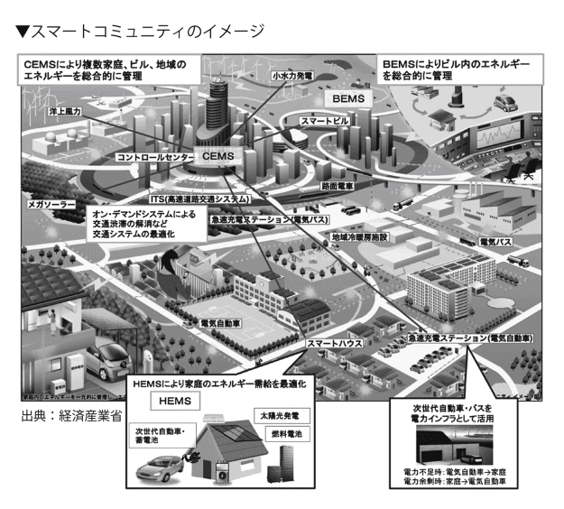

| 「スマート革命」で成長する日本経済 | |
| 片山 修 | |
「スマート革命」で成長する日本経済
片山 修
まえがき
「３・11 」――。
二〇一一年三月十一日の東日本大震災後、日本経済をめぐる景色は一変した。
東京電力福島第一原子力発電所の事故は、電力危機を一気に表面化させた。
各電力会社で原発の稼働率が低下、火力発電所の増強などで対応策がとられているが、電気料金の値上がり傾向に加え、供給不足が依然、懸念されているのが現状だ。
指摘するまでもなく、電力は経済活動の動力源そのものである。歴史的円高に加えて、電力危機は、日本企業の国際競争力を著 しく低下させた。そればかりか、震災後の計画停電は、社会生活にも大きな影を落とした。
日本経済は、「失われた二十年」から立ち直るどころか、ますます悪化の一途をたどるのではないかと心配された。
「３・11 」後、にわかに注目されるようになったのが、エネルギーの有効活用である。その象徴は、スマートグリッド（次世代電力網）である。スマートグリッドは、ＩＣＴ（情報通信技術）を駆使して、電力の需要と供給のギャップを効率的に解消する次世代型エネルギーシステムだ。
また、電力危機を機会に太陽光発電、風力発電、地熱発電など、再生可能エネルギーが一層、注目を集めるようになった。そうした分散型電源を系統電力網に取り込み、少しでも電力不足を解消するためのエネルギーイノベーションを目指すのが、スマートグリッド構想である。
それは、電力網にとどまらない。「ＨＥＭＳ （ホーム・エネルギー・マネジメント・システム）」、「ＢＥＭＳ （ビルディング・エネルギー・マネジメント・システム）」、「ＣＥＭＳ （コミュニティー・エネルギー・マネジメント・システム）」によって、地域全体のエネルギーの効率利用が進展する。また、産業界でも、「ＦＥＭＳ （ファクトリー・エネルギー・マネジメント・システム）」の取り組みが急速に進んでいる。
幸い、日本企業は、スマートグリッドに関する、さまざまな技術を保有する。
「スマートカー」「スマート家電」「スマートハウス」「スマート鉄道」などの分野で、世界に誇る技術と商品を持っている。日本のお家芸である、それらの分野は、世界をリードする。とりわけ、期待されるのは、スマートグリッドに欠かせない蓄電池だ。
「太陽光発電などの利用が拡大すると、電力供給は、どうしても不安定になります。そこで、蓄電池により、電力供給を平準化し、さらに余剰時の電力を貯蔵して、ピークカットに対応し、停電時のバックアップとして活用する。
蓄電池をめぐっては、韓国や中国などと厳しい競争を繰り広げていますが、目下、日本がリードしています」
そう語るのは、早稲田大学理工学術院国際情報通信研究科教授、同大学ナノ理工学研究機構副機構長の橋本正洋氏だ。
世界の電池市場は、二〇二〇年に二〇兆円と予測されている。電池産業は、まさしく有望な成長産業分野である。
一九七〇年代の二度の石油危機をチャンスに変え、日本経済の回復を果たしたのと同様、今回も電力危機を機にスマートグリッド技術に磨きをかけて、いまこそ「失われた二十年」に別れを告げなければいけない。
スマートグリッドを軸とする「スマートシティ」は、われわれのライフスタイルも変える。「スマートシティ」では、さまざまな最先端技術によって、本文で紹介するように、環境共生、健康長寿、新産業創造都市が生まれ、人々の生活の在り方や価値観に転換を促すだろう。それは、社会イノベーションそのものである。
私は、こうしたさまざまな分野でのイノベーションを総称して、「スマート革命」と呼ぶ。長期にわたって停滞を続けてきた日本経済を再生させるのは、「スマート革命」である。「３・11 」を機に、日本の新たな成長の道筋は、鮮明に浮かび上がったといえる。
本書は、進行中の「スマート革命」のドラマと最前線からの報告である。
本書刊行にあたっては、インタビューに応じてくださった方々および関係者の皆さんにこの場を借りてあらためてお礼申し上げます。なお、登場いただいた方々の所属部署や役職は、原則として取材当時のままです。
出版にあたってお世話になったＰＨＰ研究所・書籍第一部編集長の白石泰稔氏、白地利成氏、櫻田真由美氏に感謝の意を表します。
二〇一三年三月
片山 修
目次
装丁 ：一瀬錠二（Art of NOISE）
装丁写真：© isoga - Fotolia.com
第１章 インフラ企業は成長市場に乗れるか
新たなビジネスチャンスの到来
世界では、スマートグリッド（次世代電力網）、スマートシティ（環境配慮型都市）、スマートコミュニティなど、「スマート」を冠した町づくりが花盛りだ。再び、問う。いま、なぜ「スマート」なのか。
スマートシティ事業は、二つの立場からのアプローチが考えられる。
マクロからの取り組みと、ミクロからの取り組みだ。指摘するまでもなく、マクロとミクロの事業分野が一体となって初めて、「スマート革命」は進行する。
この場合のマクロとは、社会インフラだ。電気、通信、熱、水、交通、医療など、社会インフラのスマート化である。この章は、スマートシティを支える、社会インフラの視点から見ていきたい。
新興国では、基本的なインフラ整備が不十分なままに、急激な経済成長を遂げるなかで、都市人口が爆発的に増えている。都市部への人口過密化は、電力不足に加え、水不足、大気汚染、交通渋滞などを招いている。一方、先進国では、二酸化炭素（ＣＯ２ ）の排出量削減と、経済成長を両立させた、高効率かつ低炭素の次世代都市が求められている。
これら地球規模の課題の解決策として、浮上してきたのが、スマートグリッドを軸とした、「スマート社会」の構築である。
ただし、その完成形は、今日、実証実験が始まっているとはいえ、いまだに完全な姿が見えているわけではない。
それでいて、多くの企業がスマートシティ事業に取り組んでいるのは、大きなビジネスチャンスがあり、また、「スマート産業」と呼ぶべき、新しい産業を生み出す可能性が潜んでいると考えられるからだ。
「これまで、新しい産業が興 っても、ＧＤＰがそれほど伸びないというのは、どこかが大きくなったら、どこかが萎 んでいるからです。いわば、産業がカニバライズ（共食い）するわけですね。従来、産業はそうやって代替わりしてきました。
ところが、社会インフラについていえば、何かが大きくなって何かが萎むということはありません。
たとえば、エネルギーマネジメントはなくなりません。いまあるものがスマート化することによって、無駄なものが減って、有用なものが残るだけです。明確に何かが食われて、新しいものが興るという産業とは異なります。いわば、価値を少しずつ底上げすることによって、新たなプラスアルファの層が生まれてくるのが、スマートコミュニティだと見ています」
と、東芝執行役常務クラウド＆ソリューション事業統括部長の下辻成佳氏はいう。
ＩＴ企業、インフラ総合電機メーカー、通信事業会社などは、スマートシティ事業をビッグビジネスチャンスととらえている。
これらの企業は、いま、スマートシティをめぐって、熾烈な開発競争を繰り広げている。彼らは、いかなる未来社会を築こうとしているのか。以下は、スマートシティ開発の最前線の報告である。
ＩＢＭのスマーター・プラネットとは
世界に先駆けて、スマート化の取り組みを始めたＩＴ企業がある。ＩＢＭである。
二〇〇八年、ＩＢＭは「スマーター・プラネット（賢い地球）」をコーポレート・ビジョンに掲げた。
「スマーター・プラネット」の狙いは、ＩＴ（情報技術）による、社会の効率化や省力化だけではない。社会全体を複合的なシステムとしてとらえ、環境、エネルギー、都市化、医療、食の安全など、多方面にわたる今日的な課題を解決し、地球をよりスマートにすることを目標にしている。
社会のスマート化どころか、地球のスマート化だ。ここに、日本企業にはない、米国企業のスケールの大きさを見て取ることができる。まさにビッグコンセプトだ。
「この『スマーター・プラネット』とは、環境だけでなく、地球全体をよりよく、より賢くしましょうという意味なんです」
こう話すのは、日本ＩＢＭのスマーター・シティー事業担当執行役員の吉崎敏文氏である。
スマート化というと、まず環境面に目がいきがちだが、環境以外の事象も含めて、社会基盤や社会サービスをよりよくしていくのが、ＩＢＭの「スマーター・プラネット」だ。そして、その中核をなすのが、「スマーター・シティー」である。
世界の都市人口は、一九〇〇年には地球の人口のわずか一三％だったが、二〇五〇年までに七〇％に増加し、全エネルギーの七五％を消費する。急激な都市化は、都市問題を顕在化させる。環境やエネルギー、交通など、都市への人口集中によって引き起こされる地球規模の都市問題をどう解決するのか。二十一世紀に課せられた大問題である。
「都市化が進むにつれ、社会インフラの負担は増大し、仕組みが複雑化、事態が深刻化してくるなかでは、総合的なアプローチを取らない限り課題の解決は困難です」（吉崎氏）
都市にはさまざまな問題が集約されており、これらの問題を解決することが、地球規模の課題解決につながる、とＩＢＭは考えている。
「スマートではなく、あえて〝スマーター〟と比較級を用いているのは、理由があります。たとえば、スマートシティといっても、国や各都市によって置かれている環境や課題が異なり、目指すスマート化は、一律ではありません。画一的に考えることはできませんからね」
と、吉崎氏は語る。
それは、ＩＢＭの「こだわり」といっていいだろう。氏は、次のように続けるのだ。
「スマーター・シティーというと、都市開発や町づくりのイメージが強いんですが、その神髄は、ハードウエアができれば、突然すごい町が現われるというものではありません。また、スマートシティは、これだという画一的イメージがあるわけではありません。
だいいち、〝箱物〟に固執している限りは、供給者側の論理から、抜け出られませんね。重要なのは、そこに生活する人です。誰が主役か、ということです。私たちの生活そのものをいかにスマートにするか。それは、社会イノベーションそのものだと思います」
現代の都市は、エネルギー、上下水道、通信、行政サービス、交通、教育、医療、安全など、さまざまの機能によって構成されている。そして、それらのシステムやプロセスは、相互に連携しながら、複雑かつ高度に機能し、都市に住む人々の生活を支えている。これら高度かつ複雑な都市機能を、ＩＴを活用し、より効率的に運営し、私たちの生活空間をよりよくする。社会イノベーションすなわち「スマート化」である。
「スマート化」が可能になった背景として、ＩＢＭは、ＩＴの進展をあげる。それは、以下、〝三つのＩ〟で象徴されるというのだ。
▼Instrumented（機能化）＝あらゆるものの状態をリアルタイムで計測、感知、観測することが可能になる。
「二〇一〇年までにはヒト一人につき一〇億個ものトランジスターが存在し、一個あたりの費用は一〇〇〇万分の一円以下という世界が現実のものとなります。サプライチェーン、医療ネットワーク、都市、そして河川など、自然環境を含むあらゆるものにセンサーやＩＣチップなどが組み込まれ、状態がリアルタイムで計測、感知、観測できるようになります」（「日本ＩＢＭコーポレート・レスポンシビリティー・レポート２００９」より）
▼Interconnected（相互接続）＝ヒト、モノ、システムがお互いに接続され、新しい形の連携が可能になる。
「間もなく二〇億もの人が、インターネットを介してつながりを持つようになります。また機能化されたシステムや機器による、新しい形の連携も可能となります。車、電化製品、カメラ、道路、パイプラインはもとより、医薬品や家畜類なども含めてこれらの相互作用による生まれる情報量は、史上空前のものとなるでしょう」（同）
▼Intelligent（インテリジェント化）＝機能化され、相互接続されたさまざまなモノから収集された膨大な情報を、能力の高いハードウエアやソフトウエアを用いて分析することにより、さまざまな機能を向上させる知見の生成が可能になる。
「強力なコンピューター・システムとクラウド・コンピューティングが、インターネットや携帯電話、ＰＣなどのユーザー端末の使用により発生する大量のデータを統合、プロセス、モデリング、予測、分析の迅速な処理を可能にします」（同）
これらのＩＴの進化により、スマート化が可能になるというのだ。
ビッグデータを活用するビジネス支援
ＩＢＭは、世界に先駆けて、スマートシティにおける三つのコンセプトと、一一の事業分野を定めた。つまり、スマート化の方向性を示した。わかりやすく、チャートを描いたのだ。
【インフラ】エネルギー、水資源、通信、交通、環境の一部。
【市民】教育、社会保障、医療、公共安全の一部。
【計画・管理】都市計画・開発、行政・省庁アドミニストレーション、環境および公共安全の一部。
「これら三つのコンセプトと、一一の事業分野を区分していち早く提示することができたのは、ＩＢＭが長年にわたってビジネスで培ってきたソリューション構築・提供およびコンサルティングの実績と経験、そしてスマーター・シティーに関連するプロジェクトの実施経験の蓄積、各種領域の専門家を持っているからです」
と、吉崎氏は強調する。
ＩＢＭは、これまでに世界で二四〇〇を超えるスマーター・シティー・プロジェクトを進めてきた。この膨大な数のプロジェクトの取り組みの背景には、ＩＢＭのビジネスモデルの変遷がある。
よく知られているように、ＩＢＭは一九六四年、世界初の汎用コンピュータ「システム／３６０」を開発し、メインフレーム市場において大きな成功を収めた。一九八一年には、ＩＢＭパーソナル・コンピュータ（ＩＢＭ ５１５０）を発表し、一般家庭、個人にもコンピュータを広めた。
九〇年代以降は、ハードウエアからソフトウエア、サービスへと、ビジネスモデルを転換した。そして、近年の中核的事業は、ソフトウエア、コンサルティングを含むサービスなどを提供するソリューションビジネスである。
このように、ＩＢＭは、十年あるいは二十年ごとに、新たなビジネスモデルを編み出してきた。これから二十年の新たなビジネスコンセプト、すなわち次の世代へとつなぐ、新しい構想が、「スマーター・プラネット」なのだ。
「ソリューションビジネスを進めるなかで、お客さまのスコープを明確にして、成功体験と失敗体験の両方を積み重ねてきた結果、構想の策定から実現可能なソリューションを立案・実行するご支援ができるようになったんですね」（吉崎氏）
ＩＢＭが取り組もうとしているのは、情報インフラを提供し、そこで誕生する新たなビジネスモデルを、ＩＴに関わるサービスでサポートしていくことだ。
たとえば、これまでパソコンしかなかった時代から、タブレット端末やスマートフォンの登場により、膨大なデータが生成されるようになった。いわゆるビッグデータである。このビッグデータを活用する新しいビジネスの支援をするというのが、ＩＢＭの戦略だ。
ＩＢＭは、ネットワークやセキュリティ、基幹業務、アプリケーションなど、長年のソリューションビジネスのサービスで蓄積してきた、さまざまなノウハウを保有している。したがって、ビッグデータの管理分析は、お手のものだ。
スマートグリッドは、発電所から家庭のコンセントに至るまでのオペレーション全体にわたり、電力の双方向の流れを自動化し、監視と制御など、マネジメントをする。その過程で成されるビッグデータを管理分析する。
その場合、二つの分析（アナリティクス）力が求められる。一つは、流動するデータをリアルタイムで処理するための「リアルタイム・アナリティクス」だ。もう一つは、蓄積されたデータを分析し、その本質を見抜く「ディープ・アナリティクス」である。
わかりやすくいえば、センサーで蓄積されたデータの傾向を分析し、それをリアルタイムのデータ監視に反映させて、たとえば異常をいち早くキャッチする。それには、①データを超高速で処理する、②非構造化データを高速処理する、③膨大なデータをリアルタイムで処理する――ソリューションが求められるのだ。
そして、ビッグデータから得られた分析結果を、具体的行為に結びつける上で欠かせないのが、各種のミドルウエアである。
ＩＢＭは、状況を把握し、データを集めて見える化し、分析して最適なアクションを起こすことを可能にするソリューションを保有している。クラウド・コンピューティング技術や高度な分析ソフトウエア、資産管理などのソリューション、ビッグデータを活用するための製品、ソリューションなどを持つのだ。これは、ＩＢＭの強みといえよう。
二四〇〇以上のプロジェクトを実施
「スマートシティというと、とかく行政だけを考えがちですが、住民と行政、企業が参加しないと、スマート化はできません。
つまり、住民と行政、企業の協業があって、初めてスマートシティは成り立つわけです。ＩＢＭでは、スマーター・シティーを実現するための具体的なツールを提供し、各社のソリューションをつなぐことも大きな役割だと考えています」（吉崎氏）
ＩＢＭは、エネルギー・マネジメント基盤を構築し、通信プロトコルや異なる機種のフォーマットの変換を容易にしている。つまり、異なるフォーマットや、異なるプロトコルをつなぎ、双方向でのスタンダードのほか、オープン化をサポートしているのだ。
ＩＢＭの戦略的協業・共創モデルの構築力といっていい。アライアンス企業とのコラボレーションを最大限に活かし、オープンテクノロジーと幅広いソリューションを提供し、複雑な課題の解決を支援するソリューションを備えているのだ。
このほか、日本ＩＢＭは、北九州市での実証実験で行なわれている、ダイナミックプライシングの制度設計の支援を行なっている。吉崎氏は、次のように語る。
「ダイナミックプライシングの実証実験では、変動する電気料金情報が適時消費者に伝えられ、効率的な節電や消費者の生活行動の反応を実証実験しています。消費者の生活行動を変えられるか。需要者である消費者側から見た制度設計やデザインを行ないました。
われわれは、デマンド側のパワーが重要だと思っています。なぜなら、それによってさまざまな機器やソフトの仕様を決めることになるからです。実証実験では、デマンド側の行動様式を知ることができるんですね」
前に記したように、ＩＢＭは、全世界で二四〇〇を超えるスマーター・シティーのプロジェクトを実施し、その実績に基づく経験や知見を有する。大規模なプロジェクトで培ったプロジェクト・マネジメント能力と技術を身に付けている。それだけに、さまざまな側面から課題解決の支援が可能だ。
このほか、社会貢献活動の一環としては、世界で「スマーター・シティー・チャレンジ」プログラムを展開している。これは、世界一〇〇都市に三年間で総額五〇〇〇万ドル相当の専門家の支援やサービスを提供するプログラムだ。スタートしたのは一一年である。
同年には、ボルダー（アメリカ）、成都（中国）、ニース（フランス）、札幌など、二四都市が選出されたのに続き、一二年にはバーミンガム（イギリス）、全州（韓国）、ナイロビ（ケニヤ）、石巻など、三三都市が選出された。
各都市のスマーター・シティーへの取り組みの第一ステップは、課題と原因を明確化し、ビジョンを策定することにあるが、ＩＢＭの専門チームは、経済から健康、教育までさまざまな領域の都市問題に取り組むためのアドバイスを行なう。その結果、各都市が具体的に検討したプロジェクトは、経済や雇用の開発、交通手段の統合、喘息の発症率削減、学校制度向上など多様である。ＩＢＭの専門チームは、経済から健康、教育までさまざまな領域の都市問題への取り組みを支援する。このように複雑なプロジェクトを包括的に統括、管理し、ソートできる組織、人材、技術を一社で保有しているのが、ＩＢＭのこれまた、強みといっていいだろう。
こうした蓄積が、ＩＢＭのスマーター・シティー構想を支えているのだ。
東芝が打ち出した新たな成長戦略
振り返ってみれば、〇八年九月十五日のリーマン・ショックで、多くの日本企業は致命的な打撃を受けた。重電機メーカーも、その例にもれない。
東芝は、〇九年三月期二五〇二億円の営業赤字を出した。同三月、トップの交代が発表され、副社長の佐々木則夫氏が就いた。この年、日立も、トップが交代した。
固定費削減を徹底的に進め、一転、翌一〇年三月期に一一七二億円の営業黒字を計上し、Ｖ字回復させた佐々木氏は、新たな成長戦略としてスマートコミュニティ事業を打ち出した。
ちなみに、佐々木氏は、一〇年に設立され、参加メンバー四〇〇社以上を数える「スマートコミュニティ・アライアンス（ＪＳＣＡ）」の会長を務めている。日本のスマートシティ事業の旗振り役である。
「われわれが、いま、スマートコミュニティをなぜ必要としているか」
一一年十二月十六日、東芝は「スマートコミュニティが創る成長戦略」の発表会を帝国ホテルで開き、説明者として壇上に立った佐々木氏は、冒頭、そう切り出した。
佐々木氏は、地球規模での「環境変化のメガトレンド」についての紹介から始めた。ニュアンスの違いこそあれ、説明を聞く限りスマートシティへのアプローチは、ＩＢＭとほぼ同じだ。
「環境変化のメガトレンド」の第一点は、「人口増加」と、「都市集中化」だ。この二点は、とくに新興国で顕著であるという。
一一年十月末、世界の人口は、七〇億人を突破した。今後も、アジア、アフリカを中心に増え続け、五〇年には、これらの地区の人口は、さらに一・五倍に膨らむとみられている。その頃、世界の人口は、九一億五〇〇〇万人になる。
とりわけ、新興国では、都市への人口流入が加速している。都市集中化だ。一九五〇年に二九％にすぎなかった世界の都市人口は、二〇〇九年に約五〇％まで上昇した。
急激な人口増加と都市集中化に伴い、さまざまな問題が引き起こされている。新興国では、都市部の交通渋滞、水不足、食糧不足など、生活と密着した問題が、ますます深刻化の度合いを増している。一方、先進国では、これらに加え、少子高齢化や医療費の高騰、介護問題などが起きつつある。
第二点は、エネルギー問題だ。新興国では、経済的発展と生活水準の向上、さらに人口増加によって消費電力量が増加する。エネルギー需要の増加だ。
第三点は、セキュアな情報インフラの整備だ。経済のグローバル化によるコミュニティの拡大、デジタルコンバージェンス、サイバーテロの増加などへの対応が求められる。
グローバル化やＩＣＴ（情報通信技術）化が進展し、コミュニケーションの即時化やネットコミュニティが拡大する結果、サイバーテロの増加も懸念され、その対応も課題の一つだ――と、佐々木氏は、席上、縷 々 説明した。
重電の強みはインフラ分野
東芝スマートコミュニティ事業統括部長の丸山竜司氏は、東芝が取り組むのは、「スマートコミュニティ」だと、強調する。
「東芝は、スマートシティという言葉を使いません。スマートコミュニティといっています。そこに深い意味合いを込めています。
スマートシティは、行政区など物理的な空間のイメージです。一方のスマートコミュニティはコミュニティ（地域社会・共同体）ですから、人が集まってくるところなんですね。
コミュニティには、人間が人間らしく生きるために必要なことがそろっていなければいけない。つまり、必ずしも効率性だけではなく、快適さ、住みやすさ、住み心地、あるいは教育や子どもたちの幸せ、お年寄りと子供の共生などがかなう場なんですね。
都市問題や環境問題を解決しつつ、いつの間にか人々が集まってきて人間らしいコミュニティを形成する。それが、スマートコミュニティだと思っています。既存の価値観や産業区分なんて軽く超えてしまう、大きなコンセプトなんです」
つまり、スマートコミュニティは、世界が直面する多くの問題を解決する。
「この地球で、いま残されている資源を使って、より長く人類が生き延びていくために、スマートコミュニティのプロセスは欠かせません」
と、丸山氏は強調するのだ。
インフラ分野を主力とする総合電機メーカーとして、東芝は、スマートコミュニティ市場において、大きなプレゼンスを持っているという。
たとえば、電気についていえば、原子力、火力、水力、メガソーラーなど各種の発電技術は世界最先端だ。電力会社との信頼関係のもとに事業を展開してきた経験を有する。
また、再生可能エネルギー分野では、東芝は、国内電力向けメガソーラーでトップシェアを誇るほか、揚水発電は、世界最高揚程をもち、地熱発電も世界トップシェアを有する。
「われわれの持っているＩＣＴ、制御技術、ＧＰＳなどの先進技術などを応用し、インテグレーションします。これまで個別で行なってきた各事業を、クラウドの中で統合し、社会インフラ全体の効率化を図りたいと考えています」（丸山氏）
エネルギーの一連の流れを把握
東芝が、「スマートコミュニティ事業統括部」の前身のスマートファシリティ事業統括部を設置したのは、一〇年の四月である。
その後、同部は、電力関係のスマート化を手掛ける、別の組織のスマートグリッドチームを統合し、同年十月にスマートコミュニティ事業統括部と名称を変更し、編成をし直した。社長直轄組織である。
「ビルや工場などの単位でファシリティ（設備）だけをスマート化するのでは、お客さまの問題を解決するには、不十分だと考えました。ローカル性の高い、地域特性を持ったスマート化に取り組むために、ファシリティやグリッドよりも概念を広げ、コミュニティのレベルでスマート化を図ろうと考えたんです」
と、丸山氏は説明する。
東芝は、多くの事業ポートフォリオを抱えるが、スマートコミュニティ事業統括部は、そのほとんどと関わりがある。したがって、組織は全社横断的で、総勢三〇〇人以上という大所帯だ。他事業との兼任者も多い。
現在、川崎市にスマートコミュニティ事業体制を強化するため、地上一五階建ての「スマートコミュニティセンター」を建設中だ。一三年十月に開所予定で、収容人数は七〇〇〇人という。スマートコミュニティ事業に対する本気度がうかがえる。
「われわれは、発電所のタービンを始め、エネルギーの供給サイドの方々と一緒に事業をしてきた歴史があります。一方で、洗濯機や冷蔵庫、テレビ、パソコンといった家電製品に代表されるように、需要家サイドに対しても、さまざまな形のソリューションを提示してきました」（丸山氏）
つまり、エネルギーを生み出すところから、消費するところまで総合的に関わり、一連の流れを把握している。
だから、コミュニティレベルのエネルギー問題をトータルに解決する能力を備えるという。総合力があるというのだ。
東芝の抱える事業は、①テレビやパソコンなどのデジタルプロダクツ、②半導体やＨＤＤなどの電子デバイス、③発電所のタービンなどの社会インフラ、④洗濯機や冷蔵庫、ＬＥＤ照明器具などの家電と、大きく四つに分けられるが、これらのすべてが、スマートコミュニティ実現に欠かせない分野である。丸山氏はこう続ける。
「われわれは、エネルギーの供給、需要家サイド両面とつながりがあることに加え、ＨＤＤなどのストレージ（記憶装置）と、ＮＡＮＤ型フラッシュメモリを有し、ハイブリッドに力を発揮する能力も持ちます。この独特なポジションから、スマートコミュニティをとらえることができるのは、他社にはない特徴だと自信を持っています」
もっとも、東芝に近いポジションをとる競合はほかにもある。
欧州でいえば、独シーメンスだ。コンピュータや通信の事業は、スピンアウトしたものの、発電所のプラントや鉄道車両を手掛けるなど、東芝と似た事業構造を持ち、エネルギーの切り口から戦略的にスマートグリッドに取り組んでいる。
このほか、仏電機大手シュナイダーエレクトリックや、スイス重電大手ＡＢＢも同様だ。国内では、日立が比較的東芝と似たポジションにある。これらは、すべてライバル企業だ。
地元企業との協業がカギ
丸山氏は、スマートコミュニティ事業を手掛けるにあたって、世界中の実証実験の現場をとび回っている。
「先週は中国、その前の週はインド、その前は中国に行っていました。われわれがやろうとしている実証が、その地域で、どのような意味合いを持つのか。それは、現地のパートナーさんと話してみないとわからないことなんですね」
スマートコミュニティは、地域によって特性があり、ローカル性が強いため、現地に実際に足を運び、地域の企業や人と話をしてみなければ、実情はわからないというのだ。
丸山氏が、実証実験の現場で接するのは、現地の人々の期待と、シビアな目だ。
たとえば、工業団地のスマート化の場合、地方公共団体が事業者になることが多い。税金の補助が出る場合などは、とくに、地域の産業を巻き込み、一緒になって事業を進めてほしいというニーズが強い。
したがって、ディベロッパーを確実におさえると同時に、地域の産業と協業してシンセシスを生み出すことが求められる。つまり、特定の企業と組むのではなく、地域的なアライアンスは、プロジェクトごとに変化させる必要がある。
そのうえで、そこに暮らす人々、生 業 を持って生活している人々と連携して新しい付加価値を創造する。地元産業と一体化し、現地の企業が利益をあげられる仕組みをつくり、生活に寄り添ったビジネスを展開することが大切だ。
その点、スマートコミュニティ事業は、これまでの単品売り切りのビジネスモデルとは決定的に異なる。
「現地の不動産や、電力会社の人たちと話しても、その真剣さが伝わってきます。
具体的に、どんなメリットがあって、何の役に立って、彼らはそこにどれだけ投資し、どれだけのリターンがあるのか。東芝はどこまで協力するのか。ビジネスモデルに対して非常にシビアなんですね。
その地域に深く入り込む勇気を持って取り組まなければ、スマートコミュニティ事業は成功しません」（丸山氏）
世界の最先端企業とアライアンスを組む
佐々木氏は、「アナリシス（分析・分解）からシンセシス（統合・合成）への事業構造転換」を提唱する。
「これまで東芝は、解析的アプローチで、電気、水、交通、医療、ビルというふうに、アナリシス、すなわち個別の要素に分けて事業を展開してきました。今後は、逆に、合成して、より価値のあるソリューションにしないといけません。これがシンセシスということです」
シンセシスの長所は、技術やノウハウの組み合わせによって、さまざまなバリエーションを生み出せることだ。アナリシスでは応用に限界があるが、シンセシスであれば、たとえば、その地域の特性にあった技術を組み合わせ、最適なソリューションが創出できる。
丸山氏は、次のように語るのだ。
「これからは、分析的な手法によるソリューションでは事足りません。社内外で技術やノウハウを合成していくことが求められます。東芝は、ユニークなポジションにあるからこそ、他分野で、世界的に強い企業とアライアンスを組み、より強力なシンセシスを生み出すことが求められているんですね」
実際、スマートコミュニティ事業では、再三指摘してきたように、関係する技術領域が広く、一社ですべての領域をカバーすることはできない。世界の最先端企業とアライアンスを組み、よりスピーディに高品質のサービスを提供することが求められる。
「東芝は、オープンな関係を幅広くつくるのが得意です。グローバルに、スピード感を持って、最先端技術を組み合わせ、自社の強みをさらに発揮できる関係を築く。これも東芝の特徴の一つですね」（丸山氏）
現に、東芝は、一一年六月、米ヒューレット・パッカード（ＨＰ）と組み、スマートコミュニティとそれを構築するシステムやクラウドサービスなどの分野で、協力関係を構築すると発表した。
佐々木氏は、次のように語るのだ。
「ＨＰさんは、サーバーやコモンユースのアプリケーション分野に非常に強い。一方、われわれは、これまで培ってきた電力供給や医療、店舗のアプリケーションサービスを得意としています。それだけに、ある程度分業して、一つの具体的なソリューションをつくるために調整をしなければいけない」
つまり、従来、コンペティターとなり得た企業との間で、ウインウインの関係を構築し、相乗効果を発揮する方向だ。
ＨＰ以外にも、東芝は近年、次々と海外の有力メーカーの買収や、アライアンスに乗り出している。
代表的なのは、一一年七月に買収したスイスのランディス・ギア（Ｌ＋Ｇ）だ。このＬ＋Ｇは、電力計全体の世界シェア一〇％超で、高機能スマートメーターでは、シェア三割超を握る世界最大手だ。
東芝が発送電分野に強みを持つのに対し、お互いに補完関係ができる。また、Ｌ＋Ｇは配電自動化やメーター管理など、東芝が従来、海外で持っていなかった分野に強い。
さらに、Ｌ＋Ｇは、ワールドワイドかつ地域密着で事業を展開し、三〇カ国以上に拠点を構えており、電力会社、配電会社などを中心に約八〇〇〇社の顧客を抱える。
以下は、佐々木氏の説明だ。
「インフラ系のビジネスは、ゼロから始めたら時間がかかるし、市場で認知されて、お客さまを獲得するまでが難しい。だから、すでに市場にプレゼンスを持つ会社を買うわけです。Ｌ＋Ｇの買収は、技術を買うだけではありません。三〇カ国の市場とお客さまも一緒に買ってこられると認識しています」
統合ＢＥＭＳによるＣＯ２ の削減
スマートコミュニティは、新たなビジネスを創出する。たとえば、誕生したビジネスの一つに、「アグリゲータ（エネルギー利用情報管理運営者）ビジネス」がある。
工場や大口の需要家は、以前から電力会社と電力負荷調整契約などを行ない、電力供給が逼 迫 した際に、ピークカットやピークシフトに応じてきた。東日本大震災によって顕在化したエネルギー供給の問題により、中小ビルにも電力消費量削減が求められ、ＢＥＭＳの普及が急がれるようになった。
ところが、中小ビルにとっては、ＢＥＭＳの設置や運用は、大きなコスト負担になる。そこで、中小ビルの負担を軽減しながら、ＢＥＭＳ普及を進め、エネルギー最適化を実現させるのが、ＢＥＭＳアグリゲータである。
その仕組みは、以下の通りだ。中小ビルは、ＢＥＭＳアグリゲータの提供するＢＥＭＳをビルに導入し、一年以上のエネルギー管理支援サービス契約を結ぶ。導入したＢＥＭＳの機能に応じて、二分の一または三分の一の補助金が支給される。
これに対して、ＢＥＭＳアグリゲータは、中小ビルにＢＥＭＳを導入し、クラウドなどを用いたシステムによって中小ビルの省エネを管理する。
具体的な業績としては、需要側つまり建物内の空調や照明などの設備をコントロールし、節電を実行する。電力需要抑制すなわち「ネガワット」の容量を確保する。

東芝スマートコミュニティ事業統括部主幹の羽深俊一氏はいう。
「需要抑制は、発電と同じ効果があります。発電所をつくって発電量を増やすか、需要を減らすか、つまり発電と需要のバランスが電力会社の仕事です。出力を減らすグループがないと、電力会社はその仕事ができないんです」
東芝は、「横浜スマートシティプロジェクト（ＹＳＣＰ）」において、「統合ＢＥＭＳ」の開発と実証を進めている。
統合ＢＥＭＳの特徴は、ＢＥＭＳが設置されたビル内のエネルギー管理だけでなく、ビル群全体でのデマンドレスポンスの最適配分や、ＢＥＭＳを導入していない中小ビルにも、クラウドサービスにより、ＢＥＭＳと同じ機能を提供することである。この統合ＢＥＭＳのデマンドレスポンス制御、省エネによって、一〇％から二〇％のＣＯ２ 削減を目標としている。
東芝スマートコミュニティ事業統括部スマートコミュニティ技術部主幹の飯野穣氏はこう述べる。
「ビルの省エネは、快適性とのトレードオフなんです。快適性をギリギリまで保ちながら、エネルギー消費量を最小にする。温度と湿度の両方を制御することで、省エネルギーで、快適性が維持できる条件を見つけながらやっていきます」
東芝によると、スマートコミュニティ関連の世界市場は、一五年に約一六三兆円に成長するという。このうち、東芝がターゲットとする市場規模は、全体の約五％にあたる八兆円だ。一五年度の売上目標は一一年度見込みの二・三倍の九〇〇〇億円である。海外の売上高比率は、六三％を見込んでいる。うち、先進国三四％、新興国二九％である。
ＮＴＴが担う〝Ｍ２Ｍ〟
情報通信は、社会の神経回路である。神経回路は、脳からの指令を全身に伝え、また、五官で感じとった情報を脳に伝える双方向ネットワークであり、それなしには、身体は機能しない。
同様に、世界中で取り組みが脚光を浴びているスマートグリッドや、スマートコミュニティの実現には、神経回路であるネットワークが欠かせない。
従来、エネルギーの供給量や需要量などの情報は、供給サイドだけが扱っていればよかった。しかし、太陽光発電や風力発電など再生可能エネルギーの導入により、分散型電源の発電量などの情報を、供給サイドにあげる必要が生じてきた。さらに、スマートグリッドが本格化すれば、ＥＶ（電気自動車）やその他の家電製品、モバイル端末など、機器同士の間でも、エネルギーに関する情報のやりとりが生まれてくる。
求められるのは、人と人、人とモノに限らず、モノとモノをもつなぐ情報網、つまりエネルギーネットワークの構築だ。
「これまで情報通信は、電話の延長線上のコミュニケーションツールにすぎませんでした。しかし、エネルギーの情報通信が加われば、機器同士すなわち〝Ｍ２Ｍ（マシン・トゥ・マシン）〟が実現することになります」
と、ＮＴＴ理事で、研究企画部門エグゼクティブプロデューサの宮崎達三氏はいう。
これまで人と人、人とモノ、人と情報をつないでいた情報通信は、これからはモノとモノすらもつなぐことが求められる。それは、新しい巨大な情報通信市場の誕生を意味する。
電力計に通信機能を持たせる
ＮＴＴは、スマートコミュニティの形成に欠かせないスマートハウスについて、二つの取り組みを行なっている。
一つは、スマートメーター（次世代電力計）に関連するネットワーク構築だ。
現在の電力計には、通信機能が備わっていない。電力計には、家庭に電力を取り込んでいる電力ケーブルにつながった「電力線ボード」と、「計量部」と呼ばれる部分があり、家庭で使用した電力量は「計量部」によって測定される。それを、検針員が各家庭をまわって目で見て確認し、電気料金を請求する仕組みだ。
スマートメーターには、「電力線ボード」「計量部」に加え、「情報通信ボード」が備わっている。通信ケーブルを経由して、電力事業者につながり、家庭の電力使用量などの情報を伝達することができる。従来検針員が確認していた情報が、電力事業者にリアルタイムで届く仕掛けだ。
ちなみに、情報通信ネットワークと電力ネットワークは、「ケーブル」を使ってはいるが、まったくの別物である。
通信ケーブルの電圧が一〇〇ボルト以下なのに対し、家庭やビルなどに電気を送り届ける配電線は、変電所で減圧した後でも、高電圧のもので六〇〇〇ボルトだ。効率よく電気を送配電するため、発電所から変電所まで電気を送る送電線は、最高で五〇万ボルトにもなる。規格がまったく異なるため、電力ケーブルを情報通信に使ったり、逆に情報通信ケーブルを送配電に利用することはできない。
「われわれがスマートメーター自体をつくることはありません。しかし、通信ボードに、われわれが提案したものを盛り込んでいただくことはあり得ます。
たとえば、年齢確認が必要な酒類やタバコの自動販売機などには、われわれの提案した通信ボードが搭載されています。それと似たようなものを、スマートメーターに搭載し、通信機能を持たせることになるかもしれません」
と、宮崎氏は説明する。
もう一つは、ＨＥＭＳへの取り組みだ。ＨＥＭＳは、家庭内のテレビやパソコン、冷蔵庫、洗濯機、ＥＶなど、さまざまな電気機器をつなぎ、利用するエネルギー量を最適に制御するシステムだ。まずは、〝Ｍ２Ｍ〟すなわち各機器をつながないことには始まらないのだ。
宮崎氏は、経済産業省が主催する「スマートハウス標準化検討会」の委員として、ＨＥＭＳと家庭内機器、また、ＨＥＭＳとスマートメーター間のインターフェースの標準化推進に取り組んでいる。
しかし、現状は、家庭内の機器をつなぐインターフェースは複数あり、一つに統一することが難しい。したがって、さまざまな機器の異なるインターフェースの接続をサポートするホームゲートウェイの開発に取り組んでいる。
また、各家庭内の機器の情報を一つのクラウド上に集め、さまざまなサービスに活用する、ＨＥＭＳクラウドの開発にも取り組む。電力の需給量の把握や、住人に負担のかからない節電の実現を目指しているのだ。
ビルのスマート化を図る
家庭用のサービスだけではない。ＮＴＴは、オフィスビルやマンション向けのサービスすなわちＢＥＭＳへの取り組みを行なっている。複数のビルの電力使用量を「見える化」し、クラウド上で設定値を超えないように制御するサービスを提供しているのは、グループ会社のＮＴＴファシリティーズだ。
提供するサービスの内容は、建物内の受変電、空調、給排水、照明、防災、防水などの設備を統合監視・制御するＢＡＳ（ビルディング・オートメーション・システム）とＢＥＭＳを組み合わせ、建物全体のエネルギー消費量を最小化し、ＣＯ２ 排出量削減を図る仕組みだ。
たとえば、東京都港区のグランパークタワーでは、熱や電気について、需要側と供給側で最適制御するための〝ＦＩＴ ＢＥＭＳ〟と呼ばれるシステムを導入し、ＮＴＴ都市開発と協力しながら、ビル全体のスマート化を図る。熱は熱供給会社と、電気はＥＶと連携し、情報をやりとりしながら、リアルタイムで熱と電気を最適制御することにより、ＣＯ２ 排出量を削減するのだ。
また、ＮＴＴファシリティーズと、同社が出資する新電力（特定規模電気事業者）「エネット」は、電気代を節約できるマンション向け電力サービス「エネビジョン」を販売している。このサービスでは、時間帯別で料金設定を変え、昼と夜で最大二・五倍の差をつける。ダイナミックプライシングと呼ばれる「時間帯別料金サービス」だ。
マンションの各世帯にスマートメーターを設置し、電力消費を細かく計測して可視化する「見える化」サービスを提供して、節電を呼びかけ、消費量を前日より減らした世帯に対して、減らした量に応じて翌月の電気代の支払いに使えるポイントをつける節電ポイントサービスも行なっている。
重要なのは、我慢して節電したり、人の手を介して行なう節電ではなく、このようにスマートメーターから取り込まれるデータなどを活かし、自然に節電できるシステムをつくりあげることだ。人の努力に依存する限り、節電には限界がある。
このシステムは、三〇〇〇戸を対象とした試験で、昼間時間帯の使用電力の二〇％抑制につながったという。首都圏から展開を始め、一五年には、全国で一〇万世帯への供給を目指す計画だ。
「スマートコミュニティは、よくいわれるように技術の縮図です。通信の技術も必要ですが、エネルギーの技術もいりますし、データベースの処理も、クラウド系の技術も必要です。携帯端末などの飛び道具も必要になります。
スマートコミュニティにおける総合的なパッケージサービスは、ＮＴＴグループが力を合わせなくては、つくりあげることはできません」
と、宮崎氏はいうのだ。
現在、ＮＴＴは、グループ各社の代表約二〇人が集まってタスクフォースを組み、横串を通す形でプロジェクトを進めている。担当者レベルを加えて、約五〇人のチームである。
強みはデータの加工処理とつなぐ力
国内で情報通信事業を手掛ける企業は、ＮＴＴのほか、ＫＤＤＩ、ソフトバンク、イー・アクセス、ジュピターテレコムなどがある。海外でいえば、米国のＡＴ＆Ｔやベライゾン、韓国のＫＴやＳＫブロードバンドなどが代表的だろう。英、独、仏など欧州各国はもちろん、多くの国にはそれぞれ代表的な情報通信事業者がある。
これらの企業もまた、スマートコミュニティへの取り組みを進めている。たとえば、米ＡＴ＆Ｔ、ベライゾンなどは、スマートメーターのベンダーと提携してスマートグリッド市場への参入を始めている。韓国済州島のスマートグリッドでは、ＫＴ（韓国通信）が通信事業における中心的な役割を担っている。
グローバル市場でも、スマートグリッドをめぐる通信事業者の競争は加速することが予想されるが、では、そのなかで、ＮＴＴの強みとは何か。
「データの加工処理と、つなぐ力です。この二つが、われわれのコア技術です」
と、宮崎氏はいう。
データの加工処理は、スマートコミュニティに欠かせない、クラウド技術において必須である。標準インターフェースを定義し、さまざまな種類のデータを同じ形式のデータに変換して初めてつなぐことができる。その技術は、ＮＴＴの得意とするところだという。
「さまざまな機器からあがってきた情報は、いわば〝顔つき〟が違います。それをどう加工してお客さまに提供するかが課題ですね」（宮崎氏）
光回線、無線、携帯端末からあがってきたデータは、そのままでは同じ情報としてまとめて表示することができない。同じインターフェース上で、同じ種類の数字として表示し、分析するためには、どこかの段階で、データの種類をそろえる必要がある。その技術が求められるのだ。
さらに、ＨＥＭＳを考えた場合、ＥＶ、蓄電池、太陽光発電パネルなど、異なる機器から集めてきたデータを、同じインターフェース上に表示し、同じ数字として分析するためには、それらの加工処理が欠かせない。プロトコル変換、データ変換などは、ＮＴＴの得意とするところである。
「スマートシティのプロジェクトのなかでは、ネットワークに加え、ビッグデータやクラウドもまた、われわれにとって大きなビジネスチャンスになります」
と、宮崎氏は力説する。
現状、スマートシティにおいて、数百万という世帯の情報を管理したり加工したりするためには、どれだけのキャパシティがあれば十分にまかなうことができるかを調査中というのだ。
「ＮＴＴが扱う情報通信量は、世界有数です。データが大きくなればなるほど、われわれにしかできない仕事の領域に入っていくと思います」
と、宮崎氏は自負する。
また、つなぐ力といえば、ＮＴＴは、通信技術によって、本来つながらないものをつなげるのは得意とする。
ＨＥＭＳの運用にあたっては、ＥＶやＰＨＶ、洗濯機、冷蔵庫などの白物家電や、テレビやパソコン、オーディオなどの黒物家電の電力の使用状況のデータを把握する必要がある。そのためには、さまざまな機器に通信機能を持たせ、スマートメーターとの間をつながなければいけない。その技術を、ＮＴＴが提供できるというわけだ。
ライフスタイルの変革で数十％の節電
今後のシナリオについて、宮崎氏は、次のように説明する。
「まず、つなぐためのインターフェースをきちんと規定することがいちばんです。その後、複数のネットワーク媒体から集めたデータをつなぎ、体系化した一つのアーキテクチャにすることが求められます。さらに、上位レイヤーにまで上がってきた情報を、生きたデータとしてサービスに結びつけ、お客さまに提供できるようにしなければいけません。
ネットワークだけでは、スマートシティは成り立ちませんから、さまざまな分野で餅は餅屋と組みながら、事業を展開し、いわばドリームチームで世界進出したいと考えています」
グローバル市場でスマートコミュニティを展開するには、ＮＴＴグループ内だけでなく、他業種と連携し、コミュニティをトータルで運営するシステムの輸出が求められる。つまり、「パッケージ型インフラ輸出」である。
「われわれは、長年インフラを担ってきた自負があります。新しい市場をインフラで開発していくことには、ぜひ、貢献したいと考えています。
加えて、われわれには、人々のライフスタイルを変革しながらイノベーションを行なってきた歴史があります。単にサービスや単品の機器を売るビジネスではなく、エネルギーと情報通信技術を融合させて社会を変え、ライフスタイルを変革する。ライフスタイルが変わることで、数十％の節電が実現できるようにしたいんですね」
と、宮崎氏は語る。
エネルギーと情報通信の融合による市場は、今後、成長することは間違いない。その成長をいかに取り込み、国内外に事業展開するか。ビジネスモデルの確立が急がれるのだ。
第２章 百年構想と「ヒューマングリッド」
世界の都市の課題を解決する
スマートシティの実証実験が、米国、フランス、中国、シンガポールなど、世界約四〇〇カ所の都市や地域で行なわれている。
日本では、横浜市、豊田市、京都府けいはんな学研都市、北九州市の四都市で、スマートシティの実証実験が進められている。四都市は、二〇一〇年四月、経済産業省と次世代エネルギー・社会システム協議会によって、公募のなかから選定された。
数多くの候補地のなかから、四都市が選ばれたのには理由がある。
横浜市は、三七〇万人を擁する世界有数の大都市である。豊田市は、トヨタ自動車の本拠地である。けいはんな学研都市は、世界最先端の研究機関や大学、太陽電池や二次電池、ＬＥＤなど、環境エネルギー企業の集積地だ。北九州市は、公害を乗り越え、環境都市をつくり上げた実績がある。
つまり、四都市は、世界の都市が直面する課題解決の知恵と技術を備えているといえるのだ。日本は、世界でも屈指のスマートシティ実証実験大国といっていい。
北九州スマートシティの原点
なかでも、内外から最も注目されているのが、北九州市である。
「誰のための環境なのか」「こういう町に住みたいな」――。「住民の論理」を貫き通したところに、北九州市のスマートシティの原点がある。
「いったい、町づくりのプレイヤーは誰なのか。町に住んでいる人たちこそ主役でしょう。だとするならば、市民が町づくりに参画するのが筋だろうと考えたんですね」
そう語るのは、北九州市環境局環境未来都市担当理事の松岡俊和氏である。
松岡氏は、自ら〝環境屋〟と自称する、北九州市におけるスマートシティ構築のリーダーである。
北九州市のスマートコミュニティ構想の前身となる「八幡東田グリーンビレッジ構想」がまとめられたのは二〇〇四年だ。ＩＢＭが「スマーター・プラネット」のビジョンを掲げたのが、〇八年であることを考えると、きわめて早い取り組みといえる。
その先進性の背景には、苦い公害の歴史がある。
「北九州市は、日本を代表する製鉄所を抱え、公害問題で多くの経験を重ねてきました。ですから、産業都市として、今後いかなる町づくりをするべきか。これが北九州市の長年のテーマだったんです。
次の百年を目指して、新しい町づくりの絵を描きたいと思ったんですね」
と、松岡氏は語る。
開発型町づくりからの脱却
北九州工業地帯は、戦前、国の重要な工業地帯の一つとされ、戦後も日本の経済成長を支えてきた。しかし、一方で、排煙による大気汚染や洞 海 湾 の水質汚濁などの公害が深刻化し、六〇年代には大気汚染は国内最悪を記録し、洞海湾は「死の海」ともいわれた。
北九州市は、六〇年代から公害への対策を始め、七二年には、工場との間で、国の基準よりも厳しい排出基準を定めた公害防止協定を締結するなど、他の自治体に先駆けて環境への取り組みを行なってきた。八〇年代には、環境再生の町として、世界的にも注目を集めた。
こうした公害克服の経験を発端とした、「世界の環境首都」を目指した町づくりは、世界でも例がない。その試みは、高度成長期の開発型の町づくりからの脱却といっていい。
それは、〇四年にさかのぼる。北九州市は、スマートコミュニティ創造事業に先立ち、同年、「八幡東田グリーンビレッジ構想」実施計画を策定した。目標としたのは、今後百年を見据えた持続可能な環境共生型の町づくりだ。
今日、「持続可能な社会（サステナビリティ）」の構築がいわれるが、その目標を、「百年」先の未来に見据えたことに、私は、驚きを禁じ得ない。北九州市のスマートコミュニティ構想における、突出した先端性を見ることができる。
考えてみれば、人口わずか二〇〇〇人足らずの漁師町だった八幡村に、官営八幡製鉄所が建設されたのは、一九〇一年（明治三十四年）だ。百年以上前のことである。東田第一高炉は現在、「東田グリーンビレッジ」内に産業遺跡として残されている。歴史の〝証人〟といえる。
「知」の結集の「場」づくり
現地に行って、あらためて東田第一高炉を見上げると、その歴史ある高炉にこそ、北九州市が「百年構想」を立ち上げた理由を見ることができると思った。堅苦しいいい方をすれば、町づくりにおける「近代の超克」といえないだろうか。
松岡氏は、次のように語る。
「いまでこそスマートシティといいますが、私たちは、〇四年の段階で、次の百年を目指した新しい町づくりの絵を描きました。町づくりに環境をどう組み込んでいくかを考えたんです。そこで働く人、暮らす人が、環境を通じて、町に愛着を持てる。そういう町の創造を目指した。それが、北九州市のスマートシティの原点なんですね」
「百年構想」をまとめたのは、「ビレッジ構想委員会」だ。参加メンバーは、市民、企業、行政の三者による、混成チームだ。この「構想委員会」の下に、コミュニティ部会など各部会が設けられた。
拠点となったのは、ビレッジの敷地内にある、木造二階建ての「東田エコクラブ」だ。一見、一般住宅のような何の変哲もない建物だ。
そこに、毎週メンバーが集まって、およそ一年間にわたって議論を重ねた。地元の大学教授、ビジネスマン、ジャーナリスト、主婦など、さまざまな人が立ち寄り、意見を交わした。松岡氏によると、いってみれば、「東田エコクラブ」は、「知」の結集の「場」である。
町づくりにおいて重要なのは、機器や設備ではなく、住民がさまざまな知恵を出し合っていくことだと、松岡氏は強調する。
「環境問題のプレイヤーは、そこに暮らす人や、働いている人であるべきです。町を成長させる主体もまた、彼らすなわち市民たちでなければいけない。市民のみんなが知恵を結集して、どんどん町が進化していく。市民が環境を通して、町づくりに参画する。これが、重要なんです」
環境モデル都市の議論を進めるなかで、議題は都市における豊かさとは何かにまで及んだ。それは、町づくりのあり方について根底から考え直す機会であるとともに、町づくりに対する市民と行政の関わり方を根本から問い直す作業でもあった。
「無責任な議論」を奨励
松岡氏は、次のように語る。
「私は、根っからの〝環境屋〟ですが、人々の生活の在り方をとことん突きつめて、環境対策を考えてきたのだろうか、という反省がありました」
これまで、町づくりといえば、行政やディベロッパーが線引きをして、計画を進めてきた。ところが、行政やディベロッパーの主導性が強い町づくりは、必ずしも住民の満足するものではなかった。そこに住む人と、行政やディベロッパーとの間には理想の姿をめぐってギャップが存在した。住民にしてみると、「供給側の論理」の押し付けに思われた。
それに、行政やディベロッパー主導の町づくりは、住み始めたときが最高のスペックとなる。それでは、住み始めたあとは衰退するだけになるではないか、と、松岡氏たちは疑問を持った。
「町は、常にいきいきと成長しなければいけないのではないか。そのために、議論したのは、自分たちが暮らしやすい、そして成長を続けられる町をつくるには、どうしたらいいかということです」
そう語る松岡氏は、議論にあたって、いくつかの原則を打ち立てた。「ゴールを求めない」「無責任な議論をする」「まかせる」「垣根を取り払う」――である。つまり、自由な議論の「場」の設定だ。企業の商品開発では、しばしば肩書を超えた率直な議論の「場」がつくられるが、町づくりにも、そうした議論の「場」を設けたのだ。
それは、町づくりをトップダウン型からボトムアップ型に転換しようという強い意思の現われだということもできる。
「私は、ゴールを求めて最初から立派なことに取り組まなくてもいい。たいしたことをやらなくとも、それでいいといったんです。問題は、どうすれば、町が変化し、成長するかということです。そのためにも、無責任な議論をしようといったんです。
責任ある議論をしようとすると、優等生的な解答しか出てきません。それでは、話がはずみません。無責任でいいから、いいたいことをいうようにいいました。こうなったらいいな、ということを、思い切って発言する。そこから知恵が生まれてくるんですね。
また、市民参加といいながら、行政は、議論をコントロールしようとします。任せると、どんなリスクを負わせられるかわからないからですね。しかし、私は、行政は任せる勇気を持たないといけない、と思うんですね。そのためにも、役所だ、企業だという枠を取り払おうと提案したんです」（松岡氏）
徹底的に「ヒューマングリッド」にこだわる
北九州市は、このようにして、「官」と「民」の壁をしなやかに越えたのである。失礼ながら、松岡氏には、役人とは思えない柔軟な思考がある。
「官」と「民」の壁を越えたことは、大きな意味がある。町づくりを始めとする公共サービスは、もはや行政だけでは担いきれない。行政だけでは手が届かない部分を、市民、地元の民間企業が補わなければ、市民のニーズを満たす町づくりはできないのだ。
町づくりを進めるうえで、もう一つの議題は、市民が主体的に町づくりに参加するにはどうすればいいかということだった。そこで、実施したのが、「シェア」である。まず、議論されたのは、「自分たちができることは何か」だった。ホワイトボードに自分のできることを、各々が書いた。
「私はこれができる」「あなたがそれができるなら、私はこれをやるよ」「僕はこれができるな」――という具合に、自分たちのできることが連鎖反応的にあがっていった。
お互いに知恵を出し合い、「シェア」することを、松岡氏は、「知恵の『おもちより』『わかち合い』『おすそわけ』」という。ちなみに、情報共有のために発行している、東田ビレッジの機関誌のタイトルは、ズバリ『Ｓｈａｒｅ！』だ。「シェア」を進めるにつれ、行政と市民の間には、次第にパートナーとしての相互補完の関係性が築かれ、責任の共有が図られていった。
松岡氏は、「シェア」に向けて、徹底的に「対話」にこだわった。彼によると、スマートグリッドには、「ヒューマングリッド」が必要だというのだ。
「しっかりした人のグリッド、すなわち対話が大事なんですね。ヒューマングリッドさえあれば、町づくりはもとより、いま、私たちが抱えている少子高齢化だろうが、福祉問題だろうが、新しい知恵が生まれてくると思うんですね」
対話を進めるなかで、エネルギーを供給側の論理で語っていては、環境問題を乗り越えることはできないのではないかという議論になった。
逆転の発想「ネガワット」
ただし、供給側の電力会社が巨大であることを考えると、需要者が力を発揮しようにも限界があった。電力は、すべて電力会社によって供給され、需要者がそれに甘んじてきたというのが、従来の構図だったからだ。
北九州市の市民は、この構図を塗り替えようと考えた。しかし、仮に電力会社に頼らない電力供給を考えていくにしても、いったい、自分たちだけでどれだけ電力を賄えるのかという問題があった。たとえば、太陽光発電、燃料電池などを導入するとともに、同時並行して節電を進めるとして、必要な電力はどれくらいなのか。
市民たちは、「メガワット」ではなく、「ネガワット」という概念を打ち立て、地域のなかにどれだけの「標準体重」があるのかを考えた。「ネガワット」とは、節約した電力について、同じ量を発電したとみなし、電力会社が買い取る制度だ。つまり、「節電力」である。
また、「標準体重」を考えるにあたっては、従来、環境問題のマイナス要因ととらえられていた工場を積極的に巻き込んだ。工場があるから環境が悪くなるという発想を逆手にとり、一層のこと、工場があるから環境がよくなるととらえた。逆転の発想である。
逆転の発想は、実は、知恵を「シェア」する過程で生まれた。東田地区には、新日鐵住金八幡製鉄所が隣接し、そこには、自家発電設備がある。そこから、電気を供給、すなわち「シェア」してもらうことはできないのかという声があがったのだ。
電力の〝自給自足〟
かくして、同製鉄所の工場内に天然ガスコジェネレーション発電所「東田コジェネ」が設立された。そこから供給を受けて、電力の自給自足を図る計画が立てられた。製鉄所側は熱を必要とするが、そこで発生する電力を東田地域に供給し、「シェア」するのである。さらに、工場から派生する副生水素を活用して、燃料電池や水素供給の実験を行なう。話は前に進んでいった。
北九州市は、一昔前の表現でいえば、新日鐵住金の〝企業城下町〟だ。ましてや、新日鐵住金といえば、世界第二位の鉄鋼会社で、日本屈指の大企業だ。北九州市にしてみれば、固定資産税や法人税などで市の財政を支えてくれる〝大旦那〟である。遠慮はなかったのだろうか。
「いや、大企業だからという遠慮は、まったくありません。だって、公害問題以来、新日鉄さんとは、長い付き合いの歴史がありますから」
と、北九州市環境局環境政策部環境広報担当課長の渡部誠司氏は語る。
新日鐵住金もまた、「構想委員会」の一メンバーであり、市民主導の町づくりを支えているのだ。まさしく、企業市民だ。
私は、こうした北九州市の試みに、「官」と「民」の新たな関係性の誕生を確信する。また、市民共働の町づくりに、新しい公共が着実に芽生えていることを感じる。
企業やＮＰＯ法人、住民の参加が、北九州スマートコミュニティ創造事業の強みだと、松岡氏は繰り返すのだ。
「いろいろな人が一緒に考えているというところが強みです。われわれは、一緒にこの成果を世界に向けて発信、シェアしていかなければいけません。行政や企業など、誰がその中心なのかではなく、みんなが複合体になって初めてそこに完成した社会というものが描ける。だからわれわれは、〝チーム北九州〟なんですよ。
行政には、プロジェクトをコントロールしたい、逆にいったらリスクに対して怖がりなところがあります。しかし、コントロールすることで、市民参加といいながら、参加している人の能力をスポイルしてしまう。いま一度繰り返しますが、〝任せる勇気〟が必要なんです」
市民による、市民のための「スマート革命」
「シェア」といえば、カーシェアリングにも取り組んでいる。運営しているのは、ＮＰＯ法人「タウンモービルネットワーク北九州」だが、毎日の点検や整備などは、担い切れない。だいいち、スキルがない。そこで、地元のタクシー会社に業務を委託している。
こうした、町に備わる機能や、技術を持ち寄ることが知恵であり、スマート化だと松岡氏はいうのだ。
「ローテクであっても、みんなが知恵を出していけば、その知恵からまた新しい知恵が生まれて、どんどん成長していく。その機能がスマートシティだと、私は思っています。
そうやって知恵を出し、『シェア』していくのが、ヒューマングリッドです。ヒューマングリッドというプラットフォームがあるから、スマートグリッドも役立つ」
市民による、市民のための「スマート革命」の始まりである。
特区を活用し「規制の壁」を打破
経産省によって、「次世代エネルギー・社会システム実証地域」に選定され、「北九州スマートコミュニティ創造事業」がスタートしたのは、一〇年である。
目指すのは、新エネルギーの導入強化や地域エネルギーマネジメント、交通システムの整備などによる、ＣＯ２ 排出量の二〇％削減である。実施期間は、一〇年から一四年までの五年間だ。五年間の総事業費は一六三億円に上る。
プロジェクトの対象地域は、北九州市八幡東区東田地区で面積一二〇ヘクタール、就業者数六〇〇〇人、居住者数一〇〇〇人だ。
「北九州スマートコミュニティ創造協議会」のもとに、北九州市を始め、日本ＩＢＭ、新日鐵住金、岩谷産業、安川電機、富士電機など、六八社が参画し、五分野で三八件の実証を進めている。
五つの分野は、①太陽光発電や風力発電など、新エネルギー導入の強化、②ＨＥＭＳやＢＥＭＳと連携した地域エネルギーマネジメントによる、家庭や商業ビルでの省エネ効率化、③電気自動車や蓄電池、エネルギー制御などを組み合わせた「地域節電所」による地域全体のエネルギー流通の最適化、④次世代自動車やＩＴＳ（次世代交通システム）、モビリティ情報システムを導入し、公共交通機関や自転車も含めた総合的な次世代交通システム構築、⑤実証で得た成果の海外展開――である。
これまで触れてきたように、プロジェクトが実施される東田地区は、九州電力からの電力供給をいっさい受けていない。地域内の電力は、新日鐵住金が出資する天然ガス・コジェネレーション発電所「東田コジェネ」から電力の供給を受けている。ちなみに、発電能力は、三万三〇〇〇キロワットだ。
なぜ、そんなことができるのか。小泉政権時代に規制緩和の一環で、電気事業法が改正されたからである。活用されたのは、電気事業法の「特定供給」と呼ばれる仕組みだ。ちなみに、東田地区のこの取り組みは、構造改革特区（北九州市国際物流特区）に認定されている。
「特定供給」の許可には、電気を供給する側と需要する側との間に、資本関係や組合を設立しているなどの〝密接な関係〟が要求される。東田コジェネの場合、電力供給側と東田地区内の企業などが組合を設立することにより、密接な関係を構築し、「特定供給」の条件をクリアした。つまり、特区を活用して「規制の壁」を乗り越えたのである。
ダイナミックプライシングの実験
しかも、供給側と需要側との間に密接な関係があるため、自家発電・自家消費に類似したものとして扱われ、需要側への供給義務や料金などの供給条件の届け出義務も課せられない。
「特定供給の仕組みのおかげで、日本初の画期的料金体系の社会実験を行なっています。『ダイナミックプライシング』という料金がそれです。現に、各家庭や事務所、病院、商業施設の電気料金は、ダイナミックプライシングによる料金で課金しています」
と、北九州市環境局環境未来都市推進室スマートコミュニティ担当課長の柴田泰平氏は説明する。
北九州スマートコミュニティ創造事業の特徴の一つは、この「ダイナミックプライシング」と呼ばれる料金体系にある。これは、季節や曜日、時間帯によって、電力料金を変動させることで、需要側に電力使用量の調整を促す、デマンドレスポンスの画期的手法の一つだ。
ダイナミックプライシングでは、電気が多く使われそうな時間帯に料金を高めに設定し、逆に使用頻度の低いときには料金を安くする。料金パターンは、五段階設けられている。
最低のレベル１は一五円／キロワット、最高のレベル５は一五〇円／キロワットと、一〇倍の開きがある。これが適用されるのは、平日、夏季（六月～九月）の十三時～十七時、冬季（十二月～三月）の八時～十時と十八時～二十時――のピーク時間帯である。
夏季は、予想最高気温が三〇度以上の場合、冬季は、予想最低気温が五度未満の場合に、レベル２以上の料金を設定する。料金レベルと使用電力量は、前日および当日の朝に、各家庭に設置されたスマートメーター経由で通知される。
試みに、一二年七月十二日、対象家庭を電気料金を引き上げるグループと引き上げないグループとに分けて、ダイナミックプライシングの実験が行なわれた。結果、電気料金を引き上げたグループのほうが、電力使用量が平均一六・一％減少したという。
このように、料金レベルや時間帯の組み合わせなど、直接、電気料金に反映される仕組みは、電力会社に依存していないからこそできる。しかも、東田地区では、実際にダイナミックプライシングによる電気料金の課金が行なわれているのだ。デマンドレスポンスによる課金は、日本で初めてである。まさに、特区のおかげだ。
リアルタイムにエネルギーの状況を把握
北九州スマートコミュニティ創造事業のもう一つの特徴は、東田地区の電力の需給を統合管理する、「地域節電所」と呼ばれるＣＥＭＳが、これまた実際に稼働していることである。
地域節電所は、東田地区の九州ヒューマンメディア創造センターの二階にある。広さは、小学校の教室より、やや狭い。正面には、充電計画、需給運用計画、自然エネルギー発電予測、蓄電計画などのデータがグラフ化され、大型パネルにカラーで表示されている。電力会社の中央給電指令所の小型版といったところだ。
「ここの特徴は、節電所と各家庭や事務所とがスマートメーターを経由して、すべてつながっていることです。一日二度、需給予測を行なって、利用促進や節電協力のメッセージを送信しているんですね。送られた情報は、宅内表示器に届けられ、リアルタイムにエネルギーの状況が把握できる仕掛けになっています」
と、案内役の柴田氏は説明する。
現在、地区内の二三〇世帯、五〇事業所にスマートメーターが設置され、地域節電所と情報のやり取りが行なわれている。
たとえば、地域節電所は、翌日の天気予報をもとに、需要と再生可能エネルギーの発電量を予測する。翌日の天気と電力需要予測に合わせて、東田コジェネと再生可能エネルギーの最適な組み合わせを決定する。
ピークカットが必要な場合は、ダイナミックプライシングを発動するなど、地区内の電力の需要と供給を管理しバランスをとることで、エネルギーの最適化を図る。
「感じる化」も大事
一日二度行なわれている、電力の使い方の予測では、「いまは電気をたくさん使えます」とか「いまピークです。節電にご協力を」という具合に情報が流される。すると、各家庭や建物では、こうした情報を活用して、電気の使い方を考え、実行するのだ。
しかし、他の都市でも散々聞かされたことだが、デマンドレスポンスの仕組みは複雑で、住民に理解し協力してもらうのは、容易ではない。松岡氏は、率直にいう。
「まず住民の皆さんに納得していただく部分については、『損はさせません』ということなんですよ。これがまずいちばん最初です。そして、実際に体験してもらって初めて『あ、これって面白い。電気代が下がった』ということが実感できるんです。
『見える化』といったら、見えるだけです。浸透して根付くために必要なのは、住民たちが、肌で感じて、自分のものとしてとらえることだと思います。見える化と同時に、『感じる化』が大事なんです。見えて、感じるからこそ、根付くんですから」
実際、実証に参加した住民の反応は、非常に前向きだという。
ピーク時間帯以外に、まとめて料理をするようになった。ピーク時間帯は近所の人と出かけるようになり、住民同士のコミュニケーションが活発になった。また、「ライフスタイルが変わった」という声も多かった。
このほか、北九州スマートコミュニティ創造事業では、製鉄所から発生する副生水素をパイプラインを通して利用し、集合住宅の燃料電池に使用している。国内初となる水素燃料電池スクーターの実証実験も行なわれている。市内の北九州水素ステーションでスクーターに水素を充填し、走行させているのだ。
さらに、太陽光などの直流電流を変換せずに利用する、シャープによる〝直流電力住宅〟の実証実験が行なわれている。
北九州市はまた、各家庭に設置されているスマートメーターの双方向の通信機能を使い、福祉、安全の分野など、地域の社会的ネットワークとして、活用することを考えている。
「今後、エネルギーのコントロールにとどまらず、社会的ネットワークとして活用していく計画です。たとえば、病院やタクシーの予約や、ピザなどの食べ物の配達など、さまざまな用途があると思います。あるいは、電気の使用状況を通じて、高齢者の見守りサービスもできますね。
私は、スマートグリッドを狭く定義することはないと思います。社会的ネットワークをみんなで共有していけば、新たな社会のつながりができます。つまり、エネルギーイノベーションと同時に、自分たちの手でソーシャルイノベーションを起こすことができます」
松岡氏は、そう語るのだ。
半年で約五〇〇〇人が訪れた
課題は、事業化への移行である。語るのは、前出の柴田氏だ。
「ビジネスとして、スマートグリッドをうまく成り立たせる必要があると思います。現在は、五〇事業所と二三〇世帯しかつながっておらず、やはりパイが小さい。供給と需要の両方を管理できるシステムがあるので、それをうまく活用してビジネスに展開できればいいと思っています」
松岡氏は、プロジェクトに参画している六〇社以上の企業に対して、何がお返しできるかを考えている。
「基礎となる技術については、それぞれビジネスに役立てています。しかし、社会的なイノベーションを見せることによって、新しいマーケットをつくっていかなければいけない。そのために、実証してきたことに、ビジネスモデルとしてどんな形があるのか。これを真剣に考え、参画している企業が新しいマーケットをつくり、ビジネスモデルを生み出せるようにしたい」
と、松岡氏は力を込めて語った。
北九州から、どんな市場、ビジネスモデルが生まれるのか。それは日本だけでなく、世界に広がるものに違いない。
北九州市のスマートコミュニティの取り組みは、内外から高い評価を受けている。その証拠に、自治体や企業などの見学者が絶えないのだ。一二年には、わずか半年で約五〇〇〇人が訪れたという。国内にとどまらず、海外からも、見学者が多数訪れる。北九州市の取り組みは国際的にも注目を集めているのである。
既成都市のスマート化
スマートシティの開発には、二種類ある。一つは、更地に新しい都市をつくる「グリーンフィールド」型だ。もう一つは、既成の都市を再開発する「ブラウンフィールド」型である。
これから紹介する「横浜スマートシティプロジェクト」は、後者のケースである。人口三七〇万人を数える横浜市のような大都市で、スマートシティの実証実験が行なわれるのは、世界で初めてだ。
新しい町をゼロからつくるのではなく、今ある町をどのようにスマートシティに変身させるか。既存のインフラを使って、どのようにスマートシティ化するのか。今ある町にＥＶや蓄電池、太陽光発電などの技術をどう取り入れていくのか。横浜市の実証実験に課せられたミッションである。
横浜市温暖化対策統括本部企画調整部プロジェクト推進課長の名倉直氏は、次のように述べる。
「横浜市の実証実験は、市民が住んでいる住宅地や、ビルが立ち並ぶオフィス街など既存の町において、どのようなスマートシティの取り組みができるかを検証するのが目的です。
実証実験の結果は、内外の都市のスマートシティづくりの参考になるのは間違いなく、また、それが期待されているわけですね」
横浜市のプロジェクトは中心に地域のエネルギー管理システムを置き、ビルや集合住宅、一戸建て住宅の管理システム、ＥＶ、系統電力と蓄電池を統合制御することにより、ＣＯ２ の削減とともに、エネルギーの最適化を進めるのが目的だ。
実証実験の対象世帯数は、集合住宅四〇戸、マンション一棟（一七七戸）、技術実証用戸建て八三戸、社会実証用戸建て・マンション三〇〇〇戸の予定だ。対象地区はみなとみらい21 エリア、港北ニュータウンエリア、横浜グリーンバレーエリアの三地域を中心とした市内全域である。
経産省の進める四つの「次世代エネルギー・社会システム実証地域」のなかで、最大規模を誇るばかりか、世界でも最大級の実証実験である。この事実からしても、日本がスマートシティの〝実装実験大国〟であることがわかる。
横浜市の五つの挑戦
横浜スマートシティプロジェクトは、以下、五つの分野からなる。
①ＨＥＭＳ、②ＣＥＭＳ、③ＢＥＭＳ、④ＥＶ、⑤蓄電池ＳＣＡＤＡ（Supervisory Control And Data Acquisition 監視制御装置）――である。
①のＨＥＭＳでは、戸建て住宅、集合住宅、マンションなどの三つのタイプごとに、エネルギーの「見える化」や制御を行なう。
たとえば、東芝とパナソニックが取り組む戸建て住宅のＨＥＭＳでは、ＨＥＭＳと蓄電池などを連携させ、各需要家の電力平準化を行なう。
また、三井不動産の新築マンション「パークホームズ大倉山」では、専有部と共用部、二つのＥＭＳ（エネルギー・マネジメント・システム）を統合することで、マンション全体のエネルギー管理の実現を目指す一方、既築のマンションでの取り組みを進める。
②のＣＥＭＳでは、ＥＭＳ、ＥＶや太陽光発電と連携し、天候に影響される太陽光発電の不安定さを吸収するなど、再生可能エネルギーを安定的に導入できるインフラをつくる。
また、地域全体でデマンドレスポンスに取り組むところに、横浜スマートシティプロジェクトの特徴がある。つまり、大都市のスマート化という、世界でも珍しい壮大な実証実験だ。
海外では、通常、電力会社と各家庭の間で個別にデマンドレスポンスが行なわれているにすぎない。ＣＥＭＳによるデマンドレスポンスの取り組みは、新しいデマンドレスポンスのあり方だと、名倉氏は次のように語る。
「日本は昔から町や村という意識があり、助け合ったり、譲り合ったりということが特徴です。電気が足りない時も、昔の醤油の貸し借りみたいなイメージで、足りない電気はお隣さんからというのも将来の姿だと思っています。だから、そういった絆をつくるようなエネルギーシステムというのも考えられると思います」
たとえば、地域全体の需給状況を見て、過不足があった場合に、それぞれに最適のエネルギー制御司令を発信し、需要家に省エネ行動を促す。
電力ピーク時には電力需要の抑制、すなわちピークカットを促進する。また、太陽光発電の余剰発電を吸収するため、電力需要を夜間から昼間へのシフト、すなわちピークシフトを促し、余剰発電を活用する。
デマンドレスポンスの実証実験では、インセンティブ（動機付け）によって、需要家がどのような節電行動をとるかを検証する。たとえば、発信のタイミングも季節や天候、太陽光発電の出力動向によって異なるほか、電力料金体系や、リベート金額は、需要家側がＨＥＭＳなのか、ＢＥＭＳなのかによって変わる。
これらの多様な条件のもとで、どのような電気料金のメニューがふさわしいのか、また効果があるのか。その検証のため、実証参加者を世帯の特性や地域などにグループ分けして取り組む方針だ。
③のＢＥＭＳでは、業務・商業用ビルに「統合ＢＥＭＳ」と「次世代型ＢＥＭＳ」を導入し、個別のビルのエネルギーマネジメントだけでなく、個々のビルをクラウド上で統合し、一つのビル群として、管理する。ビルが林立する大都会特有の課題への取り組みだ。
④のＥＶでは、バッテリーを蓄電装置として利用し、家庭やビルでのエネルギーマネジメント、再生可能エネルギー導入にあたっての電力安定化に活かす。また、充電スタンドや充放電ＥＶシェアリング車両の運用システムの開発を行なう。
⑤蓄電ＳＣＡＤＡでは、地域内の系統側、需要家側両方の各蓄電池を集合仮想化蓄電池とみなし、効率的に制御するシステムを構築する計画だ。
このほか、日産が「横浜スマートシティプロジェクト」に参画して実証実験や先行研究を進めている。一二年十一月から一三年一月にかけては、一〇〇％電動のコンセプトカー「日産 New Mobility Concept」を活用し、実証実験「EV FOR EVERYONE 横浜」を行なった。実証を通して商品性を高め、実用化を模索している。
「スマートグリッドは、先進技術を駆使してやることも大事ですが、自分たちでできることを一歩ずつ進めて、スマート化を進めていくというのが、一番大きな課題です。
つまり、さまざまなパートナーと一緒に先進技術を開発し、実証することと併せて、日産でできることからどんどん始めて、貢献していく。昨年、日産はリーフのバッテリーを蓄電池として活用し、家やビルにＥＶから電気を供給する『LEAF to Home』を市場導入しましたが、これも、この考えに沿って実行したものです。取り組みはまだ緒に就いたばかりですが、まずは日産が大事だと思うことからやってみようということです」
と、日産自動車ゼロ・エミッション事業本部、ＺＥＶ企画グループ部長兼渉外部担当部長の牧野英治氏は語る。
いかに住民の理解を求めるか
横浜市の実証実験が、既成都市のスマートシティプロジェクトである以上、「住民参加」は必須である。実は、ここに、大都市における「スマート革命」の困難さがある。
ＨＥＭＳ分野では、横浜市の予算で進める「横浜グリーンパワー（ＹＧＰ）モデル事業」もあわせて進められている。
「横浜グリーンパワーモデル事業」は、市民がＨＥＭＳや太陽光発電などを導入し、電力使用データの提供や省エネ行動実験などに参加するプロジェクトだ。
ＨＥＭＳのモニターは、公募制だ。既築の戸建てを中心に、一一年度の参加者は、都筑区の六六軒。一二年度の参加者は、対象区を五つの区に広げ、五六二軒で、合計六二八軒。さらに、一三年度は対象エリアを市内全域の一八区に広げ、目標参加者は一二〇〇軒だ。一一年度の参加者は、六二八軒、翌一二年度は一四〇〇軒だ。
「横浜グリーンパワーモデル事業」には、三つのメニューが用意されている。①ＨＥＭＳ単体（データ提供のみ）、②ＨＥＭＳ単体（データ提供＋省エネ行動実験参加）、③ＨＥＭＳ＋太陽光発電、燃料電池、蓄電池のいずれか（データ提供＋省エネ行動実験参加）である。国と横浜市の補助金を差し引いた市民の負担額は、概算で、①五万円、②一万円、③一一九万円（ＨＥＭＳ＋太陽光発電３キロワットの場合）である。
「省エネ行動実験」、すなわちデマンドレスポンス実証実験では、アンケート謝礼や基本協力金などが支払われる。
「今回は、実証実験に協力していただく〝基本協力金〟として、まず一万円をお支払いする予定です。そのうえで、お客さまに電力消費量のピーク時間帯の電気料金単価と、それ以外の時間帯の電力料金単価に差をつけた『仮想料金メニュー』に対応して省エネ行動をとっていただきます。うまくピークカットやピークシフトされたご家庭には一定の額を基本協力金に上乗せするということです」（名倉氏）
当然ながら、プロジェクトへの参加を募るからには、市民の理解が求められる。「グリーンフィールド」でのスマートハウスであれば、入居者は最初からスマート化を理解しているだろう。それに対して、「ブラウンフィールド」の場合、住民の納得を得たうえで、市民と行政、事業者が心を一つにしてスマート化を進める必要があるのだ。
電気使用量が二〇％減った
そこで、みなとみらい21 地区にある積水ハウスが提案するスマートハウスの実証実験場「観 環 居 」では、広報活動の一環として、毎月公開日を設け、見学を受け付けている。また、東芝などの参加企業の説明会も、開催されているが、市民の理解を得ることはなかなか難しいようだ。
「町内会の皆様の集まりで、説明をしたり、市内の全戸に配布される『広報よこはま』に募集の広告を掲載したりしていますが、『内容が難しい』という声が多く、とにかくわかりやすく説明するように気をつけています」（名倉氏）
導入が進む太陽光発電は、発電分を自宅で使用できる、余剰分を売電できるなどのメリットがあり、わかりやすい。また、アンケートでは、二〇％ほど電気使用量が減ったとの結果も出ている。
これに対して、ＨＥＭＳを導入している世帯からは、「『見える化』することで、省エネを意識するようになった」「子どもと一緒に使うことができるため、楽しみながら節電するようになった」という意見が寄せられている。にもかかわらず、ＨＥＭＳの導入は、なかなか思うように進んでいないのが現状だ。
これまでＨＥＭＳを導入した世帯では、「見える化」されているだけで、節電の成果が実際の電気料金に反映されるわけではない。メリットが具体的に見えにくい、メリットが感じられないという意見が多いのだ。
横浜市は、〇三年からごみの分別・リサイクル施策「横浜Ｇ30 プラン」に取り組み、全市展開後わずか一年でごみ排出量の三〇％削減を実現した実績がある。また、ＣＯ２ 排出量削減にも積極的に取り組み、住宅用太陽光発電システムの導入補助実績では、政令指定都市で全国一位を誇るなど、環境問題対策に取り組んできた。
それでいて、市民のスマートコミュニティについての十分な理解を得ることは難しいようである。
市内の中小企業に関わってほしい
このハードルを越えるためには、もう一歩踏み込んだＰＲ活動が必要だと、名倉氏は考えている。それには、快適かつ低炭素な都市の実現に向けて、市民にエネルギーの関わり方を訴える必要があるというのだ。
「スマートシティは、快適で低炭素な市民の生活、ライフスタイルを実現するのが、最終的な目的のはずです。ＨＥＭＳやＣＥＭＳは、あくまでツールです。それを使った結果、市民の生活がこうなりますという未来像を描くことが、求められていると思います。
目下のところは、ＨＥＭＳやＣＥＭＳの紹介で終わっていますが、市民の生活がこうなるということを前提に、そのためにＨＥＭＳとかＣＥＭＳが必要なんですという、そういう説明を丁寧にしなければいけないと考えています」
横浜市は、今後のステップとして、市内の中小企業への展開を考えていると、名倉氏はいう。
「市内の中小企業が、事業プロジェクトに関わる仕組みが求められると思います。市民と横浜市や参加企業で取り組み、節電した、しないということで終わってしまうと、経済的な効果が何もないままで終わってしまう。市内の中小企業が関わるきっかけにしていきたいと思います」
現に、横浜市は、横浜スマートシティプロジェクトの参加企業と市内中小企業のマッチングの機会を提供している。
一二年七月には、市内の中小企業を対象に「横浜スマートシティプロジェクトフォーラム」を開催し、横浜市の取り組み紹介や、国の支援策、補助金の説明を行なった。今後、経済団体などと連携して、市内の中小企業に横浜スマートシティプロジェクトの現場を体験してもらう場をつくる予定だ。
スマートシティの輸出を目指す
また、北九州と同様、横浜市もスマートシティの輸出を目指している。横浜市は二〇一二年十月三十一日、「アジア・スマートシティ会議」を開催した。参加したのは、横浜市、フィリピン・セブ市、タイ・バンコク市、北九州市などアジアの一一都市のほか、日本政府やＪＩＣＡ、世界銀行などの国際機関だ。
会議後、横浜市の林文子市長は、参加都市を代表して「アジア・スマートシティ会議宣言」を、次のように宣言した。
「参加諸都市は、『アジア・スマートシティ会議』を契機として、都市間相互の協力と連携をさらに深めていくため、今後も関係国際機関とともに、定期的にこのような会議を開催し、アジア都市間の協力関係を強化して、スマートな町づくりを一層進めていくことで合意しました」
一二年三月には、環境に配慮した持続可能な都市づくりのため、フィリピンのセブ市と相互協力の覚書を締結している。国内外からの視察も相次いでいる。
「単体で家を節電住宅にするということではなく、家と家がつながり、さらにそれが地域でまたつながる重層的な町づくりという点が評価を受けるのだろう」
と、名倉氏はいう。
スマート化は、企業にとってだけでなく、地方自治体側にとっても、大きなチャンスである。
豊田市の「低炭素都市」構想
愛知県豊田市が進めるのは、「家庭・コミュニティ型」低炭素都市構築実証プロジェクトである。実証期間は、一〇年から一四年度の五年間、総事業費は二四九億円に上る。
プロジェクトの狙いは、地方都市型の低炭素社会システムの構築だ。また、将来的に、日本国内はもとより海外の都市に横展開することを視野に、国や地域、先進国と新興国といった、それぞれ異なる社会環境に応じたシステムを構築する計画である。
加えて、インフラ整備にかかる社会コストを最小限に抑え、コミュニティ単位で全体最適が可能となる低炭素社会システムの構築を目指しているのも特徴だ。そのために進めるのが、車の蓄電池の有効活用、情報通信技術によるエネルギーマネジメントの活用、家庭内の取り組みの地域への拡大の三点だ。
ＣＯ２ の削減目標は、家庭ではスマートハウス普及率込みで二〇％、家単体では七〇％以上、コミュニティでのエネルギー有効活用で二％から一〇％、運輸部門で四〇％を見込んでいる。
事業実施主体は、豊田市のほか、トヨタ自動車、デンソー、豊田自動織機、トヨタホーム、トヨタすまいるライフ、豊田通商、中部電力、東邦ガス、エナリス、ＫＤＤＩ、東芝、日立製作所、シャープ、富士通、三菱重工業、三菱商事、ローソン、サークルＫサンクス、名古屋鉄道、ドリームインキュベータである。
低炭素社会システムの構築に向けて、豊田市はまず、家庭のＣＯ２ 排出量削減に向けた取り組みに着手した。家庭内エネルギー利用最適化の実証実験が行なわれているのが、東山・高橋地区だ。
名鉄三河線・豊田市駅から車で約五分、サッカーの豊田スタジアムを眺めつつ、豊田大橋を渡ったところに、実証プロジェクトの現場である東山・高橋地区はある。周囲は、緑豊かな天然の里山だ。中央の公園を囲むように、屋根に太陽光パネルを配した、六七棟のスマートハウスが建つ。家の壁沿いには、家庭用燃料電池システム「エネファーム」のほか、蓄電池、高効率給湯器「エコキュート」が備えられている。住宅敷地内の駐車スペースには、トヨタの「プリウスＰＨＶ（プラグインハイブリッド車）」が停まっており、ボディから伸びたコードの先には、充電スタンドがある。
「このモデル棟で、エネルギーマネジメントの試験運用を開始します。家庭、コミュニティ型という視点が、全国でもかなり注目を浴びたと認識しています。市民の皆さん、行政、それから企業、この三者が手を携えながら、ウインウインでやっていこうと考えています」
二〇一一年六月三十日に開かれた、豊田市低炭素社会実証プロジェクトのレクチャー会において、豊田市総合企画部部長の太田稔彦氏は語った。
スマートハウスの中身
二階建てのスマートハウスを見学する。スリッパに履きかえて家のなかに入ると、一階のリビングには、エアコン、ＬＥＤ照明、人感センサー、温湿度センサー、センサー付き分電盤など、消費電力を計測し、電力の無駄をなくすための省エネ機器が備えられている。それら省エネ機器のほか、太陽光電池、燃料電池、家庭用蓄電池、エコキュートがＨＥＭＳにつながり、エネルギーの流れが制御されている。
リビング入口には、ＨＥＭＳの表示パネルがある。ここで、各種省エネ機器のほか、太陽光発電やエネファーム、蓄電池、エコキュート、ＰＨＶの充電スタンドの最適運転を制御している。
「このプラグを差して、ＨＥＭＳの充電スタートというコントロールボタンを押すと、充電が開始されます。今日のように、燦 々 と太陽が照り続く日に、家に車を停めておくならば、ガソリンを使わなくても利用できます」
と、実験棟の説明員はいう。
スマートハウスの二階に上がる。一階では、一軒の家のエネルギーの統合・制御を見たが、二階では、地域全体のエネルギー利用の最適化を見ることができる。家と家をつなぎ、地域のエネルギーをコントロールするのは、ＥＤＭＳ（エナジー・データ・マネジメント・システム）だ。
ＥＤＭＳは、インターフェース層、データベース層、アプリケーション層、システム運用層の四つの層からなる。
データベース層には、過去の気象情報、各家庭の電力消費パターン、提供したリコメンド情報に対する利用者の反応など、さまざまなデータが蓄積されている。
アプリケーション層は、データベース層から送られてくる現在のデータと地域の電力利用状況を学習して、履歴を蓄積し、電力消費パターンの変化を予測し、情報を提供する役割を持つ。
システム運用層は、システム全体を支え、ＥＤＭＳを安全かつ安定的に運用するためのサポート・セキュリティ機能を担う。
四つの層は、すべてクラウド上にあるため、低コストの運用が可能だ。
「各家庭のエネルギー消費データを蓄積し、気象情報とかけあわせて、翌日のエネルギー需給バランスを予測します。その予測に基づいて、今日は、午後四時まで電気がお得であるとか、明日は、足りなくなるので節約しましょうといったリコメンドを出します」
と、トヨタ自動車技術統括部主査、担当部長の岡島博司氏は説明する。
いかにインセンティブ支援をするか
ここで大切になってくるのが、生活者に不便や我慢を強いることなく、地域全体でのエネルギーの最適利用を図ることだ。そこで、豊田市は、地域全体のエネルギー収支を予測して、住民に対して、より再生可能エネルギーが使われるように促している。
二階の子ども部屋に設置された、ＥＤＭＳのデモンストレーション画面を指しながら、説明員がいう。
「地域に自然エネルギーがたくさんあるときは、空色になっています。夕方の需要期や太陽光が発電しないときは、赤くなります。それを見て、節電しなきゃとか、貯めた蓄電池の電気を使うとかを考えていただくわけですね。
また、地域で自然エネルギーを共有して、自然エネルギーを使うと、ＤＲポイントが貯まる仕組みをつくっており、ポイントは電子マネーに換えて、実際におカネとして使っていただくことができます。ポイントは、『見える化』と『インセンティブ支援』だと思います」
電力が余っている時間帯はプラス、不足する時間帯はマイナスのポイントを付与し、プラスの時間帯には蓄電池に電力を蓄え、マイナスの時間帯には蓄電池に貯めた電力を利用することで平準化を図る。さらに、省エネにつながる行動にはポイントを与え、電子マネー「Ｅｄｙ」に交換することができる。
住民は、スマートフォンやフォトフレームで現状を逐一、把握することが可能だ。
実証実験の結果、何もしない家と「見える化」およびＤＲポイント・リコメンドを行なう家を比較したところ、電力消費の削減効果は、「見える化」によって九％、ＤＲポイントによって三〇％、リコメンドによって二六％になったという。
ＰＨＶを蓄電池代わりに
家庭で太陽光発電を使いこなすには、蓄電池が欠かせない。しかし、一般家庭が購入するには、価格の高さや大きさが問題とされる。
「スマートハウスの中で、最もコストが高いのは、家庭用蓄電池なんですね。蓄電池の値段がどれだけ下がるかが、スマートハウスの普及の大きなポイントだと考えています。そこで、実験棟では、蓄電池を置かない簡易型ＨＥＭＳ、それからＰＨＶとの組み合わせを行なっています。
ＰＨＶやＥＶが普及すれば、電池のコストは下がっていきます。年度の目標によると、キロワットアワー三万円まで下がるという目標値も出されていますから、そこまで下がれば、スマートハウスは十年くらいでペイするという試算を出しています」
と、レクチャー会の席上、岡島氏は語った。
実際、スマートハウスの脇に設置された、デンソー製の鉛蓄電池は、縦一二〇センチ、横一二〇センチ、奥行き三〇センチほどの大きさである。電気容量は、五・五キロワットアワー。電気を貯めるだけでなく、分電盤を介して、家に電気を戻すことができるという。見学者たちからの「大きいですね」という声に応えて、実験棟の説明員は次のようにいった。
「実証実験の後半では、リチウムイオン電池のタイプを予定しています。もう少し、小さなものになります。今日のように、昼間、太陽が照っている間に蓄電をして、夜に放電する。あるいは、深夜に充電をして、昼間使うといったことにフレキシブルに対応できます」
鉛蓄電池はエネルギー密度が高く、低コストというメリットがある。しかし、寿命が短く、電池容量が低いため、大型にならざるを得ない。リチウムイオン電池はエネルギー密度が高く、大容量かつ寿命が長いというメリットはあるが、しかし、高コストで、しかも、安全性確保は、いまだ進化の過程にある。
そこで、家庭用蓄電池にかわる蓄電機能として期待されるのが、ＰＨＶやＥＶの車載蓄電池だ。蓄電機能を車のバッテリーで代替できれば、生活者の負担は軽くなる。車の蓄電池の有効活用は、社会コストを抑えつつ、再生可能エネルギーの導入をスムーズに進めるカギといえる。
豊田市はまた、将来的に一般家庭、コンビニエンスストア、学校などを結び、地域内でエネルギーを融通し合う仕組みをつくることを計画している。ただし、その実現にあたって、最大の課題となるのが、系統電力に与える影響だ。
系統電力網は、需要と供給の繊細なバランスの上に成り立つ。そこに、発電量が一定でない再生可能エネルギーが入ってくれば、系統全体の周波数を一定に保てなくなる。
「太陽光だけが大量に入ってしまうと、系統が不安定になってしまいます。たとえば、メガソーラーの近くに、大きな蓄電池を持つようなことが必要になってくるかもしれません。
せっかく屋根に設置したソーラーパネルが発電した電気ですから、それを使いきることが求められます。そのために、トヨタとしては、プラグインハイブリッドやＥＶの蓄電池を有効に活用していくことを考えているんですね」
と、岡島氏はいう。
日本におけるスマートグリッドの取り組みは、系統電力に不安定な自然エネルギーをどのように融合させていくかが最大の課題だといってもいい。この課題を解決に導くために、トヨタは、次世代自動車を〝走る蓄電池〟と位置づけ、電力の供給と需要のギャップを調整する役割を担わせようと考えているのだ。
「Ｖ２Ｈ」は第二の蓄電池
東日本大震災以降、ＰＨＶやＥＶの潜在的可能性が見直されている。被災地で深刻なガソリン不足が起き、物資の輸送に混乱を来したことは記憶に新しいが、家庭のコンセントから充電したＥＶは走ることができた。
また、ＰＨＶやＥＶの車載バッテリーは、被災地における非常用電源として活用された。次世代自動車は、いまや「発電所」としての役割を果たす。
トヨタの外部電源供給システムは、一五〇〇ワットの最大出力で電力を供給できるため、テレビやパソコン、炊飯器やドライヤーなど、家庭内のほぼすべての電化製品を動かすことが可能だ。「プリウスＰＨＶ」の充電状態が一〇〇％でガソリンも満タンの場合、一般家庭の電力使用量のおよそ四日分に相当する四〇キロワットアワーの電力を供給できるという。
トヨタはまた、ＰＨＶやＥＶと住宅の間で電力を相互供給する「Ｖ２Ｈ（ヴィークル・トゥ・ホーム）」の対応システムの開発も進めている。「Ｖ２Ｈ」の仕組みを利用すれば、太陽光などの再生可能エネルギーや、低コストの夜間電力を充電スタンド経由で車に充電できる。さらに、日中は車から住宅に電力を供給し、ピークカットやピークシフトに貢献することが可能だ。
トヨタが、「豊田市低炭素社会システム実証プロジェクト」の一環として取り組むのが、一〇世帯の実証住宅に配置した「プリウスＰＨＶ」を使って行なう、「Ｖ２Ｈ」の実証実験だ。一二年六月四日、再び、東山・高橋地区を訪れた。前回と同じスマートハウスで、「Ｖ２Ｈ」のデモンストレーションを見学する。
エネルギーマネジメントの「Ｖ２Ｈ」を車側から見る。充放電コネクタがスタンドから取り外され、車に接続される。充電インジケータが点滅し、車両の情報取得処理が自動で開始される。
「車側が充放電を許可するか、禁止するかなどのほか、電気安全の確認、電池容量、グリーン電力をどれだけ貯めているかといった情報の確認処理が行なわれます。深夜電力で充電する設定が行なわれていれば、それがＨＥＭＳに反映されます」
と、トヨタ自動車ＢＲ―ＥＶシステム開発室（現・ＢＲ―ＥＶ・充電システム開発室）グループ長の木野村茂樹氏は説明する。
青色のインジケータが、家から車側へと点滅し、電力が供給されているのが手にとるようにわかる。デモンストレーションでは、手動の操作が行なわれたが、実証実験では、ＨＥＭＳが適切なタイミングで充放電を行なう。生活者は、何もする必要がない。
次のデモンストレーションは、非常時対応「Ｖ２Ｈ」である。停電時に車から家に充電される様子を屋外から見る。最初に、家の中にある分電盤の切り替えスイッチを非常用「Ｖ２Ｈ」に切り替える。車両のパワースイッチをオンにし、充放電コネクタのスイッチを切り替える。この状態で接続し、電源スイッチをダブルクリックする。インジケータが七回点灯し、屋内に一〇〇ボルトの電気が供給される。
次に家の中に入り、電力が供給される様子をＨＥＭＳのディスプレイ上で確認する。まず、車と家が接続されると、表示が「✔」から「○」になる。漏電の検出や通信の正常性の確認を経て、すべての情報の取得が終わると、充放電が行なわれる。通常は、すべて自動だ。
家から車への充電が開始されると、ＨＥＭＳのディスプレイに矢印が表示される。五本の矢印のうち、二本は緑色、三本は黒である。緑はグリーン電力、黒は系統電力だ。つまり、太陽光四〇％、系統六〇％の電力が家から車に流れていることになる。
「晴れていれば、一〇〇％太陽光で賄うことができますから、矢印は五本とも緑になります。雨の場合は、すべて系統からの充電になりますから、矢印は五本とも黒になります」
トヨタ自動車技術統括部主査の川本雅之氏は説明する。
カーシェアリングの試み
トヨタには、かねてからＰＨＶやＥＶが普及すると、特定の時間帯に車の充電が集中し、社会の電力需要のピークが高くなるのではないかという懸念があった。これを防ぐためには、電力需要を適切にコントロールする必要がある。
トヨタが豊田市の実証実験に参加して、次世代自動車とスマートハウスを組み合わせ、ＰＨＶやＥＶの充電と家庭内の電力をコントロールする取り組みを行なっているのは、次世代自動車の普及を進めるトヨタにとって、避けては通れない課題といえるのだ。
また、石油依存度の低減や二酸化炭素排出量の削減のためには、これまで以上に次世代自動車をより広く普及させることが求められる。そのためには、次世代自動車にこれまで以上の付加価値をつけて、消費者の購買意欲を高めることが不可欠となる。
「ＰＨＶは蓄電池を積んでいる分、価格が高くなります。ですから、稼働していないときにも、お客さんの役に立ちたい。週末しか乗らなくても、平日は、充放電でお小遣いを稼いでくれる。そうした付加価値を訴求していきたいと考えています」
と、木野村氏はいう。
また、車と家、車と地域、車と社会のつながりをいっそう強めることも、次世代自動車普及のポイントといえる。豊田市の実証実験では、「車と人が世界一うまく共生するまち」をコンセプトに、交通システム全体を低炭素化する試みが進められている。
具体的には、トヨタが市との連携のもとに取り組む、ＰＨＶ、ＥＶ、ＦＣＶ（燃料電池自動車）の導入、太陽光パネル付き充電スタンドの設置、パーソナルモビリティのシェアリングに関する実験などがある。
たとえば、トヨタが一二年十月一日に運用を始めたのが、交通サポートシステム「Ｈａ：ｍｏ（ハーモ）」である。そのサービスの一つに、都市内の短距離移動を想定した超小型ＥＶシェアリングサービス「Ｈａ：ｍｏ ＲＩＤＥ（ハーモ・ライド）」がある。豊田市の実証実験では、中京大学豊田キャンパスと最寄駅の愛知環状鉄道線・貝津駅および名古屋鉄道豊田線・浄水駅の間で、トヨタ車体製の超小型ＥＶ「コムス」のカーシェアリングの実験が行なわれている。
さらに、豊田市の実証実験では、ＩＴＳ技術を活用した渋滞解消、エコドライブの推進、公共交通を含んだ通勤、通学、外出時の効率的な移動の組み合わせの構築を目指している。たとえば、「プローブ情報」を活用した移動支援システムの開発などがある。
豊田市は、今後、実証実験で得られた成果をもとに、製品、技術、ノウハウをグローバルに展開する計画だ。豊田市実証実験の現場には、アジア一七都市の市長など、海外から多くの視察者が訪れている。
第３章 スマート化による社会イノベーション
仙台市の〝スマート〟復興事業
前章では、「官」によるスマートシティの実証実験を紹介したが、この章では、災害復興都市および「民」主導によるスマートシティ事業の現状を見てみよう。いずれも実証実験ではなく、「実装備」「実稼働」であることが、最大の特徴だ。
仙台市が震災復興本部を立ち上げたのは、震災から五十日後の二〇一一年五月一日だった。
それからわずか半年で、復興計画をまとめ上げ、同十一月三十日、議会で議決された。復興計画が軒並み遅れているなかで、異例の早さといえる。しかも、特筆すべきは、他の地方自治体では一般に十年かけて行なう事業を、五年で実施すると宣言していることだ。
復興計画の中心は、「一〇〇万人の復興プロジェクト」のなかに示された「『持続的なエネルギー供給を可能にする』省エネ・新エネプロジェクト」である。総務省は、この復興プロジェクトに補助金八億円を交付している。
仙台市経済局産業創出部産業プロジェクト推進課企画調整室長の笠間毅氏は、こう語る。
「避難所や仮設住宅での生活を強いられた市民の方々のために、一刻も早く、復興計画を立て、次の形が見えるようにしなければならない。そのために、復興事業の期間を五カ年に定めました。五カ年計画にしたのは、実は、ほかの自治体に対する強いメッセージも込めているんですね」
仙台市は、震災によって自治体としての機能が寸断される危機に直面した。しかし、仙台市中心市街地が、比較的内陸部に位置していたことから、復旧が早かった。
そこで、復興事業をいち早く立ち上げ、フロントランナーとして、他の被災自治体が復興事業を進める際のモデルケースになれればと願う。それは、政令指定都市としての自負でもある。
「私たちは震災で、電力が寸断され、深刻なエネルギー不足を体験しました。非常時においてエネルギーをどう確保するのか、身につまされました。平時から効率的にエネルギーを使っていれば、非常時でも一定程度はエネルギーを確保できるのではないか。つまり、平時の延長線上に非常時がある。その連続性でとらえたときの効果を見据えて、議論をスタートさせました」（笠間氏）
笠間氏は、復興事業としての新しい町づくりにおいて、エネルギー問題を強く意識して、スマートグリッド導入に踏み切ったという。
しかし、スマート化への道は、必ずしも平 坦 ではなかった。なぜなら、エネルギー政策は、そもそも地方自治体の仕事ではなく、国の仕事だからだ。
とはいえ、国に任せきりであったがために、大震災後の電力危機を前にして、なす術 がなかったという反省がある。
電力は、電力事業者の地域独占が認められている代わりに、電力会社は、電力の安定供給体制を築き上げることができた。ところが、ひとたび大災害に見舞われると、あっけなく電力は寸断され、人々は情報を入手する手段すらなくなってしまった。
「市民の生活の安定、そして自治体行政としての都市経営基盤の両面を考えたとき、自治体として、エネルギー政策を考えないわけにはいかなかった」
と、笠間氏はいうのだ。
仙台市は、「エネルギー供給のあり方への警鐘」を鳴らすために、中央官庁との折衝を重ね、市民への説得を進めた。そして、地域でエネルギーをコントロールするスマートグリッドへの道を選んだのだ。
三つのエネルギー源をバランスさせる
仙台市が「エコモデルタウン構想」のエリアに選んだのは、津波を避けるため、海岸から約五キロ離れた高台の田子西地区と、約二キロ離れた高台の荒井東地区である。
この二つの地区は、もともと震災前から区画整理事業が進行していた地区だった。震災後、両地区に復興公営住宅を建設するにあたって、仙台市は、専門家、国土交通省を交えて災害査定を行なった。国が負担する災害復旧事業費を調査し、早期に適切な災害復旧が行なわれるようにするためである。
また、津波シミュレーションなどを行ない、どのエリアまでは安全かについて、徹底的に検証した。
田子西地区には、中庭を中心に広場や通路でつないだ、四棟の災害公営住宅を建設する。それぞれ四階から五階建ての鉄筋コンクリート造である。
住宅は、太陽光発電、系統電力、都市ガスの三つのエネルギー源をバランスよく活用することにした。
「スマートであるためには、集合住宅の場合、エネルギー調達に負担をかけないようにすることが極めて大切です。つまり、三つのエネルギーのバランスのとり方をどう考えていくのかというところに、エネルギーマネジメントの本質があります」（笠間氏）
仙台市は、実は、自前で都市ガス事業を持っており、およそ三六万世帯の顧客を抱えていた。ちなみに、公営では日本最大のガス事業者である。
したがって、都市ガスの供給ラインは仙台市の市街化区域内につながっている。仙台市は、当初から、これを活用しない手はないと考えていた。ところが、ガスは、集合住宅に一括供給するというスキームがない。各戸への直接供給しか方法がないのだ。
それに対して、電力は、高圧で一括供給できる。高圧で受けた電力を低圧に変えて各家庭に送電する仕組みだ。
各戸に負担をかけずにエネルギーを供給するにはどうすればいいのか。敷地内にエネルギーセンターを設置し、電力については、一括受電用のキュービクル式高圧受電設備を置き、その横にガスのコジェネレーションシステムを置く計画を立てた。
再生可能エネルギーについては、屋上とエネルギーセンターの壁面におよそ四〇キロワット／アワーの太陽光パネルを張り付け、大型の蓄電池を設置した。これは、ピークカットに対応するためだ。発電を蓄電池に貯め、ピークカット時には、蓄電した電気を使う。
エネルギーの診断、助言、指導
これらエネルギーネットワークの中心となるのが、エネルギーセンターだ。このエネルギーセンターが四棟の集合住宅のエネルギーをすべてコントロールする。
各家庭にはスマートメーターを導入し、どういうエネルギーの使い方をしているのかを需要家の同意を得ながら分析し、需要家に対して、データをフィードバックする。
つまり、スマートメーターによる「見える化」の内容を、しっかりと需要家に伝える。それは、カウンセリングに近い。今日は電力を使い過ぎたとか、いつもより少なくてすんだなど、相対的な比較情報のほか、その使い方がどういう意味を持っているのか、集合住宅全体として、相互に効率的なエネルギーの使い方を実践していく。
ただし、データの活用は、市民のライフスタイル、プライバシーに関わる。そのハードルを越えるには、データの活用が市民にどんな利益を生み出すかを明確にする必要がある。たとえば、データ分析をもとに、市民の側に立った、エネルギーの診断、助言、指導といったコンサルティング業務に踏み込むことが考えられる。
「膨大なデータの活用は、スマート化を進めるうえで、核心的問題といえます。セキュリティを確立していき、需要家と協力し、トライ・アンド・エラーを重ねながら、あるべき姿を模索し、標準化モデルをつくることができたらと思っています」（笠間氏）
また、電力の需給状況に応じた、機器の制御や停止、電力の調整などのデマンドレスポンスの取り組みについては、一般的な民間事業者が行なっているスキーム以上の工夫をしたいとして、笠間氏はその熱意をこう語るのだ。
「エネルギーは生活全体の中で一構成要素にすぎないですが、それを生活全般に広げて考えてみたいと思っています。たとえば、クレジットカードを使ったらポイントが貯まる。そのポイントは、いろいろなものに換えることができる。エネルギーも、同じように経済的な交換価値をもたせるようなインセンティブをつくろうかと考えています」
被災地発スマートシティは世界のモデル
スマートシティを実現するうえで、誰が、どういう形で、責任を持ってエネルギーマネジメントをするかは、いずれスマートシティを実現するうえで、突き当たる大きな問題だ。
仙台市は、スマートシティ「エコモデルタウン」のエネルギーマネジメントの運営を「アグリゲータ」に任せることにした。大口法人が電力の運営をアグリゲータに委託するのは普通だが、地方自治体がその運営をアグリゲータに任せるのは、先進的な試みといえる。
アグリゲータとは、ネガワットの買収を行なう事業者をいう。高圧で一括受電し、低圧で各戸に供給し、エネルギー収支の差額を利益とする。ただし、先にも述べたように、そのスキームはガスには適用できないため、事業採算構造の確立に向けては、知恵をしぼる必要がある。
仙台市は、アグリゲータを公募した。公募にあたっては、二つの厳しい条件を出した。一つは、採算構造をしっかり持ってエリアマネジメントを継続できる事業者であること。もう一つは、十年間にわたって運営が続行できることである。では、なぜ十年間なのか。
エコモデルタウン事業は、短期間では成果が出ない。受電設備、コジェネレーションシステム、蓄電池など、ハードの償却期間を考えれば、少なくとも十年間の運用が必要となる。
それに、十年という時間軸のなかで、蓄積された、需要家のエネルギーに対する行動モデルを活用するためには、長期にわたって、事業を継続化することが不可欠である。
「十年間運用を続けるということは、事業者にとってかなりハードルが高く、踏み絵にもなる条件だったと思います」（笠間氏）
仙台市は、国際航業、ＮＴＴファシリティーズ、東日本電信電話の三社を事業体構成企業として選定した。このうち、国際航業は、田子西土地区画整理事業の業務代行者で、環境を重視した空間開発を推進している。
三社は、「一般社団法人仙台グリーン・コミュニティ推進協議会」を設立して、「グリーン・コミュニティ田子西」内で、電力使用量の「見える化」、エネルギー・マネジメント・システムを整備・運用する事業をスタートさせた。
誰がエネルギーマネジメントの運用を行なうかは、これからの都市計画において避けては通れない課題だ。笠間氏は行政的な立場から、次のように語る。
「民間の事業者さんは、それぞれすばらしい技術とシステムをお持ちです。しかし、それが地域コミュニティにとって、どのような価値を持つのか、住民の視点を取り入れながら、均衡点をどうつくっていくかが大切になってくると思います。そこには、いわゆる都市政策的なものに加えて、さまざまな政策要素が入ってくるんですね」
被災地復興の歩みの遅さが指摘されるなか、仙台市は、復興モデル型のスマートシティの構築を着々と進めている。未来に向けた力強い歩みは、他の被災地に対する応援になるに違いない。
また、被災地発のスマートシティは、災害に強い町づくりとして、世界展開のモデルケースとなるだろう。
三井不動産の「公・民・学」の連携
次に紹介するのは、民間企業によるスマートシティの開発だ。
東京・秋葉原からつくばエクスプレスで三十分、「柏の葉キャンパス」駅を中心とした千葉県柏市北部「柏の葉スマートシティ」が、それだ。取り組むのは、三井不動産である。
柏の葉キャンパスシティは、千葉県による土地区画整理事業として、二〇〇〇年にスタートした。面積二七三ヘクタール、計画人口約二万六〇〇〇人の生活拠点を創造する大規模な町づくりだ。
柏の葉スマートシティのコンセプトは、以下、三点である。
【環境共生都市】「省エネ・創エネ・蓄エネ」や次世代交通システム、緑化プログラムなどの整備を通じて環境問題やエネルギー問題を解決し、人と環境の共生をはかっていく。
【健康長寿都市】高齢化社会の中、全世代が我が家、我が町で安心かつ健康な生活を送れるような社会をつくる。
【新産業創造都市】沿線の資源を活かし、企業や起業家のポテンシャルを世界的な視野で育む。
振り返ってみれば、高度成長期、ディベロッパーは、都心に集中する人口の受け皿として、郊外に多数の市街地をつくってきた。しかし、その後、日本の社会構造は大きく変化し、人々のライフスタイルや価値観は多様化した。当時、開発された住宅地は、住民の高齢化が進むなかで、次第に人口が減少し、空き家が増えるなどの問題を抱えるようになった。
人口減少社会において、地域の活性を維持することは難しい。何も手を打たずにいれば、住民の減少はますます進み、地域コミュニティの弱体化は深刻化する。
ディベロッパーの新たな役割が、そこにある。タウンマネジメントによる、地域の発展のサポート役だ。柏の葉のコンセプトは、まさにその延長線上にある。
三井不動産は、柏の葉にも事務所を開設し、社員が常駐する。社員たちは、ハードの整備だけでなく、ソフトサービスの充実によって、地域の発展をサポートしている。町づくりのプロによってタウンマネジメントが実践されているのだ。
柏の葉スマートシティが打ち出すのは、「公・民・学」の連携による町づくりだ。三井不動産柏の葉キャンパスシティプロジェクト推進部長の河合淳也氏は、次のように語る。
「『民』は、市民と企業です。『公』は、非常に多様ですね。行政だけではなく、商工会議所、地元ふるさと協議会など、さまざまなＮＰＯが参加しています。そして、東大や千葉大の『学』も、参画しています。『公・民・学』の連携は、柏の葉の非常に大きな特徴です。『産・官・学』はよく聞かれますが、『公・民・学』は、ここだけだと思います」
地域を活性化させるには、北九州市の松岡氏が指摘するように、「いきいきと生活できる環境」が整備されていることが大切である。では、「いきいきと生活できる環境」とは何か。それは、働く、学ぶ、遊ぶ、生活するといった機能が満たされることである。
柏の葉では、「公・民・学」の連携のなかで、「いきいきと生活できる環境」づくりを進める。すなわち、新たな産業の創出によって、働く環境をつくり、文化的価値の創造によって、学ぶ、遊ぶ環境を整備し、大学との連携を通して、健康的なライフスタイルを実現できる町づくりを目指す。
町づくりの中心となっているのは、柏の葉キャンパス駅東口前にある、「柏の葉アーバンデザインセンター（ＵＤＣＫ）」だ。「公・民・学」の拠点もここにある。
ＵＤＣＫが担う主な役割は、三つある。一つ目は、施策の実施体制の構築や連携誘導など、プラットフォームとしての役割である。二つ目は、構想の立案や施策、空間デザインの検討・提案のほか、町づくりに関する各種研究、関係者間の情報共有など、シンクタンクの役割だ。三つ目は、フォーラムやイベントの開催、出版、地域のプロモーション活動など、情報発信としての役割である。
施設内のギャラリーには、柏の葉スマートシティの模型と案内モニターが常設され、現在の町の姿や将来像、町づくりの取り組みについて情報発信が行なわれている。
「経年優化」の町づくり
三井不動産は、町づくりにあたって、「経年優化」を掲げる。
人がつくったものは時間とともに劣化、つまり「経年劣化」する。それに対して、「経年優化」とは、町をつくり、住民が生活するなかで、新たな価値が生まれ、町が育っていくという考え方だ。
三井不動産は、柏の葉スマートシティにおいて、時とともに町が豊かになる「経年優化」の思想を取り入れようと考えている。カギを握るのは、これまで積み上げてきた不動産の管理ノウハウにＩＣＴを加え、地域ぐるみで環境、エネルギー、高齢化などの課題を解決していく、新しい町づくりだ。
このほか、三井不動産は、本拠地である東京・日本橋の歴史と文化を活かした「残しながら、蘇らせながら、創っていく」をコンセプトに「日本橋再生計画」を官・民・地元一帯で推進している。
一一年に行なわれた日本橋「架橋百周年」の各種イベントや、日本橋川再生、室町東地区開発計画など、取り組みは多様だ。
「古き良いものを残し、蘇らせながら、未来志向で新しい町づくり。三井不動産の町づくりの共通理念です。それぞれの歴史・風土を踏まえて、その地域に最適な町のあり方を考え、地域に貢献していく。日本橋も、六本木のミッドタウンもそうですし、柏の葉スマートシティもそうです」（河合氏）
柏の葉キャンパスシティは環境共生都市
柏の葉キャンパスシティは、エネルギー最適化制御、ＣＯ２ 排出量削減、次世代交通システム、都市農業などの整備を通じて、未来型の環境共生都市を目指している。
建設が進む柏の葉キャンパス駅前の複合街区（一四年春完成予定）では、エネルギーの複線化、未利用エネルギーの徹底活用と効率運用で、ＣＯ２ 排出量の削減に取り組む。
具体的には、太陽光発電、風力発電、温泉熱利用、生ゴミバイオガス発電、排熱利用・複合型コジェネレーション、太陽熱利用による「創エネ」、各世帯の電気・ガス・水道使用量の「見える化」によるＣＯ２ 削減、ＬＥＤ照明などの高効率機器の導入、消費電力を抑えるタスク＆アンビエント照明・空調の導入による「省エネ」、電気自動車のシェアリングシステム、ＮＡＳ電池、氷蓄熱電池などの「畜エネ」が行なわれている。
さらに、発・受電量、消費電力量など、エネルギー利用と地域互換の最適化を実現するコアとして、ＡＥＭＳ（エリア・エネルギー・マネジメント・システム）が構築されている。将来的には、柏の葉広域にスマートグリッド・ネットワークを構築する構想だ。
ＣＯ２ 排出量の削減については、最先端の省エネ技術と自然の環境調整力を活かした取り組みが進められている。竣工済みの「パークシティ柏の葉キャンパス二番街」では、マンション全戸に電気・ガス・水道の「ＣＯ２ 見える化モニター」が設置されている。住民は、暮らしのなかで楽しみながら、省エネに取り組むことができるほか、削減量に応じて、地元の商業施設などで利用できるポイントが発行されている。
一四八街区ではこのほか、ホテル・住宅棟には、「柏の葉スマートセンター」が設置され、ＡＥＭＳの管理、運営や、地域防災機能が一元的に管理される予定である。
商業施設「三井ショッピングパークららぽーと柏の葉」には、風力発電やソーラーパネル、氷蓄熱・ＮＡＳ電池を用いた電力主体熱源システムによる空調システムが採用されている。ＣＡＳＢＥＥ（国土交通省が主導して開発された建築物の環境性能評価システム）のＳランクを、商業施設として初めて取得した。
太陽光を使って都市型農業
また、ＣＯ２ 排出量の削減の取り組みの一環として、各建物で自然の環境調整力と省エネ技術を活かした「パッシブデザイン」が採用されている。地中熱を利用して空調を行なう「クールチューブ」、自然換気システム「エアチューブ」などだ。
これにより、一四八街区の「ホテル・住宅棟」および「商業・オフィス棟」では、約四〇％のＣＯ２ 削減を目指す。オフィス単体では約五〇％のＣＯ２ 排出量削減を目指した「ハーフカーボンビル」の建設計画も進んでいる。
このほか、次世代交通システムの実証実験も行なわれている。マルチモビリティシステム「柏の葉いろんな乗り物〝街乗り！〟シェアリング」がそれだ。
モニター参加者は、東京大学柏キャンパス、ららぽーと柏の葉に設置されたポートで、電気自動車や電動バイク、自転車など五種類の移動手段のうち、好きなものを十五分単位から低料金でレンタルできる。使用後は最寄りのポートに返却する仕組みだ。
また、都市型農業の取り組みも行なわれている。千葉大学が開設した国内最大規模の植物工場では、太陽光栽培や人工光栽培などを用いた、低コスト、高収穫量生産の都市型農業を目指している。
こうした取り組みを進めるには、全体構想のもとで複数の企業が手を取り合い、全体最適のなかで技術をパッケージングし、課題を解決していかなければいけない。つまり、事業の取りまとめ役が必要となる。そこで設立されたのが、スマートシティ企画株式会社である。スマートシティのモデル構築を目指し、〇九年九月に設立されたジョイントベンチャーだ。参加企業は、三井不動産をはじめ、日立製作所、ＮＴＴコミュニケーションズなど、一二年九月時点で二五社にのぼる。
河合氏は、こう述べる。
「スマートシティ企画会社は、毎週のように分科会を開き、企業の壁を越えて、各社から集まった専門家が議論を繰り広げています。その結果をプレゼンテーションし、ワンストップでトータルにソリューションを行なうことが、スマートシティ企画会社の役割です」
住民が参加しやすい仕掛け
タウンマネジメントにおいて、三井不動産が重視するのは、生活主体の町づくりだ。
「スマートシティというと、マネジメントする側の議論が進められがちですが、重要なのは、町に住む方々の生活の質が向上していくことなんですね。つまり、マネジメント側の論理と住民側の論理がパラレルで動いていかなければいけないと思うんですね」
と、河合氏は語る。
大切なのは、住民が町づくりに参加しやすい仕掛けをつくることである。住民が主体的に町づくりに関わることは、いきいきした町づくりのポイントだ。
その一つが、「柏の葉まちのクラブ活動」である。柏の葉を中心として、地域の人と人をつなぐ交流プロジェクトだ。
主導するのは、柏の葉アーバンデザインセンターである。子どもから大人まで、柏の葉の住民以外の参加も可能だ。現在二四のクラブと、六種類のプロジェクトが活動している。
たとえば、「柏の葉エコクラブ」では、定期的にメンバーが集まり、それぞれのエコ活動について報告している。互いの省エネの現状を知ることで、より節電やエコへの意識を高めることができるほか、活動を通じて、住民主体の町づくりをすることが狙いだ。
また、住民だけでなく、地域で働く人や来訪者に柏の葉の「賢い暮らし」を知ってもらうために、積極的な情報発信に取り組んでいる。情報サイト「柏の葉ナビ」では、「まちのイベントに参加する」「実証実験に参加する」などの項目を設け、目的ごとに情報を得やすくしている。
住民主体の取り組みといえば、「Ｋ‐ＳＴＲＥＡＭ（柏の葉コミュニティホウソウ局）」をあげなければいけない。インターネット放送を使い、市民が主体となって地域情報を伝えているのだ。
健康寿命を延ばす
それから、今後の町づくりにおいて、欠かせない視点は、高齢化社会に対応した町づくりである。柏市は一一年十二月、「地域活性化総合特別区域（総合特区）」の指定を受けた。公・民・官が連携し、政府の支援を受けて、住み慣れた土地で安心して生涯を送ることができる「健康長寿都市」の実現を進めている。
二〇〇〇年にＷＨＯ（世界保健機関）が健康寿命を提唱して以来、寿命を延ばすだけでなく、いかに健康に生活できる期間を延ばすかに関心が高まっている。健康寿命が延びれば、医療費や介護費用の減少にもつながる。超高齢社会を迎えつつある世界の国々の共通の願いである健康寿命について、柏の葉では、町をあげた取り組みを行なっている。
東京大学柏キャンパスには、東京大学高齢社会総合研究機構がある。ここでは、住み慣れた土地で安心して生涯を送るための「エイジング・イン・プレイス」の実現に向けて、医学、看護学、工学、法学、経済学、社会学、心理学、教育学、農学など、幅広い分野の研究者が集まり、長寿社会の町づくりモデルの構築を進めている。
千葉大学は、千葉大学予防医学センターの柏の葉キャンパスでの活動を拠点に、予防医学の研究、実践、普及を進めている。その取り組みを町全体に広げ、先進的なモデルタウンに向けて、予防の観点からの町づくりを行なっている。
また、病気にならないための自発的な健康増進・疾病予防を促すプログラムの提供も進められている。一四年には、栄養ケアや口腔ケアと疾病予防・相談を一体的に提供する「街の健康ステーション」が駅前に誕生する。
このほか、高齢者の積極的な社会参画、ＩＣＴを活かした多世代間交流により、健康長寿都市を目指している。
高齢者がいきいきと暮らす町づくりは、世界の先進国に先駆けた取り組みといえる。
「健康長寿都市という、前例のない取り組みを行なっているわけですが、日本だけでなく、これから世界の国々が同じような課題に直面することになります。中国や韓国は、これからそうした課題に直面することになりますから、視察、見学にいらっしゃる方たちは、健康長寿都市への関心が最も大きいですね」
と、河合氏はいう。
シリコンバレーと同じくらいのスケール
それから、タウンマネジメントにおいて欠かすことができないのは、産業の創出である。柏の葉キャンパスシティは、「新産業創造都市」として、新しい産業の創出を目指している。
つくばエクスプレス沿線には、日本有数の三つの国立大学、八〇以上の研究施設が集積している。つくばエクスプレス沿線には、日本が誇る先端技術や先進的研究、それらを支える人々が集まっているのだ。それらの資産を地域で支え、世界にはばたく起業家やベンチャーの育成、支援を行なおうというのが、「ＴＸ アントレプレナーパートナーズ（ＴＥＰ）」だ。
「秋葉原～つくばまでのＴＸ沿線は、ちょうどアメリカのシリコンバレーと同じくらいのスケールなんですね。そこで、沿線の特徴を活かして、日本のシリコンバレーを目指していきたいと思っています」
と、河合氏はいう。
三井不動産は、スマートシティの海外への展開を検討中だ。一二年四月に策定した、三井不動産グループ中長期経営計画「イノベーション ２０１７」では、「グローバル化への取り組み」を強く打ち出している。すでに、グループ会社の三井不動産レジデンシャルは、「環境共生」と「省資源・資源循環効率化」をコンセプトにした「天津エコシティ」の住宅事業に参画している。
取り組みは、スマートシティプロジェクトという新しい町づくりなだけに、前例のないことも多いという。
「新しいことへのチャレンジですから、まるで先例がありません。日々、試行錯誤の連続です」
と、河合氏はいう。
日本の社会が大きく変わろうとしているなか、町づくりには、これまでとは異なる視点が求められている。その転換点に立ち、三井不動産は、市民、大学、企業、行政と手をとりあって、新しい町づくりを進めているのだ。
最新ＩＴ装備の藤沢ＳＳＴ
パナソニックは一二年十月三十一日、一三年三月期の業績見通しを大幅に下方修正し、七六五〇億円の最終赤字になる見込みと発表した。前年に過去最悪となる七七二一億円の最終赤字を計上したが、それに次ぐ巨額赤字だ。
社長の津賀一宏氏は、席上、その原因について主力事業の不振をあげ、薄型テレビやスマートフォンなどのデジタル機器市場において「負け組になっているといわざるを得ない」と語った。
パナソニックだけではない。日本の弱電メーカーが世界一を誇った時代は去った。シャープは同三月期に四五〇〇億円の赤字見通しだ。ソニーは三年ぶりの黒字を確保する見通しだが、いまだ、薄型テレビに代わる主力商品を見いだせず、明確な将来像を描けない。そうしたなかで、パナソニックが成長分野として、照準を合わせているのが、スマートシティ事業だ。
パナソニックの「スマート家電」分野については、後の章に譲るとして、この章では、スマートシティ事業そのものについて述べたい。
「藤沢サスティナブル・スマートタウン（略称藤沢ＳＳＴ）」は、藤沢市にある旧松下電器の藤沢工場跡地に、パナソニックが世界に先駆けてつくる、革新的なスマートタウンのプロジェクトだ。電機メーカーらしく、最新のＩＴを活用したスマートタウン構想だ。
藤沢工場は、一九六三年に設立された。近年は、車載用ディスプレイとデジタルチューナーの生産拠点だったが、生産拠点の集約にあたって、〇九年に閉鎖された。
約六万坪の工場跡地につくられたのが、藤沢ＳＳＴだ。工場跡地は、グリーン・イノベーションを実証するスマートタウンへと生まれ変わったのだ。
特徴は、電機メーカー、行政を筆頭に業界を超えてのプロジェクトによるスマートタウンの建設である。
「実証実験段階のものは、世界にごまんとありますが、藤沢タウンは、単なる実証実験ではなく、実稼働のスマートタウンプロジェクトです」
と、役員で、パナソニックエコソリューションズ社副社長まるごとソリューションズ本部本部長の竹安聡氏は強調する。
藤沢ＳＳＴのコンセプトは、「生きるエネルギーがうまれる街」である。約一九ヘクタールの土地に、一〇〇〇戸の住宅とマンションを建設し、約三〇〇〇人の居住を想定している。
ライフライン確保三日間という目標
スマートタウンの実証実験は、インフラの高度化、製品の性能、技術の追求が先行しがちだ。その結果、いわば技術オリエンティッドな町がつくられてしまう。
その点、藤沢ＳＳＴが目指すのは、市民、生活者の視点から、求められるサービスを提供する町だ、と竹安氏は次のように説明する。
「いくら技術が先進的であっても、住民がスマート化のメリットを享受し、より暮らしやすくならなければ、町は成立しません。実稼働だからこそ、技術起点から暮らし起点へ、いわばユーザー目線で町づくりに取り組むことが大切です。
つくって終わりではなく、住民の生活や社会とともに進化し続ける町づくりを目指しています」
藤沢ＳＳＴは、町全体の環境目標として、ＣＯ２ を七〇％削減、生活用水を三〇％削減。エネルギー目標は、再生エネルギー利用率三〇％以上を目指している。
また、安心・安全目標として、非常時に外部からの電気や水道などのライフインフラが断たれた場合でも、町のなかのライフライン確保三日間という目標数値を掲げている。
「実稼働の町に対して、目標数値をはっきり掲げて取り組むことは、ほかの実証実験では見られない、藤沢ＳＳＴの大きな特徴です」（竹安氏）
具体的な数値を掲げることで、藤沢発のスマートタウンのビジネスモデルを、世界にアピールしやすくなるというのだ。
「バーチャルゲート」で守られる町
では、藤沢ＳＳＴとは、具体的にどのような町なのか。
キーワードは、八つある。「エネルギー」「セキュリティ」「モビリティ」「ヘルスケア」「コミュニティ」「クラブ・サービス」「ファイナンス」「アセットマネジメント」である。
なかでも、「エネルギー」「セキュリティ」「モビリティ」の三つは、パナソニックの得意の技術をフル活用した取り組みだ。パナソニックならではのさまざまなスマートシティのメニューを用意しているのだ。
「エネルギー」についていえば、「自立共生型のエネルギーマネジメントタウン」を標 榜 する。まず、すべての戸建て住宅は、太陽光発電システムと蓄電池システムを含めた「スマートＨＥＭＳ」を備える。
さらに、公共用地にも、太陽電池を設置し、自然再生エネルギーを最大限有効活用する。個別分散型としては世界最大規模となる、約三メガワットの太陽電池と、約三メガワットの蓄電池を導入する計画だ。
「個」の家がエネルギーを「自産自消」し、さらに、建物間の「群」、町全体の「面」へと、その範囲を拡大するという考え方だ。
さらに、「セキュリティ」についていえば、「バーチャル・ゲーテッドタウン」である。
今日、人々の安全安心へのニーズは高まるばかりだ。一方で、身を守るための方法は、物理的な柵やゲートではなく、精神的束縛感の少ないセキュリティサービスが求められている。
藤沢ＳＳＴは、町の出入り口や、公共の建物、大通りの交差点などに「見守りカメラ」が設置される。また、センサー付きＬＥＤ街路灯が、人の動きを検知して自動点灯するなど、照明も効果的に配置される。
さらに、「セキュリティ・コンシェルジュ」と呼ばれる人の巡回も加え、町まるごとのタウンセキュリティサービスを提供する。
硬く冷たい物理的なゲートではなく、柔らかく温かな「バーチャルゲート」によって守られる町のイメージだ。
防犯だけでなく、非常時の備えもある。創蓄電システムにより、外部からの電力が途絶えた場合にも、電力を供給できる。これらのセキュリティ連携システムを町全体に大規模導入するのは、国内初の取り組みだ。
「モビリティ」の取り組みでは、ＥＶ、ＥＶバイク、電動アシスト自転車と、宅配レンタカーのサービスを連携させた「トータル・モビリティサービス」を提供する。
近年、都市部を中心に、自動車やバイク、自転車は、「所有」から「シェア」や「レンタル」へと、消費者のニーズが変化しつつある。環境意識の高まりにより、ＥＶやＥＶバイクも、注目が高まっている。藤沢ＳＳＴは、こうした変化に対応する。
「ＥＶ、ＥＶバイクを軸とした、バッテリーのシェアリングサービスをシステムとして導入します。これは、国内では初の実用化なんです」
と、竹安氏は力を込める。
「ソリューション」の町
このほか、「ヘルスケア」についていえば、街路空間がウォーキングやランニングコースに適した設計にされるなど、住民の健康に配慮。加えて、福祉、美容に関わる施設やサービスの導入なども計画されている。
今後は、血圧計や健康機器などをクラウドでつなぎ、地域の医療施設と連携させる構想が進む。高齢化が進む現代、介護問題の解消や、一人暮らしの高齢者が安心して暮らせる町づくりは急務だ。操作が簡単で誰でも恩恵を受けられるヘルスケアサービスの登場が待たれる。
「コミュニティ」のサービスでは、ポータルサイトを運営し、「つながる」町づくりを目指す。
東日本大震災をきっかけとして、地域と人、人と人とのつながりやネットワークが重視されるようになった。藤沢ＳＳＴでは、住民は、さまざまな端末から自宅のエネルギーを見たり、モビリティサービスやセキュリティサービスを利用したり、ヘルスケアサービスやファイナンスサービスを確認したり予約したりできる。
このほか、環境貢献度をポイント化するなどの「ファイナンス」、趣味や環境ボランティアなどのコミュニティ、エコライフを啓発促進するためのふれあいの場などを設ける「クラブ・サービス」、緑や公園を管理し、スマートタウンとしての資産向上を目指す「アセットマネジメント」などが計画されている。
高齢化が進み、つながりの希薄化がいわれる日本において、藤沢ＳＳＴは、さまざまな問題を同時に解決する、まさに「ソリューション」の町である。
ここに述べた八つのサービスをワンストップで提供するため、タウンマネジメント会社が設立される。
パナソニックが筆頭株主となり、パートナー企業複数社からの出資を受ける形だ。パートナー企業は、藤沢市をはじめ、三井不動産、三井不動産レジデンシャル、三井住友信託銀行、三井物産、オリックス、東京ガス、日本設計、アクセンチュア、ＮＴＴ東日本、電通、パナホームと一一社にのぼる。サービス事業者、地域住民、施設事業者、自治体などの連携によって全体の運営を推進する。ほかの町にはない特徴的な取り組みだ。
ただ、仙台市のケースに見られるように、新会社の性格については、今後、検討が進められるという。
藤沢ＳＳＴを稼働させるなかで、もっとも重要なのは、再三指摘してきたように、実際に暮らす住民が、町づくりに積極的に関わることだ。
住民自身が、提供されるサービスを使ったり、よりよいサービスになるよう改善点を考えたりしなくては、町が進化していくことはできないだろう。これらの点から、パナソニックは、タウンマネジメント会社の一部、あるいは中核をゆくゆくは住民が担うことを考えている。
住民だけではない。
「実現には、パナソニック内部の連携が欠かせません。われわれ、まるごとソリューション本部が事務局となり、関連するドメインをサポートしながら進めます。スマートタウンのような大きな話は、横横連携、つまり横串を通すことも大切ですからね」
と、竹安氏はいう。
加えて、外部とも連合軍を組まなければ、計画は前に進まない。複数の充実したサービスを提供するためには、その道の最先端をいく企業と組み、技術やノウハウを取り入れることが大切だ。
世界中で進むスマートタウンのプロジェクトを先取りするには、スピード感が何より重要だ。そのため、これらのパートナー企業は、ビジョンと方向性を共有し、綿密に連携することが欠かせない。
世界のスマートタウン構想に先 鞭 をつけられるか否かは、そのスピード感にかかっているといってもいいだろう。
藤沢ＳＳＴは、一八年の完成を目指す。パナソニックが取り組むスマートハウスや、ソリューションビジネスの試金石であると同時に、日本の持つ技術やシステムを世界にアピールする絶好の場でもある。
復興町づくりに参画
パナソニックはまた、仙台で進められている東日本大震災からの復興町づくりに参画している。
「もともと、東北の主要都市には、パナソニックの営業拠点があります。また、エコソリューションズ社の事務所や、ＳＮＣ（システムコミュニケーションズ）社の営業拠点があるなど、仙台とパナソニックにはつながりがありました。
震災後は、各自治体さんの要望に、それらの営業所が個別に対応していました。しかし、行政レベルでスマートタウンの事業に取り組むためには、パナソニックとして一本筋を通して対応したほうがいい。そこで『コーポレートプロジェクト』の位置づけで取り組むことになったんですね」
と、竹安氏は説明する。
パナソニックは、まず、岩手、宮城、福島の三県について、各市町村が描く町の構想や、その進め方をすべて調べた。さらに、国や自治体の資金が、どれだけ、どのように使われる予定かも調べた。
そのうえで、パナソニックが提供できるスマートハウスやＨＥＭＳの切り口から、どういった提案ができるのかを一覧表にした。この一覧表をもとに、現場の営業部隊と連携してプロジェクトを進めているのだ。
現状、パナソニックの東北復興プロジェクトの本部は、国や自治体の動きや情報を素早く得るため、渉外本部のある東京汐留に置かれている。しかし、今後、現地が具体的に動きだせば、主力部隊を仙台に移すことを検討中だ。
「被災地の各自治体の取り組みは、一二年、一三年のうちに具体的に動くものもあれば、息が長い中長期的な取り組みのものなど、時間軸がさまざまです。また、助成金が大きく絡み、それ次第で進行が変わるものもあります。それぞれにどう取り組んでいくか検討しながら進めなくてはいけません」（竹安氏）
東北復興町づくりは簡単ではない。津波の被害を受けた地域と受けていない地域では、町づくりの進め方がまったく異なるため、一筋縄にはいかないからだ。
パナソニックは、まず、自治体が構想する町に、どのような住宅が求められるのかを把握。建設にあたっては、予算が、国、県、市、個人などのどこからどれだけ出るのかなども重要な問題だ。プロジェクトを前に進めるためには、これらを一つひとつ噛み砕き、解決していかなくてはいけない。それには、どうしても時間がかかる。
東北復興町づくりもまた、藤沢ＳＳＴと同様、「実稼働」の町づくりといえる。実験とは異なり、実際に一般の住民が生活する町なのだ。そうであるからには、失敗は許されない。
失敗できないために、チャレンジングな取り組みが敬遠されがちな面はある。しかし、一方で、失敗できないからこそ、日本のスマートタウンづくりや運営のノウハウは、他国に比べて、より実践的で、洗練されたものになるともいえる。ある意味で、日本のスマートタウンへの取り組みは、大きな飛躍のチャンスを迎えている。
コーポレートプロジェクトの中には、海外も含まれる。大連ベストシティがそれだ。
藤沢ＳＳＴが国内の取り組みなのに対し、大連は海外の取り組みの代表である。現地のディベロッパー大連億達とは、旧松下電工時代から十年以上の付き合いがある。今回もそのパートナーシップを活かし、連携してベストシティの構築に取り組む。
日本式ビジネスモデルを売り込む
中国は、急速な経済発展に伴って、環境問題や都市化による問題が急浮上している。環境意識が徐々に高まるなかで、ソリューションビジネスを展開する絶好の市場といえる。
大連ベストシティは、総面積六五平方キロメートルの広大な敷地に、住宅、オフィスビルなど商業施設、教育機関、スポーツ施設、医療機関などの施設がつくられている。規模からしても、まさに町そのものである。
パナソニックは、ここでも、ソリューション事業において三度稼ぐビジネスモデルを展開する。住宅においては、家電製品、住宅設備などを導入し、それらを連携させるＨＥＭＳを構築する。さらに、メンテナンスを提供し、ソリューションビジネスを展開するのだ。
住宅以外でも、ビルのスマート化や、町の街路照明、セキュリティシステムなど、「省エネ」「安心・安全」「快適・便利」をキーワードとする町づくりを推進中だ。
スマート化に限らず、現地のニーズに沿ったソリューションビジネスにも力を入れる。たとえば、中国の新築マンションは、内装をせず、コンクリート打ちっぱなしのまま販売する「スケルトン販売」が主流である。購入した消費者は、自分で内装業者を選択するため、施工にばらつきがあるという。ここに、パナソニックは、日本式のビジネスモデルで切り込む。
中国向けのローコスト内装を開発したうえ、保守、メンテナンスといったアフターサービスを強化してバリューチェーンを強固にした。
これを、大連ベストシティだけでなく、中国のマンション市場に売り込む。内装を含めた生活空間を、「まるごと」提案する戦略だ。
「中国にはスマートシティと称するものが、すでに一七〇以上もあります。われわれも、大連だけでなく、天津エコシティや、シンガポールのプンゴルエコタウン実証実験などでの町づくりにも取り組んでいます」
と、竹安氏はいう。
パナソニックは、スマートシティへの取り組みを通して、低炭素で安全、安心な暮らしを実現する町づくりを目指す。国内外に向けた、新たなチャレンジは、パナソニックの未来を切り開く活路といっていい。
第４章 救世主はスマートグリッド
日本再生には「スマート化」が不可欠
日本人の電気をめぐる認識は、二〇一一年三月十一日の東日本大震災と、原発事故に伴う電力供給不足によって、大きく変化した。五二〇〇万キロワットあった東京電力の供給能力は、震災直後の三月、三一〇〇万キロワットまで落ち込んだ。同四月に四〇〇〇万キロワットに回復したが、供給不足は免れず、緊急措置として計画停電が実施された。
これまで、日本人の多くは、電気はたとえるなら空気のように、必要な量をいつでも使えるものと思い込んできた。しかし、震災を経て、その認識は、覆された。
ただ、私たちがエネルギー不足のもたらす深刻な影響を体験したのは、じつは今回が初めてではない。一九七三年の第一次石油危機により、電気使用制限令が発動され、契約五〇〇キロワット以上の大口需要家を対象に一五％削減の使用制限令が発動された。ネオンや広告塔など不要不急の電気使用は原則禁止となり、スーパーの棚からトイレットペーパーが消えたことが思い出される。
当時、石油価格の高騰から、電力各社の収支は大幅に悪化し、電力九社は一斉値上げに踏み切った。
日本のように、コンセントからいつでも安定した電気を使えることは、じつは、世界的に見れば珍しいのだ。日本人が、当たり前と錯覚するほどに、安定した電力供給を実現してきたのは、じつは、日本の電力各社が石油に替わる電力源として原子力発電を中核に置き、電気の安定供給を進めてきたからだ。
第一次石油ショック当時、日本は、発電量の七五％を石油火力に依存していた。脱石油および電源多様化が叫ばれ、原発の促進が図られたのだ。
実際、震災前の一〇年九月に発表された「東京電力グループ中長期成長宣言２０２０ビジョン」は、原子力発電の推進を前面に掲げていた。原発は、火力発電所と比較して、発電時の二酸化炭素排出量が圧倒的に少ない。使用すればするほど効率が上がり、低炭素になるとして推進されてきた。
しかし、その原発が惨事を引き起こし、皮肉にも、今回、供給不足の元凶になったのである。
「３・11 」を機に、これまでのエネルギー政策を見直さざるをえなくなったのは事実である。
かわって、注目を集めたのが、太陽光、風力、水力、バイオマスなどの再生可能エネルギー（再エネ）だ。再エネの推進は以前から行なわれてきたが、事故後、これまで以上に再エネの普及は脚光を浴びた。
しかしながら、現状では、再エネにすべての希望を託するわけにはいかない。なぜなら、再エネは自然条件に左右され供給量が安定しないという弱点があるからだ。また、風力発電は、風力や風速により発電出力が変動するため、風況のよい場所を発電所に選定しなければならない。事実、風力発電所の建設地は北海道と東北に集中している。コストの問題もある。ドイツでは、固定価格買取制度の導入により、太陽光発電の導入が大幅に増加したものの、買い取り費用が電気料金に上乗せされ、国民負担が増大するといった問題が発生するなど、必ずしもうまくいっているとは限らない。
再エネは、電力会社だけでなく、日本のあらゆる産業にとって、今後の成長分野になるからだ。日本の将来を見据えれば、再エネの利用拡大を後押しするのは、欠かせない。
いま、そうした苦況の救世主として、世界的に注目されているのが、スマートグリッド（次世代電力網）だ。スマートグリッドは、ＩＣＴ（情報通信技術）を駆使して、電力の需要と供給のギャップを埋め、効率的に管理する次世代エネルギーシステムである。スマートグリッドの実現は、エネルギー供給不足の今日、切実な課題だ。
一企業レベルの問題ではなく、日本の将来のエネルギー事情を左右するほどの重大性を秘めている。しかも、スマートグリッドは新しい産業の誕生の可能性すら秘めているのだ。
振り返ってみれば、日本は、七三年と七九年の二度にわたる石油危機において、省エネ技術を徹底的に磨き、世界に冠たる省エネ家電を生み出した。
私は、石油危機がそうであったように、今回の電力危機もまた、節電システムを軸に、「スマート革命」を果敢に進め、日本再生を果たす契機にしなければいけないと思う。
そんな視点を踏まえながら、供給サイドからスマートグリッドの実相を見てみよう。
消費量を監視しながら、発電量をコントロール
スマートグリッドとは、「グリッド」、すなわち電力網をスマート化する取り組みのことを指す。「賢い電力網」「次世代電力網」などと訳される。
ただし、電気は目に見えないため、電力網といわれても、何を指すのかわかりにくい。
東京電力技術部スマートグリッド戦略グループマネージャーの岡本浩氏は、次のように説明する。
「たとえば、インターネットという言葉には、ネットそのものに加え、パソコンやサーバー、クラウド、スマートフォンなどまで、すべてのイメージが含まれますよね。『電力網』もそれに近い。電気のネットワークそのものに加え、発電所や、再エネなどの分散型発電設備、電気をお使いになるお客さまの設備、蓄電池などまで、すべて電力網に含まれるんです」
ここで、スマートグリッドを正しく理解するため、電力網について、入り口から出口まで、見ておこう。
よく知られているように、発電所で発電された電気は、遠方まで効率よく運ぶため、二七万五〇〇〇ボルトや五〇万ボルトという高圧で送り出される。消費地の近くまで送られたのち、複数の変電所を介して、徐々に電圧を落とし、需要家の元へ届けられる。
まず、超高圧変電所、一次変電所だ。ここで、電気は、一五万四〇〇〇ボルトから六万六〇〇〇ボルトに電圧が下げられる。大規模工場や、新幹線などを動かす鉄道変電所などには、この状態で届けられる。さらに、中間変電所を介して二万二〇〇〇ボルトまで下げられ、大規模ビルなどへ届けられる。
その後、配電用変電所を介し、六六〇〇ボルトまで下げられ、ビルや中規模工場に届けられたり、さらに電柱の柱上変圧器を介して、二〇〇ボルトや一〇〇ボルトまで下げられ、住宅や商店、小規模工場に届けられる。
電気が届けられるまでの流れをわかりやすくするため、目に見える水にたとえてみよう。
発電所は、水でいえば水源である。水源から流れ出た水は、川や運河を流れていく。これは、電気でいうところの送電網に当たる。水を取り出す取水場に当たるのが、もっとも消費者に近い、変電所の配電用変電所だ。そして、取水口の先の配管が配電網となる。
太陽光発電パネルなどの分散型電源は、水の例でいえば、いわば井戸に当たる。各家庭で地下水をくみ上げて使うことができるように、太陽光を使うことができる。
水源から溢れ出した水は、流れるにしたがって別の水源の水と合流し、より大きな川を形成する。そのとき、水は混合されるため、下流の取水場から特定の水源の水だけを取り出すことはできない。井戸からくみ上げた水も、川に流せば、ほかの流れと混合され、井戸水だけを取り出すことはできなくなる。
これは、電気も同じである。各発電所で発電された電気は、いったん電力網のなかに流れ込むと、火力発電所で発電した電気も、住宅の屋根の太陽光パネルで発電した電気も、すべて混合され、特定の電源で発電された電気だけを取り出すことはできなくなる。
電気と水の違いは、水の場合、水源から取水場まで流れるのに時間がかかるのに対して、電気は、発電すると同時に需要家の元に届くことだ。
つまり、発電所や発電設備でつくられた電気は、発電された瞬間から、すべて混合される。したがって、特定の発電所や、発電設備で発電した電気だけを使うことは、契約上は可能であっても、物理的には不可能だ。
発電すると同時に、需要家の元に届くということは、すなわち、電気の供給サイドは、需要サイドが使う分だけの電力を、常に発電し続けなくてはいけないことを意味する。電気は、基本的には貯めておくことができないからだ。
将来的に蓄電池の性能が、格段にアップすれば、需要を賄えるだけの電気を在庫することが可能になるかもしれない。しかし、現状の技術では到底不可能だ。したがって、電力会社は、電気の消費量を常に監視しながら、発電量をコントロールしている。
つまり、常時、発電量と消費量をイーブンにしているのだ。しかも、驚くべきことに、調整は秒単位、いわばリアルタイムで行なわれているのだ。なぜか。
一瞬でもバランスが崩れれば、後述するように、広範囲にわたって、大停電が発生するばかりか、電気の品質に関わる。電力会社は、発電量と消費量をイーブンにコントロールすることにより、電圧と周波数を一定に維持しているのだ。
東電管内のすべてのタービンを同期させる
電圧や周波数は、いわば電気の「品質」を決める要素である。
電圧とは、電気を流す力だ。高度な電力インフラが整っていない国へ行くと、電球の明かりが、暗くなったり明るくなったりするのを目にすることがあるが、これは、電圧が一定していないために起こる。
私は、天安門事件の前年の一九八八年に中国のトルファンで、この〝お化け電球〟を経験した。当時は、ウルムチからトルファンまでのゴビ砂漠を、木製の電柱で一本の電線が砂漠の道路沿いに、頼りげなく延々と張られていた。これでは、電圧が一定しないだろうと容易に想像できた。
では、周波数とは何か。
「周波数とは、発電所の蒸気タービンの回転数と考えてください。これを一定に保つことができなければ、お客さまのモーターにも、回転ムラが出てしまうことになります。周波数を一定に保つことは、自転車を一定のスピードでこぎ続けることに似ています」
と、岡本氏は説明する。
発電所のタービンの回転数は、自転車をこぐ際のペダルの回転数に例えることができる。周波数の維持とは、自転車でいえば、一定のスピードを維持することを意味する。電気の需要が増した状態は、自転車が上り坂にさしかかった状態だ。ペダルは重くなり、それまでと同じ力でこいでいては、ペダルの回転数が落ち、電気でいえば、周波数が下がってしまう。
一定のスピードで走り続けるためには、力を込めて、ペダルをこがなくてはいけなくなる。つまり、燃料の投入量を増やして発電量を増やす必要がある。逆に、電気の需要が減ると、自転車でいえば上り坂が緩やかになったときのように、回転数が過剰になり、発電機が回り過ぎて周波数が上がってしまう。
「東電の発電所では、常に周波数が五〇ヘルツになるよう、燃料の投入量などを時々刻々変化させているんですね。エリア内で使っている電力量と発電機で起こしている電力量を、ぴたっと合わせているわけです」（岡本氏）
前述したように、電気は、発電された瞬間にすべて混合される。したがって、すべての発電設備で同じ周波数の電気を発電する必要があり、東電管内のすべての発電所のタービンは、常に同期（シンクロナイゼーション）されている。すなわち、同じスピードで回転し、五〇ヘルツの電気を発電し続けているのだ。
周波数は、発電設備の設計も関係する。というのは、発電用のタービンは非常にデリケートなため、一定の周波数でなければ発電できないように設計されているのだ。五〇ヘルツに対応したタービンは、五二ヘルツや四八ヘルツの電気を発電するようには運転できない。
「タービンは、一五〇〇度の高温で、高圧の蒸気が当たりますから、非常にデリケートなんですね。したがって、定格周波数と呼ばれる決まった周波数で回転させていなければ、いろいろな部分が共振を起こし、羽が飛んでしまうんですね」
と、岡本氏は解説する。
ちなみに、静岡県の富士川から西の中部電力や関西電力は、六〇ヘルツである。このため、「３・11 」後、東京電力管内で電力の供給不足が生じた際、中部電力などから電気応援が限られていたのは、このヘルツの相違があったからだ。
首都圏の電気消費量はイタリア一国分を上回る
安定した高品質の電気が求められるのは、とくに産業用の電気である。
なかでも、製造業において、周波数の変動は、製品の品質や工程に影響を及ぼす。日本の産業は、世界最高水準の電気のほか、停電が少ないといった高い信頼性によって、支えられている。
したがって、電力会社は、前に触れたように、系統内の需要と供給を天 秤 にかけ、常にその天秤が釣り合うよう調節して、電気の品質を確保している。
その際、重要なのは需要予測だ。しかし、電気の需要は、状況によって大きく変化する。
たとえば、大型の工場が稼働する日としない日とでは、需要に大きな差がある。また、夏場のエアコンの需要は気温に大きく左右される。夏場のエアコンの需要は、電気使用量の約三割にのぼる。しかも、晴れた夏の日に、夕立が降ると急激に気温が下がり、冷房の需要が減少するなど、変化は単純ではない。
「とくに、日本の場合、電気の需要曲線は独特で、合わせるのが難しいんです」
と、岡本氏はいう。
日本における電気の需要曲線を見ると、夜間に減少し、早朝の四時から五時ごろに最低になる。六時を過ぎたあたりから一気に上昇するが、十二時になると、一度ガクンと需要が減り、十三時前には、再び急速に需要が増える。
その後、十五時ごろにピークを迎え、早朝に向けて徐々に減少する。つまり、需要の山の真ん中に、一カ所大きな溝があり、Ｍ字型になっていることに気づく。昼休みである。
「海外の方に、この需要曲線を見せると、『なんですか、この溝は』といわれます。世界広しといえども、私は、日本でしか、この形のグラフを見たことがありませんね。十二時になった途端に、工場やオフィスのエアコンをオフにするのは、日本人だけなんですね。日本人の生真面目さが、需要曲線に現われているんですね」（岡本氏）
こうした生真面目な行動は、節電につながるが、しかし、供給サイドは、発電量をコントロールするのが非常に難しい。いったい、どのように需要予測を行なっているのか。
「需要に供給をぴたりと合わせられるのは、これまでの蓄積が大きいんです」
と、岡本氏は解説する。
東電は、一九五一年に設立された。以来、六十年以上にわたり、電力需要が急伸した高度経済成長期を含め、変化し続ける消費量に生産量を合わせ続けてきた。その経験と蓄積があるからこそ、正確に需要を読み、細かな変化に合わせた調整を行なうことが可能なのである。
「発電所の調整力や調整スピードは、メーカーさんにご協力いただいて改良を重ねてきました。一言では申し上げにくいですが、経験のなかで積み上げてきたものがあるんです」
と、岡本氏はいう。
東電が電気を供給する、首都圏を中心とする地域は、日本全体の約三割の電気を消費している。これは、イタリア一国分を上回る量だ。これだけの電力を一社がマネジメントするのは、並大抵のことではない。世界最高水準のコントロール技術が可能にする業 である。
スマートグリッドの舞台が整っている日本
電力網は、このように、需要と供給の繊細なバランスのうえに成立している。しかし、再生可能エネルギーの導入によって、ここに新たな問題が発生するのだ。
再エネの発電量は、天候に左右されるなど波があり、需要に合わせてコントロールできない。たとえば、太陽光発電パネルの場合、日差しが出ているときと出ていないときとでは、発電量はまったく異なる。
同じ日でも、太陽に雲がかかれば、一瞬で発電量は大きく下がる。風力発電も同様だ。風がある場合と、ない場合では発電量が異なる。
これは、前出の自転車の例を借りれば、坂道にさしかかっても、ペダルをこぐ力を強くすることができなかったり、逆に、坂がゆるやかなときに強くこいでしまったりするということだ。これでは、系統全体の周波数を一定に保つことはできない。
このため、需要とは関係なく、発電する再エネの分を調節する必要が出てくる。すなわち、需要予測に加え、太陽光や風力による発電量を予測し、系統全体が周波数を維持できるように、火力発電所に投入する燃料の量を秒単位で調節する。離れ業である。
欧州には、ドイツ、スペイン、デンマークなど、日本以上に再エネの導入が進んでいる国がいくつもある。こうした国では、どのように調節しているのだろうか。
実は、これらの国の場合、隣国と陸続きになっているため、島国の日本とは事情が異なる。急激な需要の変化があった場合、自国だけでなく、他国の設備を動員して対応することが可能なのである。
つまり、隣国の存在は、足りないときに電気を補い、つくり過ぎたときに消費する、いわば巨大蓄電池の役割を担う。
日本は、欧州各国と比較して再エネの導入量が少ないと指摘される。それは、近隣国と電気の融通ができないという理由があるからだ。
しかし、この条件を裏返してみると、日本は、自国だけで完結するスマートグリッドの舞台が整っているともいえる。
その意味で、日本の場合、東西によるヘルツの差を克服して、全国レベルのスマートグリッドが実現できれば、需要の変化に対して、より広範囲にわたって、柔軟な対応が可能になる。
現在、東西をつなぐ周波数変換所（ＦＣ）は、静岡県と長野県に三カ所あるが、融通可能な電力は最大一〇〇万キロワットにすぎない。「３・11 」後、電力九社は、二〇年までに一三〇〇～一四〇〇億円をかけて、ＦＣの増強を計画しているが、その場合、能力は二倍以上の二一〇万キロワットになる。さらに三〇〇万キロワットまでの増強を進めるべきという声もあるという。その費用は、いずれ電気料金に上乗せされる。
だとするならば、一層のこと、成長戦略の一環として、公共投資でＦＣの建設を促進してはどうか。それは、利用者が負担することもない。公共事業のバラマキより、よほどいいだろう。
欧米では事前に停電リスクを示唆
周波数を一定に保つことは、高品質の電気の条件の一つだ。
では、周波数が、定格周波数より上がったり下がったりした場合には、どのようなことが起こるのか。
「周波数が上がったり下がったりするということは、すなわち、需給バランスが崩れるということです。その場合、極端ないい方をすれば、すべての発電機が停止し、ブラックアウトに陥ります」
と、岡本氏はいう。
実際、〇三年九月、マレーシア南部で起きた大停電がそれだ。ある発電所でタービンの回転スピードが狂い、発電が停止した。すると、その発電所のある系統において、需要に供給が追いつかなくなり、系統全体の周波数が下がって、別の発電所も停止した。すると、さらに供給が足りなくなり、周波数がどんどん下がり、発電所が次々とドミノ式に停止していったのだ。一帯は大停電に陥った。
イタリアでも、〇三年にブラックアウトが起きた。イタリアは、国境を接するフランスやスイスから電気を輸入しており、〇九年の電力自給率は一五・九％にとどまる。
大停電の発端は、スイスからの送電線の一本が樹木に接触して、送電停止したことだった。この送電線を流れていた電流が、他のルートに分流した結果、他のルートまで過負荷状態になり、対応の遅れも重なって、送電が停止した。
その後、分流した送電線が、過負荷になって停止することを繰り返したため、欧州本土の連携系統（ＵＣＴＥ／発送電協連盟）は、系統保護のためにイタリア系統を遮断した。輸入が途絶えた結果、イタリアは、国内の発電量だけでは供給が間に合わなくなり、周波数が下がった。発電所は次々と停止し、イタリア全土でブラックアウトに至ってしまったのだ。
「周波数を一定に保てなければ、一瞬でブラックアウトに陥る可能性があります。ですから、需要と供給のバランスは、もっとも気を遣うところなんですね」（岡本氏）
もし、東京でブラックアウトが発生すれば、どうなるか。家庭や企業の混乱はもちろん、交通や情報のインフラが滞り、社会全体がパニックに陥るのは間違いない。その経済的損失は、計り知れない。
実は、東電は、ブラックアウトを未然に防ぐための緊急システムを備えている。需要に対して供給が間に合わなくなった場合、需要側を一時的に停電させるシステムだ。
しかし、このシステムが作動すると、停電させた地域をいつ復旧させられるかは、計算することができない。足りない分の電気を確保できるメドが立つまで、復旧させられないからだ。多くの場合、夜間に需要が落ち着いて初めて復旧させることができる。
東日本大震災後、原発停止によって、首都圏では電力需要に供給が間に合わない事態が発生した。緊急システムが作動すれば、予測できない形で停電が発生し、しかも、その際に停電した一部の需要家だけ長時間電気が止まることになって、負担が偏ってしまう。したがって、苦渋の選択で行なわれたのが、計画停電だった。
あらかじめ、停電時間を三時間と決めて負担を分散させたのだ。これによって、一部の地域が長時間停電してしまう事態を避けることができた。緊急システムが作動する前に、予防措置をとったのである。
計画停電が実施された当時、停電する地域としない地域があったことから、「電力格差」なる言葉が登場し、一部では、電力会社を責めるような報道がなされた。しかし、仮に計画停電を実施しなかった場合、一部の地域に負担が集中し、「電力格差」はより大きくなっていたかもしれない。
実は、欧米では、電力不足に陥った場合に、計画停電や計画停電を行なうことは、あらかじめ容認されているという。行政と電力会社の間では、停電の被害を最小限にとどめるための措置をとることが、事前に確認されているのだ。
ところが、日本では、急に計画停電を行なうことになったため、混乱が生じてしまった。社会が計画停電を許容するかどうかは、欧米のように事前に、社会に対して、停電のリスクを明らかにしているかどうかにかかっている。残念ながら、「安全神話」にこだわり、東電には、その備えがなかった。
それでも、首都圏において、復旧のメドが立たない大規模停電の発生は回避された。最悪の事態に至らずに済んだのは、高度な電力インフラが整っていたからにほかならない。
震災を教訓に、東京電力は、計画停電を行なう際のシステムを大幅に改良した。ポイントとなったのは、ネットワークの運転自動化だ。
従来から、電力網のどこかで事故が発生した場合の復旧手段は、システムに組み込まれている。しかし、意図的にピンポイントで電気を流したり、止めたりするプログラムは、備わっていなかった。そのプログラムを開発導入したことによって、計画停電の地域内であっても鉄道を動かしたり、大きな病院へ供給する電力は維持するなど、きめ細かな対応ができるようになった。
高度な「制御所」が必須
日常生活のなかで、電気がどのように手元に届いているかを意識することは少ない。しかし、これまで述べたように、高品質の電気は、多大な労力と技術力に支えられている。
では、電力網のなかで、電気はどのように制御されているのだろうか。
まず、電力網は、需要家に電気を配電する、いわゆる「配電系統」と、発電所で発電した電気を管理する、いわゆる「送電系統」の二つの系統と考えることができる。両者は「配電用変電所」を境としてつながっている。
配電系統を構成する配電網において、需要家に最も近い場所で、電気を制御するのが、「制御所」だ。制御所は、配電用変電所と配電線を自動運転する。電力会社の支社の社屋内などに配置され、約五〇カ所ある。
各制御所には、コンピュータと、それを監視するオペレーターが配置され、二十四時間態勢で電力網を監視している。落雷などの急な不具合が発生すると、コンピュータが復旧手順を割り出して示す。それをオペレーターが確認し、最終的に指令を出して復旧に当たる仕組みだ。自動化されているとはいえ、人間の判断も、必要とされる。
送電系統は、中央給電指令所、系統給電指令所、給電所の三階層で役割分担をして制御される。
階層の最上位に位置し、中枢を担うのが中央給電指令所だ。東電でいえば同本社にあり、需給や周波数などの管理である需給運用、系統や給電所の管理統括、各種情報収集と発信を行なう。
中央給電指令所の下にあるのが、系統給電所だ。東電の場合、「東京系統給電指令所」と「基幹系統給電指令所」がある。
前者は、「埼玉給電所」「東京給電所」の系統運用を行なう。後者は、栃木、群馬、茨城、千葉、多摩、神奈川、山梨、沼津の各給電所の系統運用を行なう。潮流や電圧の制御、また、系統で事故が起きたときの復旧も系統給電指令所が担う。
系統給電指令所の下にあるのが、「給電所」だ。複数の「制御所」を統括する。給電所は十数カ所あり、ローカルな基幹ネットワークを監視する。
スマートグリッドを実現するためには、需要家に近い位置で電気を制御する「制御所」の高度化が必要になる。
なぜか。従来、配電系統と送電系統は、それぞれ、「電気を分配する系統」と「発電した電気を扱う系統」と考えてよかった。もともとの配電ネットワークは、電力会社から需要家への一方通行であり、逆流してくることは想定されていなかった。
しかし、各家庭に設置される太陽光発電パネルは、出力が設置箇所の消費電量を上回った場合、配電系統に逆流し、電圧が上昇する。したがって、電圧や周波数のコントロールを、ネットワークの細部に入り込んで行なう必要がある。
「これまでの電圧のコントロールは、自動化といっても、オンとオフを自動で行なうだけでした。それを、ネットワーク内の電圧の状況に合わせ、最適な動きを制御所で図り、計算できるようなシステムにします」
と、岡本氏は説明する。
これまで電圧は、送り出す側から需要家に向けて、徐々に下がっていくものであり、それを前提に、送り出し側を調節していればよかった。
しかし、再エネの導入の結果、需要家側の発電によって、電圧が上がる場合もあるため、変圧器や電圧調整器を増設する対策が必要だ。加えて、最終的には、電流と電圧をリアルタイムで監視して、電圧の上げ下げの指示を制御所から行なえるようにしなければいけない。
また、スマートグリッドの実現には、スマートハウスやスマートメーター（次世代電力計）、蓄電池、メガソーラー、コジェネなど、さまざまなスタイルのニーズがあるが、これらは、すべて配電系統に接続される。細かな調整のすべてにオペレーターが対応することはできないため、従来以上にシステムの自動化が必要になる。これを担うのも制御所である。
また、需要と供給のバランスをとることが仕事である中央給電指令所では、需要に対して、発電所の発電分と配電系統に流れ込む再エネの発電分の合計が、常に等分になるようバランスをとる。
二〇一〇年は日本のスマートグリッド元年
スマートグリッドという言葉は、近年、急速に認知されるようになった。しかし、では、スマートグリッドとは何かと問われれば、一言で説明するのは難しいのだ。
現在、スマートシティ、スマートタウンなど、町全体をスマート化する取り組みが、世界各地で行なわれている。スマートグリッドは、スマートタウンやスマートシティの軸となる技術だ。最も基本的なインフラの一つといえる。
電力網は、非常に複雑である。したがって、そのマネジメントは、高い技術と、経験やノウハウの蓄積がなければ、成り立たない。これを、さらに賢くマネジメントしようというのが、スマートグリッドだ。
しかし、スマートグリッドは抽象的で、なかなか具体図が見えないばかりか、定義や範囲もあいまいだ。スマートグリッドとは、いったい何のことを指すのか。
電気、電子工学の国際的な技術標準化は、ジュネーブに本部を構える「ＩＥＣ（国際電気標準会議）」が担っている。
ＩＥＣによると、スマートグリッドは、「双方向の情報通信・制御技術、分散的処理機能、関連するセンサーと作動装置を利用した電力システム」と定義される。わかりやすくいうならば、情報技術や通信技術を使い、供給側と需要側が双方向にやり取りできる電力網とシステムのことである。
「お客さまの設備と発電設備、それをつないでいるネットワークから成り立っているシステムに、ＩＴを活用し、いままでの電力システムよりもうちょっと賢くしたもの、というのが、スマートグリッドを平たくいった場合の定義です」
と、岡本氏はいうのだ。
ＩＥＣによれば、スマートグリッドの目的は、「ネットワーク内のユーザー・利害関係者の振る舞いや行動をまとめ上げる」、また「持続可能で経済的かつ安定的な電力を供給し、効率的に送電する」ことにあるという。
前者は、需要が増える時間帯に、電気の価格を上げて需要を抑えるといった、いわゆるデマンドレスポンス（需要抑制）を意識した定義である。
一方、後者は、再エネの導入拡大に際し、電気の品質に影響を及ぼさないことを意識した定義だ。
スマートグリッドは、主眼となる目的やシステムが、国や企業によって異なる。したがって、ＩＥＣの定義は、広く網をかけ、それらを包含する大まかな定義となっているのだ。
実際、デマンドレスポンスと再エネの導入拡大は、スマートグリッドに取り組むどの国や企業も、何らかの形で取り組んでいる。
過去、日本の電力会社は、安定供給を確保しており、十分にスマートであるところから、スマートグリッドは必要ないといってきた。
しかし、東日本震災後、再エネの導入や、電力の高効率化に向けた動きが、急加速した。また、前に触れたように、産業における電力の品質の重要性が再認識されるようになり、スマートグリッドの必要性が高まった。
スマートグリッドへの取り組みは、もともと欧州先進国が最も進んでいる。再エネ導入も、欧州からスタートしている。
この欧米の動きを加速させたのが、〇九年に米オバマ政権が掲げた「グリーンニューディール政策」だ。「スマートグリッド」の認知度は一気に上がった。
「スマートグリッドが世界的に注目を集め始めたなかで、電力会社はこれに対して、何ができるのかが問われました。そこで、専任体制で検討を開始したのが、われわれのスマートグリッドへの取り組みの始まりでした」
岡本氏の解説である。
東電は、〇九年から、部分的にスマートグリッドへの取り組みを開始した。営業部門のスマートメーターによる検針の自動化などだ。
スマートグリッドの取り組みは多くの部門が関わるため、全社的に横串を通した組織が必要になった。そこで、一〇年一月、研究所、営業、配電、系統運用、変電など、さまざまな部門から約一〇人が集まり、東電内にスマートグリッドに関連するグループがつくられた。
ちなみに、後述するが、東芝や日立がスマートグリッドに関連の部署を設けたのも、一〇年のことである。この年は、日本の「スマートグリッド元年」といっていいだろう。そして、その翌年の「３・11 」によって、スマートグリッドは一躍脚光を浴びる。東芝や日立が、「３・11 」をきっかけにスマートグリッド事業に本腰を入れたのとは対照的に、東電は原発事故対策に追われ、「３・11 」後、スマートグリッドへの取り組みを一時的に後退せざるを得なかった。
「パワープール」の広域化が求められる
東電の取り組みの大きな柱の一つは、再エネの導入加速だ。最大の課題は、再エネ導入拡大と、電圧や周波数を維持した高品質の電気を供給することとの両立である。
すでに触れたように、太陽光や風力などの再エネの導入が拡大し、発電し過ぎてしまうと、需要より供給が増えて、周波数が上がってしまう。
たとえば、ゴールデンウィーク中の晴れた昼間などは、外出して電気を使わない家庭が多く、再エネの発電量は多いため、電気が過剰になる可能性が高い。その場合にも、周波数や電圧を維持し続けるには、どうすればいいか。
「電気が余ったときには、接続されているＥＶの蓄電池に充電すればいい、という考えもあります。しかし、これを実現するには、全体のグリッドのなかで、電気が余っているかどうかを判断する必要がありますので、ＨＥＭＳだけでは対応できません。電力会社が判断したうえで、料金を下げて需要を促したり、電気が余った場合にＨＥＭＳが自動的に何らかの動作をするなどのメニューが必要になります」
と、岡本氏は説明する。
それでも、電気が余ってしまう場合には、最悪、太陽光発電からの出力を抑えて系統に入ってくる電気を減らし、供給量をコントロールすることも、技術的には可能だ。そのためには、情報のネットワークが必要になる。利用するのは、光ファイバーだ。
東電は、もともと、自前の光ファイバー網を整備する考えだった。実際、東電の社内カンパニーの光ネットワーク・カンパニーは、光通信網を整備していた。〇六年には、一部をＫＤＤＩに承継したものの、スマートメーターの通信に使用するための通信線は、一部、東電が所有したままになっている。それを使用することも検討中だ。
ただし、現在所有している通信網だけでは、管内全域をカバーすることはできない。かといって、今後、全域に通信網を広げるには莫大なコストがかかる。したがって、ＮＴＴ東日本のような通信事業者のネットワークを使用することなども検討されている。
実際、自前で光ファイバーを整備するとなると、約一〇〇〇億円かかるといわれている。そこで、都心部においては、東電が敷設してきた既存の光ファイバー網を使う一方、それ以外の地域では、通信事業者の光ファイバーや携帯無線を利用する計画だ。
「携帯の電波や、ＮＴＴさんのような通信事業者のネットワーク、自前のネットワークなど、通信は適材適所を考えています。われわれには、いま、お金がありません。自前主義を脱却して競争入札を活用して、もっとも経済的かつ合理的に通信ネットワークを利用することを考えているところです」
と、岡本氏は強調する。
再エネ導入と品質維持を両立させるための策は、ほかにもある。
再エネによる発電量は、天候などによって大きく変動することは、すでに述べた。その変動には、火力発電など、発電量を調節できる発電設備が、出力を上げ下げして対応するしかない。
しかし、系統のカバーする領域を広げることによって、変動幅を緩和できるのだ。広域系統運用と呼ばれる。
わかりやすいように、極端な例をあげてみよう。
東京都内のＡ地点に設置された太陽光発電パネルだけを見た場合、Ａ地点の上空が曇れば発電量は大きく低下する。しかし、同じ系統で、東京全体をカバーすれば、Ａ地点の上空が曇っていても、ほかの地域に設置された太陽光パネルに日が当たっている場合もある。
すると、系統全体では、Ａ地点が曇ったことによる変動幅は小さくなる。カバーする範囲を広げるほど、一つひとつの太陽光発電パネルの影響は小さくなるからだ。
「発電量の変動幅は、一カ所で見ると大きくても、当社のエリア全体にばらまいた太陽光発電全体で見るとかなり小さくなるという推定値が出ています。
一カ所で見れば、曇ったり晴れたりしていても、すべての太陽光発電の設置箇所が同じタイミングで曇ったり晴れたりするわけではありませんからね。変動の幅は、広域になるほどならされて、平らに近くなるんです」（岡本氏）
たとえば関東全域、東日本全域と、系統がカバーする範囲を広げるほど、変動幅は小さくなる。調節はラクになる。つまり、広域化するほど必要な調整力は小さくなり、効率がいいというわけだ。これは、風力発電でも同じことがいえる。
当然、東電管内だけでなく、全国の電力会社が連携すれば、より広域化が図れ、変動幅は小さくなる。複数の電力会社の系統が、相互に電力や調整能力を融通する体制のことを、「パワープール」と呼ぶ。今後、パワープールの広域化が求められる。
また、広域連携は、調整能力のうえでも効果がある。
「風力発電所は、北海道や東北に多いのですが、これらの地域は、電力の需要規模が小さいため、火力発電は少ないんですね。少ない発電所で、変動幅を吸収するには限界があります。ですから、東電と連携し、東電の火力発電の調整能力を使えばいいわけです。
風力発電は、東京にはあまりありませんから、東京には調整能力に余力がある状態になります。それを東北や北海道で使っていただき、北海道や東北の風力発電は、ますます増やしてもらった方がいい。ならし効果を最大限に活かすために、いま、各電力会社との協力を進めているところです」（岡本氏）
つまり、電力会社同士が再エネや調整能力を融通し合うのだ。
広域連携は、震災前から緩い連携がスタートしていたが、震災後、より高度で細部に踏み込んだ連携が求められるようになったことは、すでに触れた。今後、広域系統運用を全国レベルで最大限に活用することが求められるのだ。
「揚水発電」と蓄電池の可能性
余剰電力対策として注目を集めるのが、蓄電池である。
余っているときに貯めた電気を、足りないときに使うことができれば、需要が減る時間帯に電気を蓄え、増える時間帯に使うなどの対策が容易に行なえるようになる。高性能の蓄電池さえあれば、スマートグリッドが直面する、電気使用量のピークカット、ピークシフト、余剰電力の処理などの問題は、一気に解決しそうに思われる。
しかし、現状の蓄電池には、まだまだ課題が多いのである。
まず、求められるのは、大容量化である。蓄電池は、数日間にわたって電気が余る場合などを考えると、余剰電力を蓄えておくために、膨大な容量が必要になる。足りないときに引き出す場合も同様だ。容量を大きくすれば、電池自体が大きくなるため、広い設置場所が必要になる。とりわけ、業務用蓄電池が、そうである。
私は、青森県の六ヶ所村スマートグリッド実証実験を取材した際、業務用蓄電池を見学したが、まるでミニプラントのように大がかりなものに驚いた記憶がある。
さらに、いまだ高コストである。そして、携帯電話の電池の寿命を考えてみればわかる通り、電池自体の寿命も短い。いまのところ、十年ももたない。つまり、耐用年数の問題がある。
実は、蓄電池と似た役割を果たすものに、「揚水発電」がある。
私は、山梨県にある、東電の葛野川揚水発電所を、建設中を含めて、数度訪ねたことがある。正直、揚水発電は、ピークアウト対策とは聞いていたが、今回のように救世主的役割を担うとは想像もしていなかった。
揚水発電は、電気の需要が少なく、供給に余裕があるときに、高所のため池に水を引き揚げ、需要のピーク時に、その水を低所のため池に流す。その際、水が流れ落ちる力を利用して発電する。現状、蓄電池より場所をとらず、コストも抑えられ、寿命の点からみても優れている。
では、スマートグリッドにおいて、蓄電池を有効に利用することはできないのか。
たとえば、今後、再エネ導入が進んだ場合、広域化によるならし効果を狙ったとしても、やはり微調整の限界を超過した、細かい供給量の変化が残る。当然、火力発電を使って調節するが、全国の火力発電を最適に運用しても、なお調整能力が足りなくなる。その際に、蓄電池を使った調整を行なえば、合理的だろう。
ただし、蓄電池の量は極力減らし、系統の制御とミックスして、高度な使い方が模索されるべきだろう。
また、各工場や家庭に設置された蓄電池を使用する案もある。従来、大口需要家は、停電した場合などに備えて蓄電池を設置している。しかし、系統全体で電力が余った場合に、これらの蓄電池に充電することで、周波数調整を行なおうというのだ。
だが、この場合、各蓄電池は、通信をはじめとするネットワークにつながっている必要があり、すぐに実現するのは難しい。理想的には、あちこちに設置されている蓄電池を、いわば一つの揚水発電所のようにとらえ、中央給電指令所から制御することが考えられる。
つまり、さまざまな場所に散らばっている蓄電池の群れを、集合体として一体的にマネジメントすることで、揚水発電と同じ働きが期待できるということだ。
しかし、この実現にも課題がある。各企業や家庭が設置している蓄電池は、メーカーがさまざまであり、様式も違うため、一筋縄には管理できないのだ。
また、揚水発電の場合、あとどれだけ発電できるかは、残った水の量から一目瞭然なのに対し、蓄電池は、残量を判断するのが難しい。さらに、充放電を繰り返すうち、蓄電できる量が減ってしまうため、より判断が難しくなる。
揚水発電と同じように、蓄電池を使ってコントロールが可能になるには、もう少し時間がかかるだろう。
しかし、たとえ時間がかかるとしても、蓄電池に関する技術を少しずつでも前に進めていくことが肝要だ。長期的な技術開発は日本の得意とするところである。
「一つひとつの電池でいえば、韓国や中国のメーカーがより安くつくる可能性はあります。しかし、蓄電池のシステムや、蓄電池を束ねる技術などは、日本のメーカーの技術のほうが進んでいると考えています」
と、ある電池メーカーの関係者は力を込めるのだ。
さらに重要なのは、家庭用蓄電池についても、社会システムの一環ととらえて活用する視点である。
蓄電池には、①停電した場合の非常用電源として使う顧客側の目的、②系統の電力が過剰になったときに電力を溜めておく、二つの目的がある。
「複数の目的を持たなければ、蓄電池はまだ産業として自立できません。蓄電池は、コストダウンはある程度見えてきていますが、寿命と設置場所の課題解決には、まだ時間がかかります」（前出の関係者）
蓄電池やその周辺システムは、日本企業が得意としている分野であり将来、輸出商材としての期待がかかる。ただ、輸出の際には、輸出先の国や地域で、どこまでの品質が求められているかを見極める必要がある。
たとえば、日本は、年間停電時間が平均数分である。一秒たりとも停電が許されない環境にある半導体メーカーなどでは、蓄電池は絶対的なニーズがある。
一方、年間停電時間が一時間の国では、蓄電池のニーズは日本ほど高くない。そうした環境の見極めを、地域に密着して地道に行なう泥臭さがなければ、インフラ輸出の成功は難しいだろう。
データ管理が今後の課題
スマートグリッドに欠かせないのが、スマートメーターだ。
使用電力量を「見える化」するだけでなく、需要家の電力使用状況を系統側に知らせる役割を持つ。つまり、顧客の情報を収集し、管理するための起点であるスマートメーターは、スマートグリッドを実現するための一番のキーポイントになる。
一般に、スマートメーターは、顧客に対して、三十分単位で、電力使用状況のデータを通知する。電気の取引が三十分単位で行なわれているためだ。国によって、十五分単位、一時間単位の国もある。
スマートグリッド化に際し、各戸へのスマートメーター導入は欠かせないが、数千万戸という国内の住宅すべてに、一気にスマートメーターを導入することはできない。だいいち、生産が追いつかないばかりか、一度に導入してしまうと、メーカーのスマートメーター事業は成り立たない。
では、どのようなシナリオで導入するのがいいのか。
電力会社は、使用中のメーターは、十年に一度、検査という形で引き揚げ、次の新しいメーターを設置している。そのタイミングで、徐々にスマートメーターに切り替えていくというのが、コスト上も、効率上も、最適な方法だと考えられている。
東電を例にとれば、付け替え開始は、一四年度から予定されている。約二七〇〇万戸の顧客がいるので、新築も合わせて、年間約三〇〇万個のメーターを付け替え、十年間かけて、すべてスマートメーターに置き換える方針だ。
東電は、スマートメーターの導入にあたって当初、東電独自の仕様を提示した。このため、東電の系列企業しか落札できない、と批判があがった。いってみれば、携帯電話と同じく、スマートメーターのガラパゴス化である。批判を受けて、東電は一二年十月、入札を見送り、国際標準規格の採用に踏み切った。
メーターから電力使用に関するデータを送るにあたっては、東電グループ以外の事業者でも使いやすいように、インターネットで標準的な「ＩＰ」といわれる通信規格が用いられることになったのだ。
これによって、国内外のメーカーが今春の入札に参加しやすくなった。ＧＥ（General Electric）や韓国メーカーなどの入札も予想されている。
オープン化ばかりか、これにより大幅なコストの削減が可能になった。東電仕様では、一台の単価が三万円前後といわれたが、発注方法を変え、世界仕様にした結果、一万円前後に下がった。導入コストは、これまで考えられていた費用のおよそ三分の一のおよそ三〇〇〇億円に縮小される。
普及にあたっての課題の一つは、情報の取り扱いだ。スマートメーターを通じて集められるデータは、秘 匿 性が高い。どこのエリアでどれだけの電気が使われているか、どの家庭がいつ、どれだけの電気を使っているかは、プライバシーに関わる。
データの管理および活用をどうするか。各地の実証実験でも、この点に関して、模索が続いている。スマートメーターで集められた情報の管理は、スマートメーター先進国の欧米でも、完全には確立されていないのが実情だ。
方法は、大きく二つ考えられる。一つは、スマートメーターから、直接顧客に情報を提供する方法だ。これなら、顧客のメーターとＨＥＭＳをつなげるだけでいい。
もう一つは、顧客のデータをいったん電力会社のサーバーにすべて預かり、顧客が何らかの方法で認証して、必要なデータを取り出すという方法だ。安全性に加え、必要なデータを必要なときに、簡単に取り出せる利便性が求められる。
それにしても、情報の管理運営は単純ではない。将来的に、電力自由化が進み、系統電力から電気を買っていた顧客が、他の電力会社から電気を買うことにしたとする。その場合、スマートメーターから得られる顧客の情報は、いったん東電に流れる。したがって、東電から別の電力会社へ必要なデータを提供するという形になる。
米国では、電力会社と家庭の間に事業者が入り、顧客へ節電を促したり、消費を促したりしてデマンドレスポンスを主導し、エリア内の電力をマネジメントする、「アグリゲータ」と呼ばれる新しいビジネスが出現している。日本でも、いずれこうした企業が現われると考えられる。現に、実証実験中のスマートシティにおいて、「アグリゲータ」が模索されている。
コストを抑える方法も課題だ。スマートメーター導入に当たり、光ファイバーの整備やメーターの設置にかかる費用は、電気料金に上乗せされ顧客が負担することになる。
東電には、業務のスリム化や効率化によって、メーターの設置コストを下げる努力が求められるだろう。なにしろ、東電管内で、スマートメーターを全数展開すると、米国の電力会社が設置するスマートメーターの数より、一桁多い数字になるといわれている。この点から考えても、仕様の国際標準化によって、メーターの価格を下げることは必須である。また、標準化によるボリュームディスカウントも期待できる。
また、電機メーカーなどが導入するＨＥＭＳに、スマートメーターをいかに連携させるかも課題の一つだ。これには、電力会社と電機メーカーとの連携が欠かせないことはいうまでもない。
東電のスマートメーター導入計画
今後、スマートメーターや、ＨＥＭＳの導入を進めると、それによって、消費者の行動や生活に、多少なりとも変化が出てくると考えられる。
たとえば、電気使用量の見える化に伴って節電意識が強まり、消費電力が減ることが予想される。時間帯別料金を導入すれば、電気代の安い時間帯に洗濯やアイロンがけを済ませるなど消費行動は変わってくるだろう。
しかし、スマートメーターやＨＥＭＳの導入による効果は、ある程度の予想はできても、動き出してみなければ、実際のところはわからない。
前述したように、電力会社は、電気の需給バランスをとるため、発電量を秒単位で調整する。スマートメーターやＨＥＭＳの導入後、消費者の行動パターンはどう変わるか。どう、需要予測をすればいいのか。しかも、その変化は、消費者の価値観によってさまざまであり、一律ではないので読みにくい。
ＨＥＭＳやスマートメーターの導入によって、消費者の生活にどの程度の変化が起きるかは、電力会社が用意するメニュー次第だともいえる。消費者が、より節電しやすく、賢く電気を使えるようにサポートするメニューの作成が求められる。
一例が、ヒートポンプ式の給湯器、エコキュートである。電気代が安い深夜電力の時間帯にお湯を沸かすメニューが用意されている。需要サイドではコスト削減になり、供給サイドではピークカットにつなげられる。
時間帯別料金やデマンドレスポンスの導入によって、洗濯機や乾燥機などのタイマーを、電気代の安い時間帯に設定することで、シンプルに電力のピークカットにつなげられる。シンプルなメニューは、消費者にとってもわかりやすく、使いやすい。
しかし、消費者は、日頃、電気のことばかりを考えているわけではない。一つひとつはシンプルであっても、給湯器、洗濯機、乾燥機、エアコンなど、たくさんのメニューを組み合わせるとなると対応が難しくなる。意識しなくても、生活スタイルに無理のない形で節電でき、かつ、わかりやすいメニューづくりが求められる。
「スマートメーターは三十分ごとにお客さまのお使いになった電気量がわかりますので、メニュー自体は無限につくることができます。しかし、あまり複雑なメニューにすると、お客さまは混乱し、わかりにくくなってしまいます。使いやすい料金設定やメニューを検討し、最終的にお客さまに使っていただくことが重要です。
スマートメーターやＨＥＭＳについては、技術的には何をすればいいのかわかっています。しかし、最終的に、それらを活用するのはお客さまです。お客さまに受け入れていただけるやり方でなくてはいけません。プライバシーやセキュリティの問題をしっかりとクリアする必要もあり、技術的な課題より、むしろ社会的な課題のほうが難しいと思っています」
と、岡本氏は語る。
ＨＥＭＳやスマートメーターを導入する顧客のニーズは、さまざまだ。
マニアックな内容であってもどんどんやるという、先端性を趣向するユーザーもいれば、面倒なことはしたくない、少しでも便利に節電できるならやりたいというユーザーもいる。スマート化といえど、さまざまなレベルがあるということだ。
これは、スマートグリッドを輸出する場合も、同様だろう。日本で求められるサービスは、海外では過剰設備や、過剰サービスになる可能性がある。国内の消費者はもちろん、海外の顧客に対しても、相手のニーズをくんだメニュー化や、標準化が求められるわけだ。
消費者の趣向はさまざまであり、導入してみなければわからない部分はある。それでも、エコやスマートに対するニーズが高まっていることは、確かである。
トヨタ自動車は、一九九七年、「エコと安全は商売にならない」といわれた時代に、世界初の量産ハイブリッド自動車「プリウス」を発売した。当時、プリウスは売れば売るほど赤字になる状態だった。しかし、販売を続けるうち、世界的な地球環境問題やエコ意識の高まりを受けて、ハイブリッド車は徐々に普及していった。いまでは、トヨタの主力車種だ。つまり、成功が約束されていないなかで果敢に挑戦し、成功した。
スマートグリッドの普及もまた、ハイブリッド車の普及と同様、チャレンジが求められる。電力会社だけでなく、政府や家電メーカーが連携し、「スマート社会」をつくりあげるためのマップを描き、挑戦をする必要がある。
技術と生活スタイルのマッチングの難しさ
スマートグリッドの導入によって、電力需要のピークカット、ピークシフト、節電などの効果が期待されるが、実際、どれほどの節電効果が見込めるのだろうか。
「実は、スマート化による節電効果を正確に予想することは、なかなか難しいんです」
と、岡本氏はいう。
節電効果を過大に見込んでいると、そこまでの効果が出なかった場合に投資を回収できない恐れがある。
米国電力研究所は、デマンドレスポンスによって、夏期の電力のピークにおける削減ポテンシャルを追求している。二〇一〇年現在で、ピーク削減能力は二％程度である。それを二〇年に四・六％、三〇年に七％まで増やす計画だ。
東電は、デマンドレスポンスによる節電率について、系統容量の四％から五％の獲得を目指すとしている。
電力会社は、不測の事態に供給が足りなくなる場合に備え、常に発電設備に「余力」を備えている。東電でいえば、原発一機分、火力発電所にして二機分ほどで、おおよそ需要のピークの八％から一〇％だ。つまり、デマンドレスポンスによる節電分は、従来の余力の半分を担うことになる。
東電は、現状、大口顧客に対し、非常時に一二〇万キロワットを抑制してもらう随時の調整契約を結んでいる。その量を、小口や家庭との契約も含めて拡大し、今後十年間で倍にする計画だ。
需給がタイトになる時間帯に、確実にピークを抑制できれば、系統の信頼度を落とさないまま設備を削減できるということだ。電気を使いたいだけ使っていた時代から、エネルギーを賢く節約して使う時代への転換だ。
ただし、デマンドレスポンスによるピークカットによって、電力の需要曲線が平準化すると、揚水発電を使いにくくなるというデメリットがある。
揚水発電は、従来、夜間の余剰電力を使って水をくみ上げる。しかし、設備を削減すると、夜間の発電能力も減るため、夜間に揚水発電に溜める電気の量が減ってしまう。
さらに、ピークカットによって、需要のピークは低くなるが、同時に、長くなる。
ピークが長くなれば、ピークを補う揚水発電は長い時間発電しないといけない。しかし、六時間から八時間続けて発電すると、水が空になってしまう。
つまり、揚水発電をフル活用することができないため、たとえデマンドレスポンスによって一〇％のピークカットが可能になったとしても、設備を一〇％カットすることができるわけではないのだ。
したがって、デマンドレスポンスによるピーク削減は、ピークカットによってピークが長くなりすぎない、四％から五％を削減した状態が、最も効率的という。
スマートグリッドや設備のスリム化は、節電が大前提だ。日本国内の電力消費量には、まだ節電の余地がある。
省エネは、費用対効果を考えて、最も効率的な節電方法といわれる。スマートグリッドの導入とは別に、家電の性能自体が年々アップしており、エアコンや冷蔵庫を買い替えることでかなり節電できる。技術進歩によって、家電買い替えのたびに効率がよくなるサイクルができているのだ。
しかし、省エネ性能の高い家電は、世界市場で売れるかというと、そうとは限らない。電力に対する感覚は、たとえば、日本と米国では、大きな隔たりがある。日本人は、一般的に、家を留守にする際はエアコンのスイッチを切る。しかし、米国では、数時間留守にする場合、エアコンを切ることはまずない。
燃費性能の優れたトヨタのハイブリッド車プリウスは、米国でも受け入れられた。しかし、エアコンは節電性能が優れているからといって米国で売れるとは限らない。米国の生活スタイルとマッチしないからだ。かように、技術と生活スタイルのマッチングは、難しいのだ。
今後、日本の節電システムは、アジア諸国など、日本と生活スタイルが似た国に普及していく可能性はあるだろう。そこに、ビジネスチャンスが生まれる。
いつの間にか「スマート社会」が実現
国内では、スマートグリッドや節電の取り組みが続くが、日本の電力需要は、今後どうなるのだろうか。
「東日本大震災以前、当社では、最大約六〇〇〇万キロワットの需要がありました。しかし、震災のあった一一年は、一〇年に比べて、約一〇〇〇万キロワットの需要が減りました」
と、岡本氏はいう。
一一年夏は四九二二万キロワット、一二年夏は五〇七八万キロワットと、回復傾向が見られた。しかし、約一〇〇〇万キロワットも減った需要が、震災前の水準まで一気に回復することは、まずないと考えられる。
かつて、真夏には、デパートやレストラン、電車のなかなどが、冷房でキンキンに冷えていることは珍しくなかった。しかし、震災後、そのようなことはなくなった。日本において、エネルギーの使い方が震災以前に戻ることは、今後しばらくないだろう。
しかし、世界的なエネルギー需要は、今後も伸び続ける。エネルギーを賢く使う方法は、世界中で求められている。国内のエネルギーをめぐっても、原発のいかんや再エネ導入など課題は多い。
「われわれは、再エネ導入の拡大に、引き続きしっかりと取り組んでいきます。今後、ＨＥＭＳの普及や、それによる電力需要カーブの変化などは、実際に取り組みを進めながら見ていきます」
と、岡本氏はいう。
いま、日本のスマートグリッドは、端緒についたばかりだ。東電をはじめ、各電機メーカーや政府は、スマートグリッドの何たるか、いかにそれを実現するかなど、情報を発信し、スマートグリッドに対する考え方を、日本社会に浸透させていくことが求められる。
スマートグリッドの実現は、電力会社、政府、電機メーカーなどさまざまな方面の協力が不可欠だ。電力会社だけでも、政府だけでも、電機メーカーだけでも、実現することはできない。規制緩和も含め、各企業と政府が協力して進める必要がある。
企業間の連携も欠かせない。たとえば、ＨＥＭＳでは、システムのなかで複数メーカーの商品がつながる場合、各社は、自社商品のプログラムを、他社にどこまで開放するかなど、細部はまだ決まっていない。
完成の見えていないスマートグリッドについて、過大評価は禁物だが、スマートグリッドは、世界が直面するエネルギー問題に何らかの形で解決のヒントを与えることは間違いない。
スマートグリッドのイノベーションは、たとえばスマートフォンが一気に普及したように、ガラっと社会が変わってしまう種類の話ではない。スマートメーターにしても、一気に普及するのではなく、年を重ねるごとに、少しずつ増えていく。しかし、気がつけば、いつの間にか「スマート社会」が実現しているはずである。
第５章 新産業誕生の衝撃
「六重苦」に負けない成長戦略
「たいへん不利な状況下でも、日本の雇用を守るため、必死に頑張っています。日本のモノづくりにこだわりたいという思いは、いまも変わりません」
これは、一一年五月十一日、トヨタ自動車社長の豊田章男氏が、同年三月期決算発表の席上で、述べた言葉である。
豊田章男氏は、〇九年六月の社長就任以来、「日本のモノづくりを守りたい」と、再三主張してきた。震災後も、その主張を貫く姿勢を崩していない。
ところが、隣席していた同社副社長の小澤哲氏は、その発言を引き取るようにして、こう発言したのだ。
「昨今の円高、一ドル＝八〇円という為替の水準は、正直、収益を預かるＣＦＯ（最高財務責任者）としては、日本でモノづくりを続けうる限界とも感じています。いつまで日本のモノづくりにこだわるのか。すでに一企業の努力の限界を超えているのではないか。関係部署、あるいは豊田社長に、その旨を進言したい」
正直、私は驚いた。トヨタには、公の席、ましてや社長本人を前にして「進言する」などという企業文化はないからだ。小澤氏の危機感を受けるかのように、豊田章男氏は、次のように言葉を引き継いだ。
「モノづくりを守りたいという思いだけではやっていけないことは十分理解しています。世界の強豪と同じ土俵で戦えるような環境を整備してもらうことが、歯を食いしばって雇用を守って頑張っている製造業が望んでいることです」
これは、トヨタの悲痛の声といっていいだろう。
実際、国内生産に固執すれば、業績の悪化は免れない。しかし、国内トップメーカーのトヨタが真正面から海外移転を宣言することはできない。ましてや、真正面からは自国産業の国際競争力を強化するための環境整備をしない政府への批判は、できない。いくらモノづくりを守りたくても、日本にとどまる限り、「六重苦」がついて回るのだ。
第一に、一二年十二月に安倍政権が誕生するまで、最も深刻だったのが、円の独歩高だ。円は、ギリシャ発の欧州金融危機の一一年十月七日、史上最高値七五・五四円を記録した。まさに、歴史的円高である。第二に、進まない貿易自由化交渉だ。日本は、ＴＰＰ（環太平洋戦略的経済連携協定）参加の可否の最終判断を先送りし続け、安倍政権になって、ようやく道筋をつけた。第三は、高い法人実効税率だ。日本の四〇・七％に対し、ドイツは二九・四％、韓国は二四・二％だ。第四に、休日労働、残業時間などの厳しい労働規制がある。第五に、二〇年までに「一九九〇年比二五％削減」を明言した他国に比べて格段に高い温室効果ガス削減目標がある。第六に、福島第一原子力発電所の事故に端を発した電力不足だ。
これら「六重苦」に加えて、東日本大震災で、サプライチェーン（供給網）が寸断された。追い打ちをかけるように、日本企業が多数進出するタイでの洪水による被害だ。
危機感を抱くのは、トヨタなどの自動車メーカーだけではない。電機メーカーを含め製造業は、グローバル競争の生き残りをかけて、生産拠点の海外移転を積極的に推進した。
実際、わが国の〇九年の輸出依存度は、一二・五％にすぎない。たとえば、トヨタの海外生産実績が国内生産を超えて逆転したのは〇七年だ。トヨタの一〇年の海外生産比率は五六・九％、ホンダのそれは七二・八％だ。ソニーの海外生産比率は、約七五％である。日本の代表的製造業は、国内の生産コストの上昇を受けて、着々と海外移転を進めてきたのだ。
幸い、自民党の安倍新政権のアベノミクスのおかげで、円安が一気に進み、七〇円台から九〇円台半ばまで下がった。株価も、大幅に値上がりした。
「この間の『失われた二十年』において、日本が失った株式の総資産額は、約三〇〇兆円に上るといわれています。今回、株価が三割上昇しているという意味においては、八〇兆円ほど回復してきたということだと思います。その意味では、まだまだ三分の一にも満たない回復状況である、というのが日本経済の現状を正しく表わしていると思います」
これは、一三年二月十五日の自動車工業会の定例記者会見での、豊田章男氏の同会長としての発言である。
製造業は、円安が進んだとはいえ、ここからが正念場といえるだろう。泣き言をいっている段階ではない。最大のポイントは新たな成長戦略が描けるかどうかである。
前記のように、日本は、かつて、七三年の第一次石油危機、七九年の第二次石油危機の際、家電などの省エネ技術に磨きをかけ、世界に冠たる省エネルギー化を成し遂げ、経済大国の道を歩んだ。たとえば、エアコンや冷蔵庫の電力消費量は、短期間に三分の一まで減少した。
今回の電力危機においても、また、これからの時代にふさわしいエネルギーシステムの構築が問われている。スマートシティ事業に対するインフラ企業の取り組みをマクロとすれば、製造業はミクロのそれといっていいだろう。以下、企業のスマートシティ事業への取り組みを探る。それは、日本企業の成長戦略そのものである。
スマホに四つのタイヤ
米ラスベガスで毎年開かれる、世界最大級の家電見本市「コンシューマ・エレクトロニクス・ショー（ＣＥＳ）」といえば、テレビの新技術などの披露の場として知られるが、近年、自動車メーカーの出展が急増している。今年の「ＣＥＳ」でも、世界の大手自動車メーカーの出展が目立った。
トヨタは、今年の「ＣＥＳ」で、運転手がいなくても自動で走る実験車両を公開した。また、トヨタは一二年十月、東京・お台場で開かれた、アジア最大の家電見本市「シーテック・ジャパン２０１２」に初めてブースを開設し、一人乗りＥＶの試作車「Smart INSECT（スマート・インセクト）」を展示した。
なぜ、自動車メーカーが、このように各国を代表する家電見本市にブースを開設し、試作車を展示するのか。自動車と家電との境界は、もはやないのだろうか。そこから展望されるのは、進化を続ける自動車の未来の姿だ。
それを象徴するようなシーンを、私は、あるイベントで体験した。
「一層のこと、スマートフォンにタイヤを四つつけたようなクルマがあれば、面白いんじゃないか」
一一年十一月二十八日、豊田章男氏は、東京都江東区のメガウェブで開かれた「東京モーターショー前夜祭」の席上、出展するコンセプトカー「Fun-Vii（ファン・ヴィー）」を前に、そう語った。
壇上の「Fun-Vii」は、ボディがタッチパネルディスプレイになっていた。ユーザーが車に向かってスマートフォンをフリックすると、その日の気分で、ボディカラーを変えることが可能だ。ガールフレンドの誕生日に、ボディ一面に「Happy Birthday!」の文字が躍る車で迎えにいくこともできるという。
「これがクルマ？ と思われる方もいらっしゃるかもしれませんが、私は、こういうクルマがあってもいいと思います。
情報端末としてのコミュニケーション機能に磨きをかければ、クルマは、もっともっと楽しく便利になります。そう考えると、クルマの可能性は、無限に広がると思います」
豊田章男氏は、そう語りかけた。
「走る」、「曲がる」、「止まる」といった本来の三つの機能に加えて、このようにスマートフォンを介して、インターネットに「つながる」機能が搭載されれば、車は単なる乗り物ではなくなる。車は、「走る情報端末」としてメディア化するのだ。
「未来のクルマは、クルマ単体で存在するのではなく、通信技術によって、住宅を始め、私たちの暮らしや社会とつながり、社会の一員になっていくことは間違いないと思います」
という言葉で、豊田章男氏はスピーチを締めくくった。
車はいま、ＩＣＴの劇的な進化を取り込み、大変革を遂げようとしている。「スマートカー」の時代を迎えようとしているのだ。
車と情報通信の融合
トヨタのＩＴ事業は一九九六年頃、課長だった豊田章男氏が、業務改善支援室でディーラーの業務改善活動を始めたことに始まる。そのとき、求められたのは、顧客との接点を構築し、顧客一人ひとりのニーズを掘り下げることだった。
「まだ、『テレマティクス』という言葉はありませんでしたが、まず、車に通信機を積むことを考えたんです。しかし、社内で、そのコンセプトを語っても、トヨタがなぜ、通信、インターネットをしなければならないのだという反応でした。でも、車は、必ずインターネットとドッキングするときがくると思っていました」
と、トヨタ自動車常務役員の友山茂樹氏は振り返る。
「テレマティクス」とは、テレコミュニケーションとインフォマティクスを組み合わせた造語である。自動車などの移動体に通信システムを組み合わせて、リアルタイムに情報サービスを提供することをいう。いわゆる車のＩＴ化だ。トヨタは、九〇年代半ば、車と情報通信の融合に向けた取り組みをスタートさせた。
このころから、トヨタ社内では、「インテリジェントな車」、「スマートな車」という言葉が聞かれるようになった。
〇〇年、「トヨタメディアサービス」というテレマティクスの事業会社が設立された。〇二年夏、トヨタの顧客向けインターネットのリード役として、テレマティクスサービス「Ｇ―ＢＯＯＫ」が誕生した。
「ただし、当時のテレマティクスは、たとえば、エアバッグが開いたら、自動通報して救護隊を手配したり、五〇〇〇キロ走行したら、点検のメールを届けるといったように、お客さまに安心、安全を提供することに主眼を置いていました」
と、友山氏はいう。
〇〇年代初頭、テレマティクスはまだ、第一世代にとどまっていた。車と情報センターは、必要なときだけつながり、ユーザーに提供されるのは、要求して初めて情報が得られる「プル型」のサービスだった。ユーザーのニーズを先回りして提供するサービスは、まだなかった。車という閉じられた空間内だけの限られたサービスを提供していたにすぎなかった。
テレマティクスが第二世代に突入するのは、次世代環境車のＰＨＶとＥＶの誕生以降である。
エコカーで家電を動かす
「ＰＨＶやＥＶを広めるうえで、考えなければならなかったのは、ある一定の地域でＥＶがいっせいに充電を始めたらどうなるか。その間、社会の電力負荷の上限を一気に押し上げかねません。また、家庭内でも、電気の使用状況を見ながら、充電のタイミングを考えなければいけない」
と、友山氏は、口火を切った。
求められたのは、エネルギー管理である。家庭では、いつ、どれだけ電気を使っているのか、家のなかのエネルギーの使用状況を把握し、エネルギーを効率よく使うことが求められる。そのために欠かせないのが、ＨＥＭＳを備えたスマートハウスである。
ＨＥＭＳのタイマー機能を使って、電力需要の低い深夜電力を蓄電池に蓄え、電力需要の高い時間帯に車に充電する。あるいは、深夜に充電する仕組みを考えなければいけない。
トヨタは、ＰＨＶへの充電を自動でコントロールするために、「Ｈ２Ｖマネジャー」を開発した。
「Ｈ２Ｖマネジャー」を使えば、家庭の使用電力の状況をパソコンやスマートフォンで見ることができるほか、パソコンやスマートフォンで充電予約をすることもできる。また、電気の使用量をオーバーしそうになったとき、ブレーカー遮断を避けるため、契約電流を超える前に充電を自動停止し、上限を超えない電流量に戻った時点で、充電を自動再開することが可能だ。
「現在、ＰＨＶの保有者の一〇％が、家の分電盤の横に、このＨ２Ｖをつけています。経済産業省の補助金の対象になっていることから、ほぼお客さまの負担なしでつけることができるんです。
スマートフォンを使って電気の使用量をモニターすることができますし、家庭の電力を三〇アンペアまでと設定しておくと、三〇アンペアを超えた場合、自動的に充電をカットする仕組みです」
と、友山氏はいう。
トヨタはまた、グループにトヨタホームを持つ強みを活かし、車に限らず、「スマートハウス」同士を結び、コミュニティ間でエネルギーの最適利用を実現するための独自のＥＤＭＳを開発した。
トヨタが参画する豊田市の実証実験では、このＥＤＭＳを導入して、各家庭のエネルギー管理システムと連動した地域全体の電気消費量の収集・分析、太陽光発電量の予測などを行ないながら、電力需要のピークシフトを図る実験が行なわれている。
それから、注目すべきは、「３・11 」後、ＰＨＶやＥＶの潜在的可能性が見直されたことだ。
被災地で深刻なガソリン不足が起き、物資の輸送に混乱をきたしたことは記憶に新しいが、家庭のコンセントから充電したＥＶは、走行することができた。また、ＰＨＶやＥＶの車載バッテリーは、被災地における非常用電源としても活用された。
トヨタの外部電源供給システムは、一五〇〇ワットの最大出力で電力を供給できるため、テレビやパソコン、炊飯器やドライヤーなど、家庭内のほぼすべての電化製品を動かすことが可能だ。
また、バッテリー容量が減ると、ＨＶは自動的にエンジンが始動して発電するため、ガソリン満タンの状態から二日間程度は、最大出力での継続使用が可能だという。
「震災のあと、『エスティマ』のハイブリッドカーに搭載されている電力供給機能で、携帯電話が充電できて助かった、という声をいただきました」
と、豊田章男氏は、一一年七月十九日、仙台市で開かれたトヨタ自動車東日本の設立に関する記者発表の席上で語った。
車は、いまや走るだけでなく、前述したように「発電所」として、エネルギーの媒介役としての役割も果たしているのだ。
トヨタ、ホンダのＨＶ、日産のＥＶなど、「エコカー」分野で世界をリードする日本の自動車メーカーは、テレマティクスとスマートハウスを融合した「スマートカー」の取り組みにおいて、世界の先頭を走っているといっていい。
トヨタの〝つぶやく〟車とは
さて、スマートフォンに四つのタイヤがついた車の象徴は、前述した「シーテック・ジャパン２０１２」に出展された試作車「スマート・インセクト」である。
「スマート・インセクト」は、トヨタ車体の超小型ＥＶ「コムス」をベースにＩＴを盛り込んでつくられた。「インセクト」とは、虫である。小さなボディが、大きな羽根を広げて、情報ネットワークのなかを飛び回るイメージを込めたネーミングである。
「スマート・インセクト」が想定するスマート化の内容を吟味しながら、車は、どこまでスマートすなわち賢くなるのか見てみよう。
以下は、急速に進展するインターネットに常時接続する車に関して、トヨタが描くシナリオである。
まず、クラウド上の「トヨタスマートセンター」を経由して、人と車と家をつなぐ。スマートフォンを、ダッシュボード上の所定の場所に置くと、「トヨタスマートセンター」経由で、バーチャルエージェントとの会話が可能になる。ドライバーが「いつものルート」と「つぶやく」だけで、クラウド上に蓄積された運転履歴をもとに、目的地に導いてくれる。「いつもの音楽」といえば、ユーザーがこれまで聞いた音楽の傾向から、自動でよく聞く音楽を流してくれる。
車に乗ったまま、車庫の施錠を音声で操作したり、家のＨＥＭＳともつながっているため、消し忘れたエアコンの電源を切ることも可能だ。
「車のなかには、立派なコンピュータも、電子装置も何もありません。あるのは、『オンデマンド・ディスプレイ（ＯＤＤ）』と呼ばれるディスプレイだけです。乗って、『つぶやく』だけで、いろんな用を足してくれるんですね。車というか、友達というか、私は〝よく訓練された馬だ〟といっています」（友山氏）
つまり、「オンデマンド・ディスプレイ」なる車載ディスプレイとスマートフォンを連携させ、クラウドを利用すれば、文字通り人と対話ができる「スマートカー」が実現する。「トヨタスマートセンター」のバーチャルエージェントがドライバーと対話することにより、ドライバーの意図を予測して目的地を設定したり、車の各種機能を操作したりできるのだ。
「車は、電動化とＩＴ化によって、よりパーソナルな存在になります。センター型の音声認識システムで車と会話ができたり、ユーザーのやりたい行動を予測して、車が適切なサービスを提供するようになっていくんですね」
と、友山氏は語る。
つまり、テレマティクスはいまや、「第二世代」の入り口に立ったといえる。テレマティクス「第一世代」が「プル型」サービスの提供にとどまっていたのに対して、「第二世代」は、必要なサービスを先回りして提供する、「プッシュ型」のサービスへと進化しつつあるのだ。
それを可能にするのは、車のネット接続技術と、クラウドと呼ばれる大規模なネットワーク上の情報インフラの存在だ。
クラウド上に、個々の車から収集された膨大なデータが蓄積され、その情報をもとに利用者の次の行動が予測され、瞬時に必要なサービスが割り出される仕組みだ。
「早い話が、カーナビに目的地を打ちこんでいる人がどれだけいるか。いまのカーナビは、打ちこまなければ案内をしませんが、トヨタの調査では、毎回、打ちこんでいる人はきわめて少ないことがわかっています。
未来の車は、ドライバーの次の行動を予測して、最適なサービスを提供します。たとえば、私が平日の朝七時に車に乗り込むと、ほぼ間違いなく会社に向かいます。走るルートも決まっているので、車は勝手に道路状況をチェックし、事故か渋滞があれば、そこを避ける道を案内してくれます。普段、立ち寄るコンビニエンスストアのおすすめ弁当までネットから検索して、音声で教えてくれるという具合なんですね」
と、友山氏はいう。
スマートフォンとクラウドの連携により、カーナビはいまの形である必要はなくなると、友山氏はいう。
「現在のカーナビは、高度な電子装置が多大な電力を使って、車の位置をトレースし続けており、コストもかかる。今後、社会に貢献するためのテレマティクスになることを考えれば、広く一般に普及するように、コストを下げることが求められます。
それから、地図データなどの陳腐化を防ぐために、カーナビからの脱却の動きも出てくるでしょう。ただし、車の運転は、目や手を制約されますから、スマホだけでいいかというと、必ずしもそうはいかないでしょう。それに、車の走行状態によって、求められるサービスを提供するためには、車をセンターにつなげることが求められる。どこまでスマートフォンでやれるか、ということになるでしょうね」
高級車「レクサス」には、全車に「Ｇ―Ｌｉｎｋ」が標準搭載されている。事故時の緊急通報システム「ヘルプネット」や遠隔監視・追跡型の盗難防止装置など、「Ｇ―Ｌｉｎｋ」に魅力を感じているレクサスオーナーは少なくない。いまのところ、テレマティクスサービス「Ｇ―Ｌｉｎｋ」がなくなることは考えられないが、一二年一月に発売された「レクサスＧＳ」に、スマートフォンで車両のリモート監視と操作ができるクラウド型の「スマートＧ―Ｌｉｎｋ」が搭載されたことからもわかるように、脱カーナビの波が押し寄せていることは確かだ。
「いってみれば、〝クラウド端末〟みたいな車が出てくる日は、そう遠くない未来だと思いますね。そう時間はかからないと思います」
と、友山氏は語るのだ。
創立五〇周年を迎えたタイ・トヨタでは一二年、五〇周年記念特別仕様車として、テレマティクスサービスを標準搭載した車を販売した。まさに、つながる車である。
「コンパクトカーに高額のナビを積むことはできません。どうしたかというと、スマホですね。ナビもオペレーターサービスも、交通情報も、音楽も、すべてスマホがクラウド上から引っぱってくる。ナビのなかにはないんですね」
と、友山氏は語る。
新興国は、情報インフラの構築に限界がある。そこで、考案されたのが、グローバルクラウドプラットフォームを利用した、サービスの展開だ。
タイ市場向けテレマティクスサービスは、スマートフォンとディスプレイオーディオをつなぎ、ディスプレイオーディオの表示や操作を行なう。ディスプレイオーディオ側にナビゲーション機能を装備する必要がないため、ディスプレイオーディオをより低価格に抑えることが可能だ。
実は、フォードは、〇七年の「ＣＥＳ」において、マイクロソフトと共同開発した車載用テレマティクスシステム「Sync（シンク）」を発表し、同じようにドライバーが運転しながら、音声でスマートフォン上のアプリケーションを操作し、好みの音楽を聞くサービスを展開している。
このほか、インターネット連携型の車載情報システムは、アウディ、ダイムラー、ＧＭ（ゼネラルモーターズ）など、世界の有力自動車メーカーも開発し、一部サービスを開始している。トヨタは、負けてはいられないのだ。
クラウドを活用した自動車サービス
トヨタが、スマートカー実現に向けて、ＩＴ企業との異業種間提携を積極的に進めているのは、インターネット関連の〝車載戦略〟にほかならない。
たとえば、一二年四月には、ＩＴプラットフォームの構築にあたり、マイクロソフト社と提携し、トヨタのデータセンターを同社のクラウドサービス「Windows Azure」に集約した。また、一五年までに、両社共同でグローバルクラウドプラットフォームを構築し、将来的には、「トヨタスマートセンター」をグローバル展開する計画だ。
さらに、同年五月には、トヨタのＳＮＳ（ソーシャル・ネットワーク・サービス）「トヨタフレンド」の構築において、セールスフォース・ドットコム社との提携を発表した。
この提携についていえば、一一年一月、豊田章男氏がハワイにある同社創業者のマーク・ベニオフ氏の別荘に招かれたことがきっかけとなったという。
「ベニオフ氏は、手にしたアイパッドを指して、すべては、ここにあるんですといいました。そのことによって、私は、デジタルに対する目が開かれました」
と前置きして、翌一二年十二月に開かれた、セールスフォース・ドットコムの主催のセッションの席上、氏は次のように語った。
「ソーシャル・ネットワーク・サービスによって、コミュニケーションの手法は劇的に変化しています。こうした流れに対応して、車も変化していくことが大切です。車がお客さんの友達になり、お客さんにトヨタのことを友達と思っていただけたら、こんなにすばらしいことはありません」
ベニオフ氏は、スマホを介した情報提供の仕組みを「トヨタフレンド」と名付けた。
「トヨタフレンド」は、人と車、販売店、メーカーをつなぐソーシャル・ネットワーク・サービスである。たとえば、ＰＨＶやＥＶの電池残量が少ない場合、「電池残量は五％です。充電してください」という情報が、あたかも車の「つぶやき」のように、オーナーのスマートフォンに入る。
「友達に『五〇〇〇キロ走ったよ』とつぶやくと、友達から『へえ、五〇〇〇キロ走ったの？』というつぶやきが返ってきたりする。また、ディーラーからは、『五〇〇〇キロですから、メンテナンス入庫してください』というつぶやきが入ってきたりする。つまり、車とユーザーとディーラーの間に会話が生まれるわけです。そういうやりとりをつくるために、セールスフォースの力が必要だったんですね」
と、友山氏はいう。
「トヨタフレンド」のなかには、情報を擬人化するための会話エンジンなどが入っているのだ。
「車が勝手にしゃべり出すような感じです。会話生成エンジンや音声認識エンジンなどが、『ＥＳＢ（エンタープライズ・サービス・バス）』でつながっていて、複数のクラウドがあたかも一つであるかのように動いています。
ユーザーに対しては、ワンストップ・サービスでやっていますが、実は裏では、『トヨタスマートセンター』を中心にいろいろなクラウドが参加しているんですね。『トヨタ・マルチアグリゲーション・クラウド・サービス』といっています」
と、友山氏は説明する。
こうした自動車メーカーとＩＴ企業という、異業種間の提携が、車のスマート化を推進しているのだ。
「『スマートカー』には、ＩＴは必須です。これからは、離れたところから、充電の残量を見たり、エアコンを操作できるようになります。そうなると、ＩＴのないＰＨＶやＥＶは考えられません。
こうした最新のサービスを全世界で同時に提供するためには、パートナーの力を借りる必要がありました。自前でデータセンターを構築することは考えられませんでした」
と、友山氏はいうのだ。
トヨタといえば、電子部品まで内製化するなど、基本的に技術に関して自前主義を貫いていることで知られている。いってみれば、「垂直統合」に固執してきた。しかし、進化の著しいＩＣＴ分野については、その方針を一八〇度転換し、「水平分業」を志向する。
「ＩＴサービスをクラウドに載せようというときに、すべてを自前で用意することはできません。しかも、日本だけでなく、アメリカ、タイなど、テレマティクスサービスは広く世界に広がり、そのスピードは予想よりも速い。そこで、今回は、ＩＴ企業と水平分業の形をとったわけです。オープン化は必須だと思いますね」
と、友山氏は説明する。
デジタル家電業界では、いまや当たり前となったオープンな水平分業は、いよいよ自動車産業にも広がってきたのだ。
ちなみに、電機メーカーも、ネットと車の接続をビジネスチャンスと捉え、動き出した。パナソニック社長の津賀一宏氏は、今年の「ＣＥＳ」の「キーノート スピーチ」において、次のようにＧＭとの提携を発表した。
「ＧＭと共同で、コネクティッドカーソリューションの事例として、新たなインフォテイメントシステム『Ｍｙ Ｌｉｎｋ』を開発しました。『Ｍｙ Ｌｉｎｋ』では、充実したＡＶ・通信・ナビゲーション機能を備え、車の購入後も、ネットワークを通じてアプリケーションを追加することが可能です」
車は走る情報端末
低炭素で快適な車社会をつくるためには、車が、走行においても賢くなることが求められる。
「たとえば、ＨＶの場合、地図情報に基づいて、ルート上に長い下り坂があることがわかれば、それまでに電池を使い切り、下りで回生ブレーキを使って、十分に再充電すればいいので、ドライバーが走るルートが予測できると、さらにエネルギー効率を大幅に向上させることができるんですね」
と、友山氏は説明する。
車と道路のコミュニケーションによる「ＩＴＳ（次世代交通システム）」は、交通システムを大きく変えるのは確実だ。ましてや、ネット連携型の車載情報システムを搭載した「スマートカー」が増えれば、ＩＴＳはより精度化、高度化するのは間違いない。
「たとえば、速度と位置情報をつなぐことによって、その道が混んでいるかどうかを知ることができます。ＡＢＳ（アンチロックブレーキシステム）が作動すれば、その道が凍結していることがわかるんですね」（友山氏）
さらに、ある地域の車のワイパーがいっせいに動けば、その地域が雨とわかる。各地の天気をリアルタイムで把握することができるのだ。また、東日本大震災後、現地の道路事情を知る手掛かりになったのは、ホンダの会員向け「インターナビ」から得られた道路や橋の破損情報のおかげだ。この情報により、被災地への物資輸送などがスムーズに行なわれた。
つまり、走行中の車から収集した位置データを加工すれば、ドライバーにさまざまな情報発信をすることができるわけだ。
論より証拠とばかり、友山氏は、ある日の東京・環状七号線の半径五キロ以内におけるトヨタ車の走行状況を、パソコンの画面上に映し出し、見せてくれた。
トヨタの車載通信機を搭載した車両は約四〇〇〇台にも及んだ。渋滞で停まっている車は赤色に表示され、走っている車は青色に表示される。速度が速くなればなるほど、青色が濃くなる仕組みだ。渋滞している箇所、順調に流れている箇所が一目瞭然だ。それも、五分おきにリアルタイムで知ることができるのだ。
これまで見てきたように、車は、情報端末そのものになっていく。情報を発信する車が多くなればなるほど、膨大な車の移動データが蓄積される。その「プローブ情報（車からクラウド経由で得られる情報）」をクラウドサービスで活かせば、交通システムのよりスマート化を図ることができる。
「車から有益な情報が発信されていく。車はいよいよ、社会システムに必須の要素になり始めているということです」
と、友山氏は解説する。
日本の自動車メーカーは、ＩＴＳ関連の国際標準が獲得できるかどうかという課題を抱えてはいるものの、この分野でもフロントランナーだ。
スマホの圧倒的な普及により、車とスマホやタブレット端末が、インターネットと接続する「スマートカー」は、五年以内に八〇％を超えるだろうと予測されている。日本の自動車メーカーをはじめ、ＧＭ、フォード、クライスラーの米国三大自動車メーカー、そして独ダイムラー、アウディなど欧州メーカーは、テレマティクスサービス市場をめぐって、いま、ネット接続技術に関する熾烈な技術開発競争を繰り広げているのだ。日本のメーカーはその分野で健闘しているとはいえ、勝者は、まだ、決まっていない。
家電メーカー、単品ビジネスからの脱却
テレビやスマホで〝負け組〟になった日本の弱電メーカーに、いったい生き残る術はあるのだろうか。
パナソニックは、従来の「単品売り切り型」のビジネスから「ソリューションビジネス」への事業構造の転換に生き残りをかける。「単品売り切り型」ビジネスでは、もはや、韓国や中国などのメーカーにコストの面から勝てないからだ。
一二年二月、パナソニックは、社長交代を発表する記者会見を行なった。席上、当時社長で、現会長の大坪文雄氏は、次のように述べた。
「パナソニックは、テレビやエアコンなどの単品型ビジネスを行なってきましたが、今後は、あらゆる事業をソリューション型のビジネスとして展開することを考えます」
つまり、ソリューションビジネスへの方向転換を明確にしたのだ。
さらに、大坪氏の後を継いで次期社長に就任することが発表された津賀氏は、同会見において、次のように述べた。
「すべての商品や事業を、『エコ＆スマート』という観点で見ていけば、世の中に受け入れていただける成長分野がつくれ、成長性、収益性につながるのではないか」
パナソニックは、エレクトロニクスＮＯ．１の「環境革新企業」を目指している。しかし、環境、エコ、省エネばかりではなく、「スマート」を同時に進める必要があるというのだ。
つまり、「エコ＆スマート」という言葉を使い、今後の成長分野は、環境、エコだけでなく「スマート化」にあるという考え方を示したのだ。
布石は、すでに敷かれていた。
パナソニックは、一一年四月、三洋電機とパナソニック電工（以下、電工）を完全子会社化した。そして、一二年一月、従来、「デジタルＡＶＣネットワーク」「アプライアンス」「デバイス」「三洋電機」「電工・パナホーム」の五つのセグメントに分かれていた社内を、「コンシューマー」「デバイス」「ソリューション」の三つの事業分野に再編した。再編後、三洋電機、電工、パナソニックの境は完全に消え、一体化した体制を確立した。
つまり、三洋電機、電工の子会社化こそ、パナソニックがソリューションビジネスへの活路を開くための大きな一手だった。
三洋電機は、太陽光発電や蓄電池の分野で世界最先端の技術を誇った。実際、同社の太陽光発電システム「ＨＩＴ」は、業界最高水準の発電量だ。住宅のスマート化、商業施設や病院などのスマート化には、太陽光発電システムと蓄電システムが欠かせないのだ。
また、電工は、ブレーカーや配電盤の配線など、電力インフラ分野に強みを持つ。スマート化には、創蓄連携システムをはじめ、家庭内の機器を連携させる必要があり、電力インフラ分野の技術は不可欠だ。
そのうえに、パナソニックが従来から持つ住宅設備や建材に、三洋電機と電工の技術が加わって、スマートハウス事業は一層、強みを発揮する。ビル、工場、町のスマート化事業も、その延長線上にある。
すなわち、パナソニックにとって、三洋電機と電工の技術を取り込むことは、ソリューション事業を収益の柱に育てあげるうえで、大きな戦略的意味を持つのである。
「三洋電機と電工の技術を得たいま、われわれは、家電メーカーであり、設備メーカーであり、家電と設備の間をつなぐ技術も持ちます。ハードウエアの機器も、それらをつなぐ技術もある。創電、蓄電、省エネの、どの分野の商材もある。いわば、スマートハウスに必要な全商材をグループのなかに持っています。これは大きな強みですね」
そう語るのは、前出のパナソニックの竹安氏だ。
「まるごとソリューション事業」は、いまや「新興国市場」「環境」「エナジー関連事業」と並ぶ、パナソニックの成長戦略の一つだ。竹安氏は続ける。
「大坪から与えられたミッションは、『グループ全体のソリューションを考える』ということでした。現在、約一〇〇人のスタッフで進めています」
パナソニックは、一八年に創業一〇〇周年を迎える。パナソニックのソリューションビジネスへの取り組みは、次の百年に向けての大胆かつダイナミックな事業戦略の転換そのものである。
パナソニックはまるごとで「三度稼ぐ」
パナソニックは、ソリューションビジネスに取り組むにあたって、「まるごと」をキーワードに掲げる。「家まるごと」「ビルまるごと」「工場まるごと」「町まるごと」などだ。
では、「まるごと」とは、どういう意味か。
たとえば、「家まるごと」を考えてみよう。パナソニックは、ＡＶ機器や白物家電のほか、太陽光発電システム、蓄電システム、セキュリティ、建材など、生活を営めるだけのすべての商材を、グループ内に持っている。
「家まるごと」は、家中の機器をパナソニック製に統一しようという意味ではない。いうまでもなく、一つのメーカー製に統一するというビジネスモデルはあり得ない。
「ソリューションビジネスとは、お客さまの困り事、悩み事を解決するということですよね。『まるごと』とは、その手段なんです」
そう説明するのは、パナソニック専務役員兼エコソリューションズ社社長の長榮周作氏だ。こう言葉を継ぐ。
「まず、商品をたくさんそろえ、お客さまのニーズにマッチした商品を提供します。もちろん、他社より強い商品です。さらに、それらをつなげて、施工や提案を含めたアフターメンテナンスまで行なう。このバリューチェーンが『まるごと』の意味なんですね」
つまり、創・蓄・省エネを実現する単品の機器、その設置、メンテナンス、さらには住宅の建材、セキュリティまで全領域について、パナソニックがサービスを一気通貫で提供できるという意味において、「まるごと」なのである。
「いま、われわれは、『つなげる』ことに力を入れています」と、長榮氏はいう。それによって、単品売り切り型では実現できない、新たな商品価値を生み出せると考えるのだ。
たとえば、太陽光発電システムを設置した住宅で、発電した電気を使ったり、売ったりするには、蓄電池が必要だ。太陽光発電システムを蓄電池に「つなぐ」ことで、停電時に充電した電気を使ったり、電気代が安い時間帯に電気を貯めて、高い時間帯に売ったりすることができる。
「太陽光発電システム単品では、こんなことはできませんからね。このように、『つなぐ』ことによって新しい価値をつくり、日常生活のアルゴリズムを変えていこうとしているんです」（長榮氏）
さらに、「まるごと」のバリューチェーンの提供は、大きなビジネスチャンスでもある。
というのは、ソリューションビジネスでは、システムや機器を導入した際のイニシャルコストはさることながら、設置後の機器の取り替えや、メンテナンスコストが大きな収入源になるからだ。ビジネスモデルが完全に変わるのだ。
「ビルや店舗といった非住宅の場合、創・蓄・省エネ連携システムやＢＥＭＳを導入したときのイニシャルコストは、全体の一割から二割です。残りの八割から九割を、メンテナンスコストが占める。この部分をいかに収益につなげるかがポイントになるんですね。電気代を抑える方法をコンサルティングする省エネコンサルなども重要になると思います。
要は、どういう目線でビジネスを展開するかです。われわれは、メーカーですから、機器のつくり込みはしてきたし、これからもしていく。問題は、設置後の〝後工程〟に対して、どんな提案ができ、対価をちょうだいできるかです」
と、竹安氏は語るのだ。
パナソニックが、単品売り切りの弱電メーカーから、ソリューションビジネス企業に変貌できるか否かは、このメンテナンスコストの部分をいかに取り込むか、すなわち、新たなビジネスモデルの構築にかかっているといっていい。
「パナソニックは、スマートハウスを考える上での商材をトータルにそろえ、シンプルな弱電メーカーから、コンプレックスに動きがとれる企業へと変化しつつあります。カギとなるのは、パナソニックの特徴をいかに出していくかです」（竹安氏）
スマートハウスや、スマートタウンの目的は、もはや「エコ」や「省エネ」だけではない。それらだけでは、いまや、商品の大きな訴求力にはなり得ない。快適な生活や、利便性の向上を同時に実現することが求められるのだ。
まるごとソリューション事業の基本的なビジネスモデルは、「三度稼ぐ」スタイルだ。
一度目のビジネスチャンスは、太陽光発電システムやＬＥＤ照明機器、蓄電池など、一つひとつの商品を購入してもらうときだ。二度目は、それらの商品を複数そろえ、連携させるときである。ＨＥＭＳなどがそれだ。三度目は、メンテナンスや関連サービスを提供するときである。
三段階で収益をあげることで、息の長いビジネスモデルを目指す。これにより、長期的に顧客との関係性を継続しながら、繰り返し安定的に収益をあげることが可能になるわけだ。
数十億円規模のビジネスを一〇〇本
まるごとソリューションズ本部は、現在、大きく二つの取り組みを行なう。一つは「一〇〇本の矢」構想、もう一つは「コーポレートプロジェクト」である。
では、「一〇〇本の矢」とは何か。
これは、まるごとソリューション事業において、具体的な事業を一〇〇本つくるという構想だ。
一一年十月三十一日に行なわれた事業成長戦略説明会の席上、当時社長の大坪氏は、次のように語った。
「具体的な事業を一〇〇本つくることが、もっか、まるごとソリューション事業の目標です。一本あたりの規模は数十億円から数百億円です。現在、市場と地域でマトリックスをつくり、エナジー関連だけでなく、セキュリティやヘルスケアも、まるごとソリューションの商材として一つひとつ具体化を進めております」
新たなソリューションビジネスのモデルを「矢」と称しているわけだ。
数十億円規模のビジネスモデルを一〇〇本もそろえるのは容易ではない。どんな小さなソリューションの種も見落とさず、拾い集める地道さが求められる。
加えて、それをビジネスに昇華させるには、力技も必要だ。しかも、スピード感を持って実行しなくてはいけない。
竹安氏は、次のように語る。
「一〇〇本のうち四〇本くらいの矢は、すでに姿が見えていて、いま動いているところですね。なかでも、とくに一〇本ほどは具体的な提案を進めています」
具体例をあげてみよう。一二年十月には、住宅の電気設備や家電をつなげる中核機器である「ＡｉＳＥＧ（アイセグ／ＳＥＧ＝スマート・エナジー・ゲートウェイ）」を発売し、創蓄連携システムと合わせた「スマートＨＥＭＳ」の本格展開を始めた。
「ＡｉＳＥＧ」は、家のなかのエネルギーを「見える化」するとともに、家電製品を自動制御する「司令塔」だ。大きく三つの特徴がある。
第一に、電力使用ウェイトの高い、空調や給湯、瞬間的に大きな電力を使用するＩＨクッキングヒーターのコントロールだ。具体的には、大量に電気を使用しているときに、ＩＨクッキングヒーターを使った場合、エネルギー計測ユニットが検知して、ＩＨの火力が自動調節される。自動的にブレーカーが落ちるのを防げるというわけだ。
第二に、「ＡｉＳＥＧ」は、インターネットを通じてパナソニックサーバーと接続しているので、クラウド型サービスを通して、「ＡｉＳＥＧ」のファームアップができることだ。ソフトを書き換えてアップデートすれば、新しく発売された機器にも接続できるようになるのだ。
第三に、一一年十二月に経済産業省がＨＥＭＳのインターフェース標準規格と定めた「エコーネットライト」機能を搭載しているため、対応機器と連携し、自動制御が可能だ。
各種モニター画面には、太陽光、蓄電池、電気・ガス・水の情報がリアルタイムで表示される。
エネルギーについては、買電量、発電量、売電量、使用電力量などが表示される。専用のモニターだけでなく、スマートフォンやテレビ、タブレット端末からも、モニタリングができる。外出先からスマートフォンでエアコンの状態確認をしたり、オフ操作をすることも可能だ。
パナソニックは、ＨＥＭＳを一三年に一万セット、一五年に五万セット販売することを目標とする。関連商品も含め、一三年に二〇〇億円、一五年にはその十倍、二〇〇〇億円の売り上げを目指す。
コンビニ向け省エネソリューション
このほか、一〇〇本の矢には、「コンビニ向け省エネソリューション」がある。
コンビニエンスストアは、冷凍冷蔵設備、空調設備、照明設備が電力消費の八割を占める。パナソニックは、まず、一つひとつの設備で強さを発揮する。さらに、それらを連携し、電力消費状況のモニタリングを行なうほか、省エネに向けたコンサルティング、保守、メンテナンスを提供する。
ここでも、「三度稼ぐ」ビジネスモデルを実践するのだ。
パナソニックは、一〇年八月から、埼玉県桶川市のパナソニックテクニカルサービスの構内に「コンビニ向け省エネソリューション」の実験店舗を設けている。太陽光発電システムや蓄電システム、エアコン、冷凍冷蔵ショーケース、さらにはＥＶの充電スタンドを備える。
東日本大震災を経て、コンビニの役割が再認識された。被災地への物資の供給はもとより、避難場所の提供など、被災者の生命維持に大きく貢献したのだ。コンビニが災害時に地域インフラとしての機能を果たすには、停電時にも、最低限の電力を確保する必要がある。桶川実験店舗は、創蓄連携システムによって、停電時にも最低限の電力を自給自足できる態勢を実現した。
コンビニは、日本国内だけでも四万五〇〇〇店舗以上あるといわれる。また、中国や東南アジアでも急速に店舗数を増やしている。国内外の店舗にそうしたソリューションを提供できれば、ビジネスは大きく拡大する。
このほか、「食品店舗のエネルギーソリューション」として、食品スーパーなどへのＬＥＤ照明や、従来型に比べて消費電力の少ないノンフロン冷凍ショーケースの導入を進める計画だ。また、照明設備とショーケースの照明を連携制御することによって無駄な電力をカットしたり、ショーケースの温度を外気温や店内温度に合わせて変化させられるシステムを導入する方針だ。
加えて、「高齢者向けソリューション」として、建築と介護の二つの面から、介護リフォームの提案、住宅改修、販売、レンタルなどを行なう事業の具体化が進んでいる。
「パナソニックは、一八年に創業一〇〇周年を迎えます。一〇〇本の矢を、一本あたり一〇〇億円を売り上げるビジネスに育て、一〇〇周年に一兆円のビジネスに育てあげようというのが、大きな目標となっているんですね」
と、竹安氏はビジョンを語るのだ。
アライアンスが戦略を決める
スマート事業を進めるにあたっての課題は何か。パナソニックは、三点をあげる。
第一に、コストだ。なかでも、最も大きなコストは、蓄電池だ。
太陽光発電は、一二年七月から、全量買い取り制度が始まり、設備の普及とコスト低下が見込まれている。同様に、蓄電池を始め、スマート関連商品についても、普及に向けて補助金の交付が進められている。
しかし、パナソニックの四・六五ｋＷｈタイプの蓄電池は、希望小売価格一二一万八〇〇〇円だ。消費者の負担は六〇万円以上となる。加えて、電気の流れを制御するパワーステーションの希望小売価格は六七万二〇〇〇円である。普及にはまだ時間がかかりそうだ。普及に向けては、さらなるコストダウンが必要なのだ。
第二に、他企業とのアライアンスである。
スマートハウスという「点」を、スマートタウンという「面」に拡大することを考えるとき、たとえば、ＥＶやクラウドによるサービスなど、付随する商材やサービスにパナソニック一社では対応できない。したがって、他企業とアライアンスを組む必要がある。その場合、どの企業と組むのかは、今後の戦略を考えるうえで、非常に重要かつ難しい問題だ。
第三に、グローバル市場への対応だ。
スマートタウンに関するビジネスチャンスは全世界に広がる。しかし、電力事情やスマート化に対するニーズは、地域ごとに異なる。さらに、国によって助成の対象や規模も異なる。各国やエリアの成熟度に合わせた商材の提供、提案が求められるのだ。
竹安氏は、これらの課題を踏まえ、ソリューション事業を中長期的にとらえる。
「ソリューション事業への取り組みは、ホップ・ステップ・ジャンプです。三年ごとの中期計画で考えれば、一〇年度から一二年度までの現状は、ホップの段階といえます。スマートハウスの構想を具現化する段階です。まだデコボコはありますが、形は見えてきたと思っています。一三年度から始まる次の中期計画はステップの段階です。藤沢や東北などの具体的な構想をビジネスとして定着させていきます。
そして、一六年度からのジャンプの段階では、個々の機器の進化はもちろん、メンテナンスサービスの態勢まできちんと整えます。そして、一八年に一〇〇周年を迎えられたらいいと考えています」
これが、パナソニックのスマート事業のシナリオだ。
パナソニックはもはや単なるハードメーカーに後戻りすることはありえない。ソリューションビジネスに、どれだけの覚悟を持って取り組むか。パナソニック再生を左右する正念場だ。
デンソーの危機感
スマートグリッドは、さまざまな産業を巻き込んで研究・開発が進められていることは、これまで触れてきた。なかでも、自動車産業は、地球温暖化への対応、次世代自動車の進化などを受けて、スマートグリッドの取り組みを急ピッチで進めている。
車はいまや、単なる移動、運搬手段ではなく、スマートコミュニティの重要な構成要素だ。独ボッシュとともに、世界の二大自動車部品メーカーの一つであるデンソーは、新たな成長戦略として、スマートグリッド事業に乗り出した。
デンソーは一九四九年、トヨタ自動車の電装品事業から分社、日本電装株式会社として独立した。以来、電機、熱、機械、電子、情報の五つのコア技術で事業を拡大してきた。一一年度のデンソーグループの連結売上高は、三兆一五四六億円である。
「当社は、環境、安全、快適、利便性という四つの柱で技術を磨き上げてきました。これらの技術をもって、スマートグリッド社会に貢献したい」
そう語るのは、デンソーの常務役員、伊藤正彦氏である。
デンソーはこれまで、ガソリンエンジンマネジメントシステム、カーエアコンシステム、カーナビゲーションシステムなど、車に搭載される製品をメインに手がけてきた。スマートグリッドへの取り組みは、同社の事業領域を車の中だけでなく、車の外へと広げることを意味する。自動車部品メーカーから非自動車分野への事業拡大のチャンスである。
ただし、明るい側面だけではない。これまで自動車産業が強みを誇っていた分野に、ＩＴ企業や電機メーカーが参入してきているからだ。自動車産業と電機産業の境界線は、崩壊しつつある。
パナソニック社長の津賀一宏氏が、二〇一三年一月に米ラスベガスで開かれた家電見本市「ＣＥＳ」において、車載用情報システムの開発で米ＧＭとの提携を発表したのは、そのことを象徴する。同社はまた、一八年度に自動車機器事業の売上高を一兆五〇〇〇億円に引き上げる方針を明らかにした。国際競争力の低下が著しいデジタル家電にかわって、自動車機器事業を中長期の成長エンジンに位置づける狙いだ。
自動車部品メーカーにとって、死活問題である。
「車の電子回路は、われわれの強みです。ここは、守っていきたい。そうしないと、車の電動化が進むにつれ、プレイヤーが変わってきてしまうという可能性すらあるわけです。
電機メーカーの車の分野への浸食は、われわれにとって脅威です。黙視していると、やられてしまいますから、そこは、対抗していかなければならない」
と、伊藤氏は警戒感を隠さない。
車が主役の「マイクログリッド」
愛知県刈谷本社の敷地の一角に、「デンソーエコライフハウス」が設置されている。ごく普通の二階建ての戸建て住宅である。
正直、自動車部品メーカーの本社にスマートハウスの実験棟があることに、驚いた。これまでに、たくさんのスマートハウスを見学してきたが、「デンソーエコライフハウス」は、経済産業省が進める四都市の実験棟と比べても、まったく遜色がない。外観以外は、すべて撮影禁止だという。デンソーのスマートグリッド事業に対する、並々ならぬ意欲が感じられる。
室内に足を踏み入れると、普通の家庭と同じように、リビングルームには、テレビやエアコンが設置されている。デンソーの冷熱関連の住宅設備機器も備えられている。玄関先には、ＥＶと充電器、エコキュートが配置されている。ここで、泊まり込みの研究も行なわれると聞く。
デンソーのスマートグリッド事業は、一〇年一月、本社の技術開発センター内につくられた、特定開発室Ｇ（現・マイクログリッド事業開発室）の一五人の社員が中心となって取り組んでいる。「Ｇ」は、グリッドの頭文字だ。電気、電子、熱、情報、パワートレイン、生産技術などの部署から集められた専門家集団だ。
スマートグリッド事業における、デンソーの強みは、①ＰＨＶ、ＥＶ向けのインバータや直流（ＤＣ）電源の制御技術、蓄電池の制御技術、②ラジエーターやカーエアコンで培ってきた熱エネルギーの制御技術、③自動車分野と住宅設備分野の両方で事業を展開してきた――の三つである。
これら三つの強みを活かして、分散型電源をネットワークした地域の電力マネジメント「マイクログリッド」に取り組もうというのだ。
伊藤氏は、こう説明する。
「スマートグリッドというと、発電所、送配電、変電所を経て、家庭に設置される電力メーターの範囲を制御の対象とします。われわれは、もっと下流でお役に立ちたい。家トータル、車トータルの省エネ、ＣＯ２ の削減に取り組んでいきます」
デンソーは、マイクログリッドの主役に車を位置づける。車と家を結びつけて、エネルギーの効率的な利用を図るのが狙いだ。
「車と家は、非常に似た部分があります。ＰＨＶ、ＥＶは小さなスマートハウスなんですね。家と同じように、電気を貯めたり、使ったりできます。インバータがあって、エアコンもある。家と同じパッケージなわけです。いってみれば、車と共通の技術が多い。車で培った技術を活用して、電気をつくったり、貯めたり、変換したりということに取り組んでいます」
と、デンソー研究開発一部ＤＰマイクログリッド開発室長の金森淳一郎氏は、語る。
デンソーが開発したＨＥＭＳの特徴は、ＰＨＶ、ＥＶの充電機器をＨＥＭＳでコントロールできることだ。リビングで充電状態を確認したり、電気料金の安い深夜に充電することもできる。
「車が電気で動くようになると、充電、蓄電の機能が重要になります。さらに、車は、スマートグリッドのネットワークに組み込まれ、重要な構成要素の一つになります。
充電の際には、さまざまな情報のやりとりもできるようになります。地域内を走る電気自動車の畜電量がわかれば、電力会社に余力のある時間帯に充電が行なわれるように管理したり、電力需要のピーク時には、電気自動車の余った電力を利用するということが可能になります」
と、金森氏はいう。
車と家が電気を融通し合う「Ｖ２Ｈ」
デンソーはまた、二〇一〇年四月以降、豊田市の実証実験において、トヨタ自動車と共同でＰＨＶを使った交流による「Ｖ２Ｈ」の実証実験を行なってきた。走るだけの一方通行だった車は、「Ｖ２Ｈ」によって、住宅への電力供給ができるようになった。
ただし、実際、家庭に「Ｖ２Ｈ」を導入するためには、技術のブレークスルーが必要だった。これまでの急速充電器は、一度に大きな電力を必要とするため、電力契約の引き上げが必要とされ、家庭への導入には困難が伴ったからだ。
デンソーは一二年七月、新たに、ＨＥＭＳと連携したＥＶ用相互電力供給システムを開発した。今回のシステムは、ＨＥＭＳ用定置蓄電池に少しずつ貯めた電力を一度にＥＶに送ることができるため、電力契約を引き上げる必要がない。
ＥＶと住宅の間で直流による急速充電ができるほか、車両に蓄えた電力を住宅に供給することが可能だ。さらに、ＨＥＭＳと連動して、住宅で発電した太陽光発電電力を含む電気エネルギーをＥＶと住宅の間で最適に利用することもできる。一五分の充電で約二〇キロメートル走行可能な電力を充電できるという。
ＨＥＭＳがその日のＥＶの走行予定と家庭内の電力使用量を予測して、ＥＶの電池とＨＥＭＳ用定置蓄電池への充放電を最適に制御できる。また、太陽光発電の余剰電力をＥＶまたはＨＥＭＳ用定置蓄電池に貯めて使用することによって、エネルギーの地産地消と電力のピークシフトが可能だ。災害時に、照明器具など、最低限の電気機器を一定時間、使用することもできる。
金森氏は、豊田市の低炭素社会構築実証プロジェクトで得られた成果を次のように説明する。
「この実証実験で、デンソーがとくに力を入れているのは、車と住宅をつなぐ電力と熱のマネジメントです。需要側で電力を安定的に利用するためには、ＥＶやＰＨＶといったｅ―モビリティ化された次世代自動車が重要な役割を担うことになります。実際に住宅のエネルギー使用量をシミュレーションしてみると、ＥＶやＰＨＶがあることで安定化するということがあるんですね。
四人家族だと、平均的には、月に約三〇〇キロワットアワーの電気を使います。一日当たり平均一〇キロワットアワーです。ＥＶやＰＨＶには、一〇～二〇キロワットアワー程度の蓄電容量があるので、これを家庭の電源として使うことができれば、一日の使用量をまかなえることになります」
デンソーはまた、基幹事業の一つである熱機器を活かしたエネルギーの有効利用に取り組む。
「当社の売り上げの約三割は、熱機器なんですね。ですから、スマートグリッド事業は、熱のところから、しっかり押さえていきたい」
と、金森氏はいう。
日本の住宅内のエネルギー消費量は、暖房と給湯が三分の二を占める。デンソーが進めているのは、ＣＯ２ ヒートポンプ給湯機「エコキュート」を活用して、エネルギーコストを抑えつつ、ＣＯ２ 低減を図る取り組みだ。
ヒートポンプ技術を利用すれば、空気の熱で湯を沸かすことができる。タンクに貯められた約四〇〇リットルの湯は、一二キロワットアワーの電池に相当する。ＥＶ、ＰＨＶの蓄電容量とほぼ同じだ。
将来的に、家庭の太陽光利用が増えれば、二〇年には、現状の二〇倍、二八〇〇万キロワットアワーになると予想される。太陽光発電の貯蔵には、大型の蓄電池が必要となり、消費者の負担が増える。
「電池に頼る方法もありますが、タンクのほうが安いですから、いずれ湯にして使うのであれば、最初から湯にしてタンクに貯めたほうが合理的だということになります」
と、金森氏はいう。
ＨＥＭＳを介して、ヒートポンプ給湯機を最適制御すれば、天候に応じたエネルギーの最適制御が可能だ。
「従来の車は、エンジンの熱で暖房ができましたが、ＥＶは、エンジンがないため熱がありません。そのかわり、エコキュートでつくられた熱をお出かけ前の車の暖房などに使える可能性があります。
車にヒートポンプを搭載することも考えられますし、同時に住宅の熱を車に移動するという考え方もあります。これからは、車と住宅をつないで、いかに熱と電気のマネジメントをしていくかがポイントになると思います」（金森氏）
デンソーは、蓄電池と車、ＣＯ２ ヒートポンプの三つを使った、再生エネルギーの平準化への取り組みを進めている。
ＨＶ用の技術をスマートグリッドに
デンソーは、ＨＶ、ＥＶシステムに対応するため、走行制御系システム、電源系システム、空調系システムなど、高性能な製品を開発している。
たとえば、ＨＶ用のインバータは、エンジンコンパートメントに搭載するため、体格が小さいことと、高い動力性能を発揮するための高性能の両立が求められてきた。
デンソーは、両面から放熱する新しい概念のパワーモジュールの採用により、チップ当たりのヒートシンク面積を二倍にすると同時に、そのパワーモジュールを両面から冷却板によってはさみ込む構造にして、従来の片面放熱に対して、単位体積あたりの出力を約六〇％向上させることに成功した。ちなみに、このインバータは、「レクサスＬＳＨＶ」に採用されている。
「こうした技術を車だけでなく、太陽光パネルや蓄電池の電源交換に使っていきたいと考えているんですね。
太陽光を蓄電池に貯めるときに、出し入れするたびに熱になってしまってはいけない。この部分の効率を上げるために、いま、部材の開発を進めています」
と、金森氏はいう。
デンソーは、車から派生した独自技術を磨き上げ、スマートグリッド事業に向けた、オンリーワン製品を開発する計画だ。
ＨＶシステムを例に出すまでもなく、部品メーカーは、アセンブリメーカーとの協力関係のもとに、独自の技術を築き上げてきた。そうした長年の連携は、部品メーカーが自動車の技術動向を俯瞰できる強みとなっている。それは、スマートグリッド事業においても大きなメリットといっていい。
「ＥＶ、ＰＨＶ、燃料電池車という流れのなかで、それを受ける側の住宅の対応を考えていく必要があります。幸い、われわれは、車の技術トレンドを知ることのできる立場にいますから、それを最大限、活用して住宅側の対応を考えることができます。
たとえば、ＥＶの場合、家一軒分に相当する電気が住宅に送られることになりますから、それに応じることができるように、ＥＶと住宅の両方を管理しなければいけないんですね」
と、金森氏は語る。
問題は、車と家とでは、消費者の購入サイクルが異なることである。しかも、家は一生に一度の買い物だ。
「二十年、三十年と住んでいただくなかで、家族の数やライフスタイルは変わってきます。そうなると、ソフトウエアを変える必要が出てくる。そうしたメンテナンスサービスの部分を含めて、われわれは関わっていきたいと考えています」
と、伊藤氏はいう。
スマートグリッド事業は本来、システム全体で稼ぐビジネスだ。つまり、デンソーにとって、スマートグリッド事業への参入は、単なる部品メーカーの枠を超え、社会インフラ分野にまで事業の枠を広げるビッグチャンスといえる。また、非自動車分野への事業拡大は、Ｂ ｔｏ ＢからＢ ｔｏ Ｃへの転換を意味する。
「たとえば、蓄電池には、容量が大きいことが特徴のものから、電気の出し入れが得意なものなど、いろいろな種類があります。ＥＶを使う場合とＰＨＶを使う場合とでは、どの電池がいいかが違ってくる。システムバランスを考えて、こちらがいいですよ、とすすめることが大切になります。
住宅の場合、リチウムイオン電池だけでなく、鉛蓄電池にもメリットがあるんですね。というのは、夜間に電力を貯めて、昼間ゆっくり使うため、内部抵抗の低い電池を使うよりも、容量の大きい鉛蓄電池のほうがいいという見方ができるからです」（金森氏）
求められるのは、ユーザー視点である。これまで手掛けていなかった新しい分野への本格参入にあたって、デンソーはいま、新たなステージに立ったといっていいのではないだろうか。
積水ハウスならではの消費者目線
「普通の家なんですね」
見学者の多くは、なかば期待はずれの表情を浮かべて、そういうと聞く。だが、「普通の家」こそ、積水ハウスの狙いそのものである。それは、積水ハウスがつくるスマートハウスの最大の特徴といっていい。
「普通の家に快適に住まいながら、光熱費を安く、ＣＯ２ 排出量をゼロにする。われわれは、それを目指しています」
積水ハウス執行役員、環境推進部長の石田建一氏は、そう説明する。
屋根に載せられた太陽電池は、瓦と同じサイズで設計されているため、瓦と置き換えるような搭載が可能で、一見、それとわからない。屋根の形状に左右されることなく、寄棟屋根でも多くの量を搭載できる。積水ハウスオリジナルの瓦型太陽光発電システムだ。
「家は住む人のためのものであり、太陽電池のものではありません。ましてや、太陽電池のために住宅の設計を変更したり、太陽電池が美しい町の景観を損ねてはならないんですね」
と、石田氏はいう。
積水ハウスは、住宅メーカーならではの消費者目線を重視する。それは、技術先行になりがちなスマートハウス、スマートシティの取り組みとは一線を画する。
きっかけは、〇八年の「洞爺湖サミット」にさかのぼる。積水ハウスは、洞爺湖サミット」の会場となった国際メディアセンター内に、「ゼロエミッションハウス」を建築した。さまざまな省エネルギー技術、創エネルギー技術、環境技術を組み合わせることによって、快適な生活を実現しながら、ＣＯ２ 削減量が排出量を上回る「ＣＯ２ オフの暮らし」が体感できる地球環境対応型の未来型住宅である。
「洞爺湖サミット」では、二〇五〇年までに温室効果ガスの排出量を五〇％削減するという目標に、参加国首脳が合意した。
「日本は工業国ですから、産業から出るＣＯ２ を大きく削減することは難しい。そのかわり、日本が工業国として発展し続けるためには、住宅部門のＣＯ２ 排出量を限りなくゼロにすることで、産業部門の排出枠を確保することが望まれました」（石田氏）
いかに国力を維持しながら、ＣＯ２ を削減するか。当時の答えは、ＣＯ２ 排出量の少ない原子力と再生可能エネルギーの組み合わせだった。
「当社はそのころから、エネルギーの選択肢は、多いほうがいいと考え、自然エネルギーの比率を増やそうと思っていました。しかし、自然エネルギーは不安定だからダメだと、歓迎されなかった。
そこで、われわれが描いたのが、水素社会です。キーとなる燃料電池に力を入れ、ＮＥＤＯ（独立行政法人 新エネルギー・産業技術総合開発機構）の燃料電池の実証実験に参加しました」
と、石田氏はいう。
積水ハウスが参加したのは、〇五年から〇九年にＮＥＤＯが行なった「定置用燃料電池大規模実証研究事業」である。燃料電池こそは、日本が世界をリードする分野だ。その技術は、日本の宝といっていい。
一般家庭に四年間で三三七〇台の定置用燃料電池システムを設置し、技術と問題点を把握する実験が行なわれた。
「太陽電池は、中国に追いつかれ、蓄電池も油断ができないなかで、中国が唯一、真似できないのが燃料電池です。複雑で難しい技術だからこそ、育てていかなければいけないんですね」（石田氏）
〇九年三月、積水ハウスは、瓦一体型の太陽光発電システム、または家庭用燃料電池エネファームを搭載した住宅「グリーンファースト」の販売を開始した。家庭用燃料電池エネファームは、都市ガスなどから水素を取り出して空気中の酸素と反応させることにより電気をつくり出し、発電の際に発生する熱を利用して同時にお湯をつくることができる。
ただし、「グリーンファースト」に蓄電池はまだ、搭載されていなかった。家で電気を発電することができる太陽光と燃料電池は、メリットの訴求が容易だが、しかし、エネルギーを安定供給するための蓄電池は、何かを生み出すわけではない。蓄電池の認知を深めるのは、簡単ではなかった。
しかも、当時は、電気を使いたいときに使い、そのピークに合わせて発電所を増やすことができた。蓄電池に貯める必要はなかったのだ。積水ハウスは、「グリーンファースト」において、蓄電ではなく、発電設備を充実させることを優先した。
世界初の三電池搭載の住宅
流れを変えたのは、「３・11 」である。
「これまでお金で買えると思われていた電気が、そうではなくなったんですね」
と、石田氏はいう。
原子力発電所が稼働停止し、太陽光発電など、再生可能エネルギーの活用が脚光を浴びるようになった。供給が安定しない再生可能エネルギーの弱点を補うためには、エネルギーを貯めるための蓄電池がどうしても必要になった。
一一年八月、積水ハウスは、世界初となる太陽電池、燃料電池、蓄電池の三電池を備えた「グリーンファースト ハイブリッド」の発売を開始した。
電気を貯める蓄電池を加えることによって、生活者に大きなメリットを提供できるようになったのは、いうまでもない。
「グリーンファースト ハイブリッド」は、太陽光電池が発電しない時間帯でも、燃料電池や蓄電池によって電力を補完し、外部からの電力に頼らない、自立が可能だ。そのコンセプトは、「エネルギーを使う住宅から供給する住宅へ」である。
昼間に利用する電気と給湯のほぼすべてを燃料電池だけで補える。したがって、昼間に太陽電池で発電した余剰電力は、売電が可能だ。社会全体のエネルギー消費量が多い時間帯に、エネルギーを供給できるのは、社会にとっても大きなメリットになる。
災害時には、太陽電池で発電したエネルギーを周辺の住宅に融通できる。また、電気の購入量より売電量が多いため、光熱費はほぼゼロである。
実際、八・九六キロワットの大容量の蓄電池の搭載により、停電時でも普段通りの生活ができる。
「他社さんが出している蓄電池は、燃料電池を動かすことができないんですね。それですと、停電時、電気をつけたり、テレビを見たりすることはできるのですが、エアコンをつけたり、お風呂に入ったりすることはできません」
と、石田氏はいう。
数値には振り回されたくない
「実は、『見える化』は、必ずしも重要だとは考えていないんですね」
と、石田氏はいう。
エネルギーの使用状況を「見える化」して、省エネ行動を促し、太陽光での発電やＥＶ、ＰＨＶへの充電、蓄電池への充電などを制御してエネルギーの無駄を減らすのは、スマートハウスの必要条件だと、これまでの取材で、さんざん聞かされてきた。「『見える化』は重要でない」という、大胆な意見は、初めて耳にした。これは、一体、どういう意味か。
「『見える化』すれば節電できるかというと、そんなことはないと思います。体重計をもっているのに、太っている人はいないんですか、というと、そんなことはないでしょう」
と、石田氏はいう。
消費者を知り尽くした、住宅メーカーならではの視点である。
工場やオフィスビルであれば、「見える化」による管理に違和感を持つ人は少ない。費用として換算される工場やオフィスの電気代を「見える化」して、社員に削減を促すのは、企業が利益を生み出すためのごく日常的な取り組みだからだ。
ところが、家庭はそうはいかない。家庭は利益追求の場ではないのだ。
「家に帰ってきてまで、電気使用量の数値に追われたくないと考えるのは、自然でしょう。家ではのんびり生活したい。家が勝手に節電、発電してくれるから、数字は気にしなくていい。それが一番だと思うんですね」
と、石田氏は語る。
もちろん、どこにどれだけ電気があるかを把握するために、「見える化」は必要だ。しかし、生活者がその数字に振り回される必要はないというのだ。
考えてみれば、二度の石油危機以降、われわれは、「我慢の省エネ」を進めてきた。石油が入ってこなくなるという危機感のなかで、エアコンの設定温度を調節して、多少の暑さ寒さを我慢で乗り切ってきた。しかし、これからは、エネルギーの効率的な利用によって、快適な生活を送るべきではないか。つまり、「我慢の省エネ」から、「快適な節電」への移行だ。
積水ハウスが掲げるのは、「ＳＬＯＷ ＆ ＳＭＡＲＴ」である。
「のんびりゆっくり暮らそうということです。その暮らしをサポートするのが先端技術なんですね」
と、石田氏はいう。
停電時も普段と同じ生活
積水ハウスの「グリーンファースト ハイブリッド」は、停電時、自動的に三電源による電力供給システムに切り替わり、ＨＥＭＳによって電力自立型の暮らしを可能にする。この完全自動切り替えは、積水ハウスならではのこだわりだ。
「小さな子どもさんやお年寄りが留守番をしていたとします。仮に手動だったら、停電が起きたときに切り替えられないかもしれない。安心な暮らしというのは、夜中であっても、子どもが一人でいても、自動で電源が切り替わらなければいけない。
だから、われわれは完全自動切り替えにこだわりました。お客さまが望むのは、停電しても、それに気がつかない状態のはずです」（石田氏）
一二年、台風一七号が静岡県浜名湖付近を直撃し、一帯は、停電に見舞われた。しかし、「グリーンファースト ハイブリッド」に住む顧客は、まったく影響を受けなかった。
「最初は、停電に気がつかなかったそうです。テレビ画面がチカチカとして、『あれ、おかしいな』と思ったそうですが、五秒もしないうちに、電気がついたと聞きました。しばらくして、近所に住むご兄弟が、『どうして、ここだけ電気がついているの』といってやってきたそうです。ご飯を食べて、お風呂に入ってから帰られたそうです」
と、石田氏はいう。
非常時においても、普段と変わらない生活を送ることができる。未来の家はそうあるべきだと、石田氏は強調するのだ。
そう考えると、これからの節電もまた、普段と変わらない生活を送りながら、知らぬ間に行なわれるのが理想と考えていいだろう。ところが、実情はそうではない。節電の目標値に向けて努力を促す動きもある。
「地域で目標値を競い合うというのは、どうなのかなと思っているんですね。順位が上位の家庭は、順位があがればうれしいのかもしれませんが、下位の家庭はどうなんでしょうか。そもそも、コミュニティに競争原理が取り入れられるのは、あまりよくないのではないかと思うんですね」（石田氏）
各家庭のエネルギー行動は、多種多様である。それを無視して、競争を促すことに、果たしてどれほどの意味があるのか。また、コミュニティが求めるのは、快適かつ安心、安全な町である。それらは、競い合って手に入れるものなのか。
「その意味で、こういう商品は、企業が一生懸命に宣伝するよりも、『おたく、いいわね』という会話のほうが効いてくるんじゃないかなと思うんですね」
と、石田氏はいう。
住宅メーカーにとって、住宅販売のあり方までもが問われているのだ。
ＩＢＭとクラウドサービスで提携
スマートハウスの本格的普及には、スマートメーターとＨＥＭＳが不可欠だ。前述したように、東京電力は一二年二月、「スマートメーターの仕様に関する提案募集の開始」を発表し、一般入札を決めた。スマートメーターは、導入に向けてようやく動き出したところだ。すべての家庭にスマートメーターが設置されるのは、二〇年頃といわれている。
「だから」
として、石田氏は次のようにいうのだ。
「本当のスマートハウスは、まだ世の中に存在していません。市場では、太陽電池とエコキュートとＨＥＭＳがついたら、スマートハウスといって売っていますが、それは違うのではないか。本来は、スマートグリッドと連携してこそ、スマートになるんですね」
スマートメーターがＨＥＭＳと連携し、エネルギーの需給バランスや家電の自動制御が行なわれなければ、スマートハウスとはいえないのだ。
積水ハウスは、スマートハウスの本格的な実現に向けて、今後、三年間で三万戸の住宅にＨＥＭＳを導入する計画だ。スマートハウスだけでなく、スマートシティの実現に向けた計画も進めている。
一二年十月、積水ハウスは、ＩＢＭと業務提携を結んだ。将来のスマートシティ到来に向けた布石といっていい。ＩＢＭのクラウドサービスを使ってデータの一元管理を行なったり、エネルギーマネジメントを含む、さまざまなサービスを提供する計画だ。将来的には、医療や介護などのサービスへの展開も視野に入れている。
積水ハウスは、すでに全国にスマートシティを展開している。神奈川県横浜市の「スマートコモンシティ瀬谷」は、三六戸のすべてに太陽光電池と燃料電池、ＨＥＭＳを備えている。このほか、宮城県黒川郡の「スマートコモンシティ明石台」、茨城県古河町の「スマートコモンステージけやき平」、福岡市の「アイランドシティ照葉スマートタウン」など、全国に一一カ所のスマートシティを展開している。
ヤマダ電機がスマートハウスを売る
一見、スマート産業とは関係性の薄い流通業からも、参入企業がある。家電量販店のヤマダ電機はその一つだ。
家電量販店は、一一年三月末の家電エコポイント制度終了後、対象商品の特需の反動減に見舞われた。とりわけテレビは、顕著だった。買い替え需要のピークだった一〇年十一月に比べ、翌年十一月の販売台数は約九割のマイナスだった。急速な価格下落の影響も深刻だった。
「われわれは、製造小売業ではありませんから、商品による他社との差別化は難しい。ですから、家電量販だけでは、収益性に限界があります。小売の論理にとどまらない、新たなビジネスモデルの構築が求められているのです」
ヤマダ電機会長兼代表執行役員ＣＥＯの山田昇氏は、そう語るのだ。
ヤマダ電機は、国内の家電量販市場において、約三割のシェアを握る。しかし、国内家電市場が頭打ちとなるなか、成長を維持するには、家電を中心とした事業領域の拡大に伴う新たなマーケットを開拓する必要があるというのだ。
そこで、目をつけたのが、住宅分野である。
ヤマダ電機は、住宅分野への参入にあたり、Ｍ＆Ａを行なった。一一年十月、老舗住宅メーカーのエス・バイ・エルを買収した。続いて、一二年五月には、住宅設備製造販売を行なうハウステックホールディングスを傘下に収めた。そして、満を持したように、スマートハウス事業に乗り出した。
「スマートハウスは、これまでわれわれが個々に取り組んできた事業の集大成です。エス・バイ・エル、ハウステックとのコラボレーションを発揮して、各事業をさらに進化させる。いまが、チャンスを活かす絶好のタイミングなのです」
と、山田氏は強調する。
ヤマダ電機は、もともと省エネ家電の販売のほか、太陽光発電システムや蓄電池、キッチンのオール電化商品の販売、設置、メンテナンスに加え、電気自動車の販売、法人向けＬＥＤ照明レンタル、割賦販売事業など、手広く省エネ関連事業に取り組んできた。これらの事業を、エス・バイ・エルとハウステック買収を契機に、スマートハウス構想としてまとめた。
「少子高齢化が進む日本において、社会保障的なビジネスの切り口が必要だと考えました。たとえば、二世帯（二世代）住宅をつくれば、子育てをしながら働く夫婦を祖父母が助け、祖父母が介護が必要になるころには、子や孫が面倒をみます。住宅産業では、このように、お客さまに生活を提案できるのです。
住宅産業のマーケット規模は、家電業界の二倍以上あります。さらに、スマートハウスにとどまらず、不動産業まで視野に入れ、スマートタウンを提案するところまで考えています」（山田氏）
家電と住宅の関連性は、もともと強い。新築を機に、洗濯機や冷蔵庫に加え、エアコン、テレビの買い替えのほか、キッチンのオール電化など、大型商品を購入するケースが多いといわれている。そうなれば、ヤマダ電機の出番だ。
さらに、住宅がスマートハウスであれば、太陽光発電システムや蓄電池は欠かせない。これらのシステムの販売、設置、メンテナンスを手掛けるのは、お手のものだ。
これは、意外に知られていないが、ヤマダ電機は、ＥＶの販売も手掛けている。将来的に、ＥＶが車という枠を超え、社会と深い関わりをもつようになると見越して、〇六年から三菱自動車のＥＶ「ｉ―ＭｉＶＥ」の販売を始めている。
こうして周到な準備のうえ、スマートハウスの売り出しにあたって、ヤマダ電機は、家電量販店内に、住まい専用ブースの「トータルスマニティライフコーナー」を設置した。「スマニティ」とは、スマートとスマイル、コミュニティ、アメニティからなる造語である。一二年九月末現在、四一店舗に設置済みで、一三年夏ごろまでに一七八店舗に設置予定だ。
トータルスマニティライフコーナーでは、新築住宅やリフォームの相談、不動産情報の提供などのサービスを行なう。また、住宅を見学したい消費者向けに、店舗周辺にあるエス・バイ・エルの展示場との連携も図っている。
国内で建設される住宅のうち、ハウスメーカーのシェアは約二割にすぎない。残りの約八割は、いわゆるローカルの工務店によって建設される。ヤマダ電機は、その八割の地域密着の市場を狙うという。
「一二年度は、ヤマダ電機として、エス・バイ・エルとのコラボでスマートハウスの分譲住宅の販売を開始しました。一三年度は、これが一気に、ヤマダ電機で一〇〇〇棟、コラボで二〇〇〇棟、合わせて三〇〇〇棟まで伸びる予定です。約一〇〇〇億のビジネスになる」（山田氏）
対象となる顧客は、個人、法人、官公庁、病院など多岐にわたる。目標は、関連事業で一五年に売上三一四〇億円だ。しかし、「もっと先を見ている」と、山田氏はいうのだ。
国内住宅市場は約三〇万棟といわれる。ヤマダは、そのなかで、シェア五％、すなわち年間一万五〇〇〇棟を狙うというのだ。
〝点〟からしか〝面〟は生まれない
山田氏は、次のように語る。
「スマートシティやスマートタウンをつくろうと、ドサッと一気に〝面〟を開発しようとしても、なかなか進みません。一方、スマートハウスという〝点〟は、すでにつくることができる。われわれの考え方は、その〝点〟を一軒一軒積み上げていったものが〝面〟、すなわちスマートタウンになるというものです」
つまり、スマートハウスを着実につくり続けていくことで、いずれ、スマートタウンが形成されるというのだ。そして、山田氏は、こう指摘する。
「いきなり〝面〟を開発しようとするのは、メーカー目線の開発であり、〝川上発想〟です。われわれは、コンシューマーの側から発想します。お客さまが望まれるスマートハウスという〝点〟を、お客さまの目線でつくり、提供する。お客さまのニーズに応えていくという方法です。それが〝川下発想〟です」
これまで、小売りを通じてエンドユーザーと徹底的に向き合ってきたヤマダ電機は、スマートハウスの販売においてもその姿勢を貫くというのだ。
では、家電量販店という業態から、スマートハウス市場に切り込むヤマダ電機は、〝川下発想〟は別にして、具体的にいかに他産業との差別化を図るのか。
「住宅産業に取り組むにあたり、われわれは、すでに家電量販店のお客さまを抱えています。われわれの最大の強みは、お客さまとの強いつながりがあることです」
と、山田氏は解説する。
たとえば、家電メーカーがスマート関連商品を販売する場合、家電量販店や地域電気店といった流通の力を借りるしかない。しかし、ヤマダ電機は流通業を専門とするため、消費者との間に仲介者はなく、直接つながっている。
とくに、地域密着型の店舗の場合、担当者は配送、設置、修理などの機会に顧客の家のなかまで入りこみ、家族構成を把握しているケースも珍しくない。
「これまでに家電販売から得たお客さまの情報や、築いてきたネットワークによって、住宅に関してもきめ細かなサービスや提案が可能です。
お客さまにダイレクトに提案できることが、家電メーカーや住宅メーカーにはない、われわれの強みです。お客さまの声を吸い上げ、直接、住宅という商品に反映させることができます」
と、山田氏は自信を示す。
つまり、従来のヤマダ電機がもつ顧客ネットワークや情報収集のノウハウを活かし、どんな住宅が求められ、どんな不安や不満があるかなど、生きた情報を集めて活用すれば、家電メーカーや住宅メーカーと差別化する武器になるというのだ。
今後は、系列工務店網を拡大するため、家電販売店のボランタリー・チェーンやフランチャイズ・チェーンを展開する子会社コスモス・ベリーズを通じて、工務店を募る。地域密着型の住宅の施工体制を整える計画だ。
一八六〇万円のスマートハウス
では、どのようなスマートハウスを販売するのか。
ヤマダ電機は、スマートハウスの販売を強化するにあたり、エス・バイ・エルとの提携を最大限に活かした、スマートハウスのブランド「Ｇスマート」を開発した。
太陽光発電システム、ＨＥＭＳ、蓄電池システム、ＩＨクッキングヒーター、エコキュート、ＬＥＤ基本照明、電気自動車用コンセントを標準搭載した「Ｇスマート」の価格は、一八六〇万円という家電量販店の面目躍如の安さだ。
「ただ、安いだけのものをつくっても、お客さまは住んではくれません。いいものを、リーズナブルな価格で提供します。〝さすが〟といわれる住宅をつくります」
と、山田氏は語るのだ。
〝さすが〟の部分に自負を込めて、氏は次のように言葉を足した。
「空間を提案するには、家電商品は絶好の商材ですから、住宅の設計段階から電気屋が関わるのが理想です。でも、これまで電気屋も住宅メーカーもそれをしてこなかった。実現すれば、究極のサービといえます」
従来、住宅を購入した消費者は、できあがった住宅に合わせ、後から家電を選択した。ヤマダ電機はこの発想を覆すというのだ。
「住宅ができあがったあとに家電を提案するのは、本来アンバランスです。とくに、スマートハウスの場合、家電を後付けにすると、家がデコボコになってしまう。太陽光パネルをつけるにしても、屋根が小さいとか、安全性の確保が難しいとか、問題が出てきてしまいます」
つまり、住宅と家電をワンストップで提供することにより、顧客のニーズに沿った空間の実現が可能だ。
家電商品についても、洗濯機はパナソニック、冷蔵庫は東芝、テレビはソニーといったように、顧客のニーズや、求められる空間に最も適した商品を、ヤマダ電機であれば、複数メーカーの商品のなかから選択できる。
太陽光発電システムにしても、京セラ、シャープ、パナソニック、サンテックなど国内外八社の太陽光パネルを取り扱っており、消費者の要望や予算に合わせて、最適なメーカーの商品が提案できる。これら選択の自由度は、家電量販を専門とするからこそできることだ。
加えて、ヤマダ電機も、メンテナンスを含むソリューションサービスを積極的に提供するという。
「商品を販売した後のメンテナンスは、われわれが最も得意とするところです。サービスの商品化は、われわれがずっとやってきたことです。
太陽光発電パネルの販売でいえば、六割から七割のお客さまから保守契約をしていただいています。営業からメンテナンスまで一貫して担当し、お客さまとの信頼を築きながらサービスを提供しています。これが、太陽光発電システムの場合だけでなく、戸建てまるごととなると、サービスを提供できるところはもっと増えます」
と、山田氏は、スマートハウス事業に期待を寄せる。
「規模」から「質」へのリセット
ヤマダ電機は、現在、群馬県板倉町に「スマニティタウン板倉東洋大前」を開発中だ。一二年度中に約六〇戸の販売を開始する。
販売する住宅は、一戸あたりの敷地面積の平均約二二〇平方メートルである。すべての住宅は、四キロワットの太陽光発電システムに加え、蓄電池、ＨＥＭＳを備えるほか、ビルトインタイプのエアコンやＬＥＤ照明を標準装備する。そのプライシングがまた、いかにも家電量販店らしい。
「販売する住宅は、二九八〇万円、三五八〇万円、三九八〇万円と、三つのグレードを用意しています。いわば〝松・竹・梅〟です。
分譲住宅はスタンダードな住宅ですから、あらかじめコストを計算できます。調達や配送、スケールメリットを活かしてコストを抑えることは、われわれが得意とするところです。」
山田氏の説明である。
スマニティタウン板倉東洋大前内では、群馬県と協力し、ＥＶのカーシェアリングの環境整備を行なう。また、町の街路灯にはＬＥＤ照明を採用するなど、町全体の省エネ性を追求していく予定だ。
住宅事業に関する消費者の期待は大きく、すでに問い合わせが多く寄せられているという。また、スマート関連事業は、住宅に限らない。オフィスや病院などのスマート化需要も見込まれる。「病院や介護施設、工場などからの引き合いも、すでにきています」と、山田氏はいうのだ。
超少子高齢化を迎える日本において、顧客の消費に対する価値観やライフスタイルは大きく変化しつつある。東日本大震災は、その変化に拍車をかけた。「規模の生活」から、「質の生活」へのリセットである。その変化に適応し、リードできるか否かが、各企業の生き残りのカギとなる。
これまで見てきたように、ヤマダ電機は、リセットをイノベーションの機会とし、家電量販を中心とした新たなソリューションビジネスに取り組み、ビジネスモデルの革新を図ろうとしているのだ。
ヤマダ電機の立ち位置は、スマート関連事業に取り組む各社のなかでユニークといえるだろう。各事業で築いてきた顧客ネットワークとノウハウを生かし、スマートハウスを成功に導けるか。その挑戦は、スマート産業における、流通業の新たなビジネスモデルを示している。
第６章 「パッケージ型インフラ輸出」で逆襲
日本の受注額はわずか五％
グローバル時代を迎えて、すっかりビジネス環境が変わった。韓国や中国などの新興国が台頭するなかで、これまでのように単品売切りの製品輸出は成り立たなくなった。それにかわって注目されるのが、インフラ輸出だ。それも、「パッケージ型インフラ輸出」である。
新興国では、冒頭でも触れたように、猛烈な勢いで都市化が進んでいる。鉄道をはじめ、道路、空港、電力網など、経済発展に向けた基本的インフラ整備が求められている。そのほか、上下水道、エネルギーシステム、廃棄物収集システムなど、快適な居住環境をめぐって、スマート化が急がれている。つまり、新興国の都市化をめぐっては、さまざまな課題が山積している。そこに、日本にとって、大きなビジネスチャンスがある。
「現在、世界のインフラ投資額は、約一兆ドルですが、二〇三〇年には四〇兆ドルに達するといわれています。とりわけ、アジアのインフラ需要は、一〇年から二〇年までの二十一年間で、約八兆ドルに上るという推計があります。日本を含む先進国にとって、自国のインフラ需要の成長には限りがある。そのため、多くの企業が発展途上国を中心とするインフラ需要の獲得に強い関心を寄せているのです」
そう語るのは、早稲田大学大学院アジア太平洋研究科教授の浦田秀次郎氏である。ちなみに、氏は、経産省の産業構造審議会貿易経済協力分科会インフラ・システム輸出部会の部会長を務めている。
浦田氏によると、現在の世界のインフラ投資額約一兆ドルの内訳を調べると、うち国内受注が約六割で六〇〇〇億ドル、海外受注が四割で四〇〇〇億ドルという。海外受注の四〇〇〇億ドルをめぐって、各国企業による受注合戦が繰り広げられているわけだ。
その中で、日本企業の受注額は、全体のわずか五％に過ぎない、と浦田氏は、次のようにいうのだ。
「欧米の先進国のグローバル企業は、十九世紀から二十世紀にかけての帝国主義の時代から、植民地経営のノウハウを蓄積してきました、オペレーションやメンテナンスを含めて、自国のシステムを相手の国や地域に、実際に移転してきた豊富な経験があります。
また、中国、韓国の企業には、圧倒的なコスト競争力があります。こうした企業を前にして、日本企業は劣勢に立たされているのです」
実際、韓国や中国の企業は、急激な勢いでインフラ輸出を増加させている。
〇五年のインフラ受注額を見ると、日本企業の二五六億ドルに対して、韓国企業一五八億ドル、中国企業二九六億ドルだった。ところが、一〇年になると、日本企業のインフラ受注額は二三三億ドルに減少したのに対し、韓国企業六四五億ドル、中国企業一三四四億ドルと、大幅な成長を実現した。
「この五年余りの間に、日本企業は、大きな後れを取ってしまったのです」（浦田氏）
そこで、いま、スマートシティ事業を軸に、日本企業の巻き返しが期待されているのだ。というのは、これまで見てきたように、日本はスマートシティ事業に関して、世界のトップランナーである。「失われた二十年」を挽回するチャンスといっていいだろう。
だいいち、少子高齢化社会を迎えて、市場が縮小均衡しているうえに、経済が低迷するなかで、日本企業は、海外に目を向けなければ成長路線を歩めない。「パッケージ型インフラ輸出」こそは、日本の成長戦略の一つである。
都市機能を一時も途切れさせない
「パッケージ型インフラ輸出」の成功のカギを握るのは、技術である。日本企業が保有する高度な技術力は、これまで見てきたように、スマート化の分野において、世界の先頭を走っている。高度な技術力に加えて資金力もある。それに、日本の技術を積極的に取り入れようとしている新興国は少なくない。問題は、「覚悟」と「挑戦」だろう。
まず、ここで、企業の技術力は別として、他国にはない日本の技術の特性そのものについて考えてみよう。それは、日本の総合力の源泉といっていい。
たとえば、社会インフラの標準的なリアルタイムは、時間単位と考えていい。もっとも進んでいるケースでも、分単位だろう。
ところが、日本の社会インフラは、リアルタイムといえば、まさにリアルタイム、すなわちミリセック（一〇〇〇分の一秒）、マイクロセック（一〇〇万分の一秒）の単位で精緻に管理されている。
たとえば、東京の山手線は、ピーク時一時間に外回りは二分二〇秒ヘッドで、内回りは二分三〇秒ヘッドで運転されている。しかも、ＪＲ東日本の場合、在来線の遅れは一分以内である。
「これほどのリアルタイム処理で、社会インフラを運営しているのは、じつは、日本企業でも、そうザラにはありません。東芝は、電気に限らず、水、交通など、絶対に途切れてはいけない社会インフラを、リアルタイムで管理するための努力を続けてきました。その技術力と経験は、強みですね」
と、前出の東芝の丸山氏はいう。
考えてみれば、世界最大規模の超過密都市東京において、都市機能を一時も途切れさせずに維持するためには、世界最高レベルの高度で複雑なシステムは不可欠だ。その高度なシステムの運用には、センサーや制御技術が欠かせないが、その技術力は、世界屈指だ。
それは、米グーグルやＩＢＭなど、ＩＣＴやクラウドコンピューティング関連の企業にはない、日本企業特有の強みといえる。
「日本のもつ高度な技術は、そのまま輸出すると、それこそオーバースペックのガラパゴス技術になりかねないほど進んでいるんですね。ですから、各地域の事情に合わせて展開すればいいんですね」
と、丸山氏はいう。
というのは、再三指摘してきたように、世界各国の事情で、すべての国や地域がこれほどのリアルタイム性を求めているというわけではないからだ。通信技術でいえば、ブロードバンドの普及していない国に、いきなりマイクロセックの管理を導入しようとしても不可能なばかりか、そこまでのニーズがない。技術力があるからといって、最先端技術を押し付ける愚は避けなければいけない。
ただし、すでに日本で実現している高レベルの制御は、より精緻にすることは難しくとも、目を粗くすることはさほど難しくない。
つまり、その国や地域の事情に合わせて目を粗くすることで、比較的容易に対応できる。
たとえば、一二年八月、東芝は、中国やインドなど新興国をターゲットとする、スマートメーター向けのマイコンのサンプル出荷を開始した。生産コストを絞り込み、新興国向けに低価格化を図るため、必要な性能を見極めることに注力した。
現地ニーズに応え、盗電検知機能を備える一方、求められる技術レベルに合わせ、電力測定と制御機能の回路を一体搭載するなどして、従来より二割から三割の低価格化を実現した。
東芝に限らず、日本企業は、スマートコミュニティに関する最先端技術を多数保有するが、しかし、スマートコミュニティ事業に求められるのは、個別の技術力だけではないのは確かだ。
「個々の技術領域をしっかりと追求する一方、スマートコミュニティに関連する技術の世界標準化や、共通化にも先行して取り組んでいかなくてはいけません。システムオリエンティッドな技術と、世界標準化の最先端を、両方、一生懸命に追いかける必要があります。つまり、個々の技術を追求しながら合成するという、シンセシスが求められます」（丸山氏）
アジアの工業団地に商機
それから、日本の技術の特性について、次のように分析するのは、前出のＮＴＴの宮崎氏である。
「日本人は、一か〇かではなく、中間をとるようなきめこまかな技術が得意です。たとえば、節電です。使うか使わないか、ではなく、スマートすなわち賢く使う。一と〇の間をとるようなきめこまかな技術については、欧米やアジアの国々より、日本が得意とする分野だと、私は思っているんです」
日本の通信技術や制御技術は、十分に競争力がある。加えて、今後、求められるのは、単品の商品やサービスより、パッケージ化された商品であるという。
「システムとして、世界に売っていくことを考えているんです。早い話が、認証や課金、運用などのシステムなども含めて、全部セットのパッケージにして売る話も、国によっては出てきています」（宮崎氏）
ＮＴＴがシステムの輸出に関して、いま、力を入れているのがタイやインドネシアなどの工業団地のエネルギー最適化だ。現在、計画が進行中で、一三年以降、本格的に動きだす予定という。
新興国では、現在、次々と巨大な工業団地が計画されている。工業団地のエネルギー需要は莫大だ。エネルギーをいかに賢く使用するかは大きな課題である。したがって、スマートコミュニティのニーズは十分過ぎるほどあるのだ。
「約三カ所で、三菱地所さんなどと一緒になって、フィージビリティスタディの基本検討を進めています。工業団地のエネルギーマネジメントは、比較的、均質化していますから、傾向は、だいたいわかっています。
海外へのシステムやインフラの輸出により、エネルギー使用量をＣＯ２ 排出量に換算し、二酸化炭素の排出量に関する二国間クレジットのビジネスモデルも、これに乗せて行なえないかと考えているところです」
と、宮崎氏はいう。
すでにできあがった町を一気にスマート化するのは簡単ではないが、更地をスマート化するのは、それに比べれば容易だ。
その点、工業団地のスマートコミュニティ事業は、さしずめハードルが低い。まずＢＥＭＳを中心に導入を開始し、工業団地全体の地域エネルギー管理システムを導入すればいいのだ。
日立は英国に鉄道インフラを輸出
現在、注目されている「パッケージ型インフラ輸出」の一つに、鉄道の海外輸出がある。
新興国では、都市部への人口集中によって、道路の渋滞が深刻化するなかで、鉄道の役割が見直されている。それも、低炭素社会に向けて、スマート化した鉄道が求められているのである。
世界の鉄道マーケットは、西ヨーロッパやアジア大洋州を中心に、平均二・五％で成長し、二〇年に二二兆円規模に伸びると予測されている。
ただし、世界の鉄道車両市場は、カナダのボンバルディア、フランスのアルストム、そして独のシーメンスが五〇％のシェアを占める。残念ながら、日本の鉄道メーカーのシェアは、メーカー六社を合わせても一一％に過ぎない。鉄道車両の輸出数は、徐々に伸びているものの、世界の市場の成長に追いついていないのが現状だ。
そんななかで、鉄道の「パッケージ型インフラ輸出」のお手本になるようなケースがある。日立製作所の英国での鉄道車両の受注だ。
日立は、鉄道の母国である英国に鉄道車両二九編成、一七四両を輸出した。英国と大陸ヨーロッパを結ぶ国際列車「ユーロスター」の専用線と、英国の在来線の双方を、最高時速二二五キロで走行する「クラス３９５（愛称ジャベリン）」だ。
さらに、一二年七月、日立は英国の「都市間高速鉄道プログラム（ＩＥＰ）」を受注した。約六〇〇両の車両の製造および、二十七年半にわたるメンテナンスを一括受注したのだ。総事業費は約四五億ポンド（五五〇〇億円）だ。英国鉄道史上、最大の車両調達案件といわれている。
日立製作所執行役常務、インフラシステムグループ交通システム社社長の中山洋氏は、ＩＥＰの受注に成功した背景を、次のように語る。
「『ジャベリン』を通して、信頼性の高さを証明できたのが、一番のポイントだと思います。十一年二月に『ジャベリン』は、無故障走行距離二十六万キロメートルを記録し、全英の電車の中で最高の信頼性を実現しました。英国の鉄道の無故障走行距離の平均が四・六万キロということからも、『ジャベリン』の信頼性がいいか、おわかりいただけると思います」
特筆すべきなのは、「ジャベリン」の受注契約にメンテナンス事業が盛り込まれていたことだ。それが、ＩＥＰでのメンテナンスを含む一括受注につながったのである。
日本では、鉄道車両のメンテナンスは、鉄道会社が担い、車両メーカーは携わってこなかった。どうしたか。
「ＪＲ東日本さんの力をお借りしました。当社の現地の車両基地に社員を派遣してもらい、メンテナンスのコンサルティングをしてもらったのです」（中山氏）
このほか、川崎重工も、早くから鉄道車両ビジネスのグローバル化に取り組んでいる。ニューヨーク市交通局の地下鉄六〇〇〇両のうち、三〇％は、川崎重工製で、トップシェアを獲得している。
遅ればせながら、ＪＲ東日本など鉄道事業会社も鉄道輸出に乗り出した。国内では少子高齢化が進み、マーケットは縮小する一方だ。将来的に、旅客収入が大きく伸びることは期待できない。ＪＲ東日本は、新たな事業領域として、グローバル化への「挑戦」を掲げている。
「当社の車両は、鉄道分野の中でも世界トップレベルの環境性能を実現しています。在来線でいえば、一九六三年に営業運転を開始した１０３系と九九年に営業運転を開始したＥ２３１系を比べると、ＣＯ２ 排出量は約半分に低減しています。新幹線も同様です。八二年に営業運転を開始した２００系新幹線と二〇一一年に営業運転を開始したＥ５系を比べると、最高速度は約八〇キロメートル毎時向上したのに対して、ＣＯ２ 排出量は約三分の二に低減しています。回生ブレーキやＶＶＶＦ（可変電圧可変周波数制御）の導入、車両の軽量化により、エネルギー消費量の削減を実現しているのです」
と、ＪＲ東日本副会長の小縣方樹氏はいう。
ＪＲ東日本は、世界の鉄道と比較して、三つの特徴的要素がある。
第一に、駅、車両、軌道のほか、電力供給、信号、ＩＴシステム、土木構造物など、鉄道インフラのすべてを保有する、完全統合型の鉄道モデルを構築している。そして、オペレーションやメンテナンスも行なっている。第二に、鉄道に関わるエネルギーシステムをすべて保有しており、供給側と需要側の双方で電力のきめ細やかな制御を実現するなど、スマート化に関する技術やノウハウを提供できる。第三に、鉄道車両の製造工場「新津車両製作所」を持ち、鉄道車両のライフサイクルのすべてに関与している。
じつは、ＪＲ東日本は、海外事業の展開に向け、次々と布石を打ってきた。十一年十一月、国内の鉄道事業者とともに、「日本コンサルタンツ」を設立した。海外鉄道プロジェクトのあらゆる段階で、コンサルティング業務を展開する仕組みを構築した。
また、一二年四月、東急車輛製造の鉄道車両製造事業の経営権を取得し、「総合車両製作所」を設立した。このほか、ニューヨーク、パリに続いて、ブリュッセルとシンガポールに海外事務所を設置した。鉄道車両製造事業を鉄道事業、生活サービス事業、ＩＴ・Ｓｕｉｃａ事業に続く「第四の柱」として確立する方針だ。
北九州市のインフラ輸出ビジネス
インフラ・システム輸出の促進が進められるなかで、地方自治体の役割に注目が集まっている。北九州市には、まさに「パッケージ型インフラ輸出」に関する「覚悟」と「挑戦」がある。
北九州市が、スマートコミュニティに関する成果を、国内外に展開する計画を進めていることは、すでに前に触れた。北九州市が進めているのは、スマートコミュニティに関するノウハウをパッケージ化して、海外に展開することだ。論より証拠、同市環境局の中には、「環境国際戦略室」まであるのだ。自治体がインフラ輸出に本格的に関わるのは、北九州市が初めてのケースだ。
前述したように、「北九州スマートコミュニティ創造事業」には、日本ＩＢＭ、新日鐵住金、岩谷産業、安川電機、富士電機など、六八社が参画し、三十八の実証実験を進めている。
「参画してもらっている、これらの企業に何をお返しできるかと考えたとき、技術輸出のビジネスモデルを確立し、企業のビジネス活動に結びつけていくことではないかと思ったんですね。
もともと、北九州市は、公害克服や環境配慮型の町づくりなど、長年にわたって、都市インフラに関する技術やノウハウを蓄積してきました。急速な経済発展を遂げつつあるアジアの国々に、そうしたノウハウの蓄積を輸出することができれば、アジア地域におけるＣＯ２ の削減と同時に、環境汚染の緩和や生活の質の向上に貢献できます」
と、前出の北九州市の松岡氏は語る。
北九州市は、都市環境インフラ輸出の中核拠点として、一〇年六月に「アジア低炭素化センター」を設立した。公害の克服などで得た環境技術やスマートシティの実証結果、国際的な都市間ネットワークを活用し、環境ビジネスでアジアの低炭素化を進める方針だ。
都市インフラの輸出にあたり、「アジア低炭素化センター」の果たす役割について、松岡氏は次のように語る。
「この『アジア低炭素化センター』は、対象地域の開発段階に合わせた技術の導入を図るほか、技術のパッケージ化による付加価値向上を目指します。また、社会技術の移転を通じて社会の仕組みの変革を推進していきます。
既存技術の積み上げだけでなく、将来必要となる先端技術を見定めて、未来を先読みした取り組みも進めたいと考えています。このほか、国際協力銀行（ＪＢＩＣ）の協力のもと、海外におけるビジネス情報を企業に提供するとともに、地域金融機関と連携して、企業の海外展開を資金面で支援していきます」
具体的には、アジア地域の環境ビジネスの拠点として、温室効果ガス削減の二国間クレジット化や、オーダーメイド方式による都市パッケージ輸出、アジア地域の実証実験・人材育成の拠点化に取り組む。これ以外にも、廃棄物処理計画策定の支援や、排水処理による河川の浄化、水道水の浄化、太陽光発電・小型脱塩浄水装置による飲料水の供給事業など、すでにさまざまな取り組みを進めている。
「〝技術輸出の支援〟、〝調査研究および情報発信〟、〝専門人材の育成〟の三本柱を土台に、技術のパッケージ化から金融支援にいたるまで、一気通貫で技術輸出のビジネスモデルの確立を進めています」
として、「パッケージ輸出の尖兵」を自負する、松岡氏は、次のように語るのだ。
「従来から語られている、アジア地域に対するグリーンシティのパッケージ輸出は、実は、部品の輸出に過ぎないんですね。パッケージのなかに、ソリューションが含まれていないんです。本当のパッケージ輸出というものは、アジア地域と共存しながら低炭素化を進めるための情報、ノウハウなどのソリューションが大事なんです。そして、それが日本の成長につながると同時に、相手のニーズも満たされるといった、ウイン・ウインの関係でなくてはいけません。
実際、スマートシティも、全体の町のデザインがないままに部品だけ持っていっても難しい。彼らは、部品なら、安いものはいくらでもある。我々が欲しいのは、考え方、まず町としてのデザイン、そして自立して成長するためのプラットフォームだと、はっきりいいます。これは八幡東田地区の町づくりとまったく一緒です。その面では、町づくりのデザインの機能を担うのは、自治体です。
我々の過去の失敗も含めて、町づくりのデザインを、彼らのバックグラウンドに合わせ、どんなふうにデザインしていくかというところを一緒に考え、その上に色々なビジネスを展開していく。そのための主体として、アジア低炭素化センターをつくったんですね」
そうしたソリューションビジネスは、信頼関係があって初めて成り立つと、松岡氏は強調する。
「よくインフラ輸出といわれますが、日本はＯＤＡなどの協力とビジネスを区別し、協力がビジネスになった途端、違う場面になってしまう。しかし、協力の中に信頼感があればこそ、ビジネスが信頼の上に成り立ち、向こうも真 摯 に付き合ってくれるんです。
ですから、ビジネスはビジネス、協力は協力だけというのではなくて、日本側がやろうとする部分の協力は、協力とビジネスとのパッケージ。そういった組み合わせ方の戦略が必要だと思います。その意味で、われわれは企業に自治体をうまく活用してくださいといっています」
自治体ならではの相手国への働きかけ
北九州市は、着々とインフラ輸出の実績を積んでいる。
もっとも進んでいるのは、インドネシア・スラバヤ市で、工業団地のエネルギー効率を高めるため、東田地区で実証しているスマートグリッドのシステムを導入するプロジェクトだ。一一年三月には、北九州市は、スラバヤ市との「戦略的環境パートナーシップにかかる共同声明」を発表している。
「北九州市とスラバヤ市は、一一年三月、スラバヤ市の国営工業団地でのスマート化を進めるため、戦略的環境パートナーシップを結びました。そうした協力関係のもとに、両市の間には、強い信頼関係が確立されています。いざ、ビジネスを進めるとなったときに、この信頼関係が非常に大切になってきます。北九州市とスラバヤ市のように、信頼関係がつくられていれば、企業単独ではむずかしい現地自治体との交渉の際、大きな助けになるに違いありません」（松岡氏）
インドネシア以外でも、中国や韓国、インドなどで、三〇以上のプロジェクトを進めている。その取り組みは、省エネ事業や廃プラスチックのリサイクル事業、ＢＥＭＳアグリゲーションなど、多様である。
「スラバヤ市の国営工業団地は、インドネシア最大の工業団地です。そこに、八幡東田スマートコミュニティ事業の技術・ノウハウを輸出する計画を進めています。コジェネレーション事業のほか、熱電併給システムと省エネシステムを組み合わせたエネルギーマネジメントサービスの提供、排水や廃棄物の高度処理サービスの展開などについて、目下、事業化に向けた仕組みづくりに取り組んでいます。
スラバヤ市で成功例をつくり、同様の課題を抱えるアジア地域に同様のビジネスモデルを普及させる計画です」（松岡氏）
新興国への都市インフラの輸出にあたって、大切なのは何か。松岡氏に聞いた。
「新興国が必要としているのは、単なる技術移転にとどまらない、クリーンな都市づくりのノウハウです。つまり、単品の技術やサービス、ましてや部品の輸出ではありません。新エネルギーの利活用による都市開発から住民の意識改革まで、都市づくりをまるごとパッケージ化して輸出することが求められます。
この点において八幡東田地区での市民、企業、行政が知恵を出し合ってつくり上げてきた低炭素社会実現のノウハウを、アジアの環境改善に役立てることができるわけですね」
重要なのは、相手国政府、あるいは現地自治体との関係性の構築だ。とはいえ、そうした関係性は、簡単にはつくれない。ましてや、企業は、現地の政府や自治体との付き合いが薄い。
都市インフラは、地域経済の活力だけでなく、市民生活の質を高める重要な事業だ。個々のメーカーは、単独では社会の仕組みづくりの部分には入り込めない。行政が本腰を入れなければいけないのは、この部分である。
北九州市には、市民、企業、行政が手を携えて、前述したように、新しい町づくりを進めてきた実績がある。実績があるからこそ、現地の自治体と深い議論ができる。また、北九州市は、環境対策や環境ビジネスに関する調査研究や実証実験のデータを数多く持っている。それらをもとに、現地の自治体とより精緻なやりとりをすることが可能だ。松岡氏がいうように、日本の企業は、もっと地方自治体を活用すべきだろう。
インフラ事業は、地域の基盤であり、公的性格を帯びることから、相手国政府や現地自治体への働きかけが大切になる。その点においても、地方自治体の果たす役割が期待されるのだ。
「北九州市は、市民、企業、行政が知恵を出し合い、需要者側が主体となってイノベーションを進めてきました。いってみれば、ソーシャルイノベーションの理念をしっかり持っていることが、私どもの強みだと考えています。大切なのは、スマートグリッドならぬ、人と地域をつなぐ『ヒューマングリッド』です。それは、エネルギーだけでなく、医療や福祉、交通システムなど生活の豊かさを実現するインターフェースといえます。〝チーム北九州〟の力で、日本の環境技術を集約し、その成果を世界に向けて発信していきたいと考えています」（松岡氏）
つまり、インフラプロジェクトの計画段階から相手国との政策協議や調査を行なって、相手国の省庁と一緒になって、ビジネスモデルを構築する取り組みが求められるのだ。
世界展開には標準化が欠かせない
スマートグリッド事業を世界展開するうえで必要なのは、国際標準の取り組みである。なかでも、スマート化の評価の基本的モノ差しをどうするかは重要な課題だ。
一口にスマートグリッドといっても、東芝の丸山氏が「千差万別に近い」という通り、導入目的や定義、領域は、地域によってさまざまだ。
実際、日米欧のスマートグリッドは、導入目的に違いがある。欧州では、風力の不安定な出力と電力需要をマッチングさせるための制御に、スマートグリッド化の目的がある。
米国では、電力自由化の結果、発電、送電、変電などに関連する電力事業者が国内で三〇〇〇社を超える。しかも、発送電が垂直統合型ではない関係から、大型投資が滞り、発送電設備の不足を招き、電力需要の増加に対応が追いつかないのが、現状だ。
日本の場合は、どうか。温室効果ガス削減の観点から、太陽光発電や風力発電をはじめ、再生可能エネルギーの導入が急加速し、従来、電力会社から需要家への一方通行でよかった電力の流れを、相互通行に切り替える必要が出てきた。スマートグリッドによって、これを制御する仕組みを構築することが目的だ。
このように、グリッド導入の目的に限ってみてもモデルはさまざまで、目的達成に必要とされる技術やノウハウは異なる。一つのスマートグリッドモデルを世界展開することは不可能なのだ。
丸山氏は、次のように指摘する。
「いま、世界中が悩んでいるのが、スマート化の度合いを測る指標づくりです。たとえば、ＪＩＳ規格のように、スマート化を定量的に測るモノ差しが求められています」
実際、スマートコミュニティやスマートグリッドなどの概念は、現在、世界的にそれほど浸透しているとはいえず、各国や地域、地方公共団体、企業などに共通する、具体的な定義はどこにもない。
「人々は、どのような基軸でスマート化を享受すべきなのか。環境汚染や都市化の問題に対して、どれだけのソリューションを提供できればスマート化といえるのか。スマートコミュニティやスマートシティを進めるうえで、その基準が必要なんですね」
と、丸山氏は語る。
たとえば、スマートコミュニティ導入を目指す地域によって、一人あたりのエネルギーや水の使用量などは異なる。それをどこまで改善するのかという目標も異なる。
一方、実際に事業として、スマートコミュニティを導入するとなれば、具体的かつ定量的に、投資効果や地域へのメリットを示すことができなければ、肝心の投資が促進されない。
「スマート化するといっても、指標がなければあいまいでよくわからない。この地域の現状は段階Ａだから、それを段階Ｂまで引き上げよう、といえる基準がないと、導入に向けたディスカッションが始まりません。標準化、指標化を進めることは、スマートコミュニティに取り組むうえでの最初のポイントになります」（丸山氏）
断るまでもなく、指標づくりは、一企業が担えるものではない。官民一体の取り組みが求められる。日本は従来、世界標準をリードすることが得意ではない。しばしば指摘されるように、ルールを守るのは得意だが、ルールづくりがきわめて不得意だ。
しかし、ここで標準化に乗り遅れれば、どれだけ日本の技術が優れていても世界展開できず、ビジネスが成り立たない。携帯電話の「ガラパゴス化」と同じく、技術で勝って、ビジネスで負ける結果になる。
現在、スマートグリッドの標準化は、欧州主導、米国主導、国際電気標準会議などの主導で進められている。日本は、経済産業省やＮＥＤＯなどが中心となって、研究会を設置するなど、世界標準化の動きを追いかけている。
スマートコミュニティ・アライアンス会長としてわが国のスマートコミュニティの旗振り役を務める東芝社長の佐々木氏は、次のように語るのだ。
「海外市場を開拓するためには、われわれの取り組みをデファクトスタンダードにしたうえで、国際標準として認めてもらう必要があります」
先に納入実績をつくり、消費者に使ってもらえば、それがスタンダードになる。この流れをつくれれば、国際標準化を押さえられるということだ。すなわち、消費者に使ってもらうための実証が求められる。
「理想的には、指標は、実証実験に裏打ちされているべきです。指標づくりと、お客様にすぐにソリューションを提供できるような準備をすることが、車の両輪なんですね」（丸山氏）
とりわけ、スマート技術をめぐる国際標準化については、日本企業は、無関心ではいられない。
わかりやすい例が、ＥＶをめぐる充電方式だ。これをめぐっては、日本と欧米の自動車業界による規格争いが勃発している。
フォード・モーターとクライスラーの米国勢、ダイムラー、ＢＭＷ、フォルクスワーゲン（ＶＷ）グループのアウディ、ポルシェといったドイツ勢が「コンバインド・チャージング・システム（コンボ）」と呼ぶ方式を採用することを表明した。
日本が採用する「ＣＨＡｄｅＭＯ方式」は、急速充電と普通充電とで、異なるプラグを持つ。一方、「コンボ方式」は、一体化したプラグでそれぞれの充電が可能である。国際電気標準会議（ＩＥＣ）では、この二つに加えて、中国独自の規格についても協議を行っている。ＣＨＡｄｅＭＯ協議会は、互換性を検討する余地はあるとしているが、国際規格争いの結果はまだ見えない。
こうした規格や標準化が、スマート化の課題だと、前出の日産の牧野氏はいう。
「そもそも、規格を先に整備しなければいけないという発想が、われわれ日本メーカーは弱いんです。いいものはつくったけど、結局そこで世界標準にならない、ということになりかねません。
自動車メーカーは車だけ、という世界でしたが、これからの車は家や他の機器などとつながります。慎重に、いろんな準備をしながら、規格やビジネスプラットフォームをまずつくって進めるということが必要だと思っています」
一〇年三月、日産、トヨタ、三菱自動車、富士重工業、東電の五社を幹事会員として、ＣＨＡｄｅＭＯ協議会が設立された。ＥＶ普及のため、急速充電器の設置箇所の拡大、および充電方式の標準化を目的に、自動車会社、電力会社、充電機器メーカーなど、国内外を含め一五八の企業・団体が参加している。
エコカーでは、国際標準を日本が握って世界をリードするかと思われたが、欧米のコンボ方式採用によって、またもやガラパゴス化する懸念が出てきているのだ。
「国際標準化はとても重要です。私たちもこれまで自動車メーカーのシステムパートナーとして、国内外を問わず、どのメーカーとも対等にやってきたという実績があります。国際標準化を絶えず考えながら、システムの開発に取り組んできました。
これまでの自動車電装品で扱う電圧は、乗用車では12 Ｖ、商用車では24 Ｖが一般的ですが、たとえば、ハイブリッドカーのエレクトロニック・コントロール・ユニットでは、２８８Ｖの電池の電圧監視や制御もやらなければならない。そうした高電圧制御に関するノウハウも、先駆けて身に着けてきたと自負しています。これらの取り組みをスマートグリッドにも活かしていきたい」
と、前出のデンソーの金森氏は語る。
ＪＲ東日本の「グローバル人材」育成
今後、世界でスマートコミュニティ事業を商用化するうえで、もっとも大きな課題といえるのは、「グローバル人材」である。
前出の浦田氏は、こう語る。
「語学力やコミュニケーション能力、異文化に対する理解や幅広い教養を兼ね備えた人材、すなわち『グローバル人材』の育成が欠かせません。
残念ながら、日本にはインフラ輸出に関する最新の情報を獲得したうえで、総合パッケージを構築し、プロジェクトを実際に動かす、専門的なプロデューサー、コーディネーターが育っていないのが現状です。
世界のインフラ産業は、極めて古く、閉鎖的な業界だといわれています。インフラ輸出を進めるには、ギルドのような専門家集団の世界に参加できる、世界のインフラ事情に精通した人材を育てなくてはいけません」
東芝社長の佐々木氏は、求められる人材像について、別の視点から次のように語る。
「あえていえば、ディベロッパーの視点をもった建築家が求められます。町づくりや都市工学など多方面の知識が必要ですし、電気や水など、社会インフラについても理解している必要がある。さらに、家庭生活や家電製品についての知識もいります。実証実験を通して、実地で経験を積ませながら、時間をかけて育てていくしかありません」
東芝の目指す方向性を理解し、顧客側の事情も理解したうえで、その仲介役を務められるグローバル人材が求められるのだ。
東芝は、アナリシスで個別の技術を磨いてきたことに加え、原子力事業など、ソリューション事業に近い事業も広く手掛けてきた。今後、シンセシスを生み出すにあたり、それぞれの分野の人材を活かすと同時に、それらを統括し、マネジメントする人材が必要になるというのだ。
そのうえ、スマートコミュニティ事業を成功させるには、アライアンスや買収先の企業の人材を活かし、現地の人々と協調することが重要になる。
「海外事業では、東芝が、『こんなスマートコミュニティをつくりますよ、どうですか』といっても通用しない。その土地の人や企業に利益を還元し、行政府や自治体とも協力して進めていかなければいけません。単純にシステムを売るだけではなく、お客さまと一緒になり、オペレーションの方法まで考えていかなければいけません」（丸山氏）
東芝グループには、本社と現地法人を合わせて約九万人の外国人社員がいる。アライアンス先の企業が海外企業である場合、当然、そこで働く人々も外国人だ。
「フランスで行なっている医療クラウドサービスについていえば、日本からも社員を派遣していますが、ほぼ全員フランス人ですよ」
と、佐々木氏はいう。
スマートコミュニティ事業をグローバルに展開するためには、ローカリゼーションが欠かせない。地域に入り込み、現地企業や、そこで暮らし、働く人々のニーズに寄り添い、その地域に最適なソリューションを提供する。東芝のスマートコミュニティ事業の成功は、それらを突き詰めた先にある。
ＪＲ東日本も、海外事業の展開をするため、「グローバル人材」の育成に乗り出した。
「現在、『グローバル人材育成プログラム Ｅｖｅｒ Ｏｎｗａｒｄ』を実施しています。エジプトやベトナムなどの海外鉄道プロジェクトに参加し、鉄道コンサルティング事業に必要な知識・ノウハウを習得するＯＪＴプログラムや、海外大学院への留学、語学力向上と、視野を広げる機会等を提供することを目的とした短期留学や海外研修、公的機関や他企業による海外ビジネス経験などを通じて、年間一〇〇人程度の『グローバル人材』を育成する予定です」（小縣氏）
これまで、ドメスティックなイメージが強かったＪＲ東日本の大変身といっていい。
人材育成が追いつかない
海外でのスマートシティ事業だけでなく、国内での町づくり事業を推進するためにも、人材確保は大きな課題である。
それは、「３・11 」後の東北復興において、如実に現われている。
「被災地での町づくりを見ていると、明治初期に町をつくって以来、この百五十年から二百年間、積み上げてきたものがまっさらになっているのを感じます。つまり、ゼロから町をつくらなければいけませんが、そんなことを経験した人は、どこにもいません。町づくりのコーディネーターのような人材が必要ですし、そのなかでも、通信や電気のわかる人が必要になります。そういう方々を町づくり推進協議会のメンバーに加えながら進めることが必要です。手探りで進めているところですね」
と、前出のＮＴＴの宮崎氏は語る。
町づくりだけではなく、ビジネスの世界でも同じことがいえる。ヤマダ電機は、スマートハウス事業の推進のネックは、人材だという。
「現在、お客さまからの新築やリフォームの需要に対し、説明したり営業したりする人材が追いついていません。ビジネスを展開するうえで、お客さまに信頼されるためには、営業担当者が積算までできなくてはいけない。そのために、タブレット端末を導入してＩＴ化を図ったりしているわけです。結局、スマートハウス事業がものになるかならないかは、人材次第だと思っています」
と、山田氏はいう。
事業が成長すれば、当然、成長に合わせて、適切な人材を育てなくてはいけない。しかし、成長が急激な場合、そのスピードに人材育成が間に合わない可能性がある。つまり、頭数を増やすだけでは、サービスの質を落とすことにつながりかねない。問題は、採用した人材を、いかに育てるかにかかっている。
たとえば、太陽光パネルの施工を行なう要員について見てみよう。
太陽光パネルのメーカーは、施工を自社が認定したＩＤをもつ業者に限定している。ヤマダ電機は、パネルを扱う八つのメーカー各社から講師を招き、セールスエンジニアや取引先の工務店向けに研修を行なってきたが、八社の講師を集めた研修は、日程調整などの都合もあり、頻度をあげることが難しく、人材育成が間に合わない状態だった。
そこで、ヤマダ電機は、一二年九月、太陽光パネルメーカー四社と連携し、子会社のヤマダエコソリューション社員がメーカーの研修を受けて、ＩＤを発行できる態勢を整えた。
つまり、グループ内に、メーカー公認の講師を抱えることにしたわけだ。この講師を活用すれば、研修頻度をあげられるほか、社内に蓄積してきた知識やノウハウを同時に指導できるようになる。
ヤマダ電機は、愛知県西尾市内に太陽光発電装置取り付け研修施設を構える。ここで、社員だけでなく、提携する工務店向けにも研修を行なっている。今後、研修施設を移転、拡充し、年間の研修人員を、現在の四〇〇人から一〇〇〇人にまで増やす予定だ。
ビジネスモデルが優れていても、優秀な人材を継続的に採用し、また、育成できる環境を整えなくては、事業を成功させることはできないのである。
システムで稼ぐビジネスモデルの構築
大容量の蓄電池、高度なネットワーク制御、利用状況を監視するセンサやモニターシステムなど、スマートグリッド技術の研究開発は、日本の技術を磨く絶好の機会といえる。その先にあるのは、「スマート産業」の誕生だ。そこに、日本の新たな成長の方向性を見ることができる。
デンソーの金森氏に、その点について、意見を聞いた。
「新しいステージにきていると思います。携帯電話事業では、日本は高機能製品を安くつくってきましたが、米アップル社がスマートフォンで音楽の配信から画像のデータまでのパッケージサービスを始めたら、日本のメーカーは勝てなくなりました。
スマートグリッドにおいて、日本はアップル型のようにシステムとして売れるビジネスをつくらなければ、生き残れません。すでに、〝システム産業〟ができつつあるといえます」
蓄電池にしても、容量を競えば、価格競争となり、量産する韓国には勝てそうもないが、蓄電システムとして製品化すれば、日本は他国をリードできる。また、単品売切りからパッケージシステムへの転換により、アジア企業を大きく引き離すことができるだろう。
指摘するまでもなく、システム化にとって、重要なのは、電機メーカー、自動車メーカー、住宅メーカー、電力会社など、さまざまな企業が連携をとって、一社ではつくれないシステムをつくることである。
それは、これまで単品、すなわちモノで勝負してきた日本企業にとって、新たな挑戦を意味する。果たして、日本企業は、従来の発想を変え、新しいステージに立つことができるか。
日本企業は、大きな岐路に立たされているといっていい。スマートグリッドがつくる新たなビジネスチャンスをつかむには、技術のイノベーション、サービスのイノベーション、ビジネスモデルのイノベーションなど、抜本的な改革が必要とされる。企業にとっての「スマート革命」は始まったばかりである。
＜著者略歴＞
片山 修（かたやま・おさむ）
愛知県名古屋市生まれ。経済ジャーナリストおよび経営評論家。緻密な現場取材に支えられた企業経営論、組織論、人事論には定評がある。『東京スカイツリー六 三 四 に挑む』『なぜザ・プレミアム・モルツは売れ続けるのか？』（以上、小学館）、『誰も知らないトヨタ』（幻冬舎）、『人を動かすリーダーの言葉――１１３人の経営者はこう考えた』『サムスンの戦略的マネジメント』『日本企業がサムスンから学ぶべきこと』（以上、ＰＨＰ研究所）など、著書多数。
「スマート革命」で成長する日本経済
著 者：片山 修
© Osamu Katayama
この電子書籍はＰＨＰ研究所『「スマート革命」で成長する日本経済』二〇一三年四月四日第一版第一刷発行を底本としています。
電子書籍版
本書の無断複写（コピー）は著作権法上での例外を除き、禁じられています。